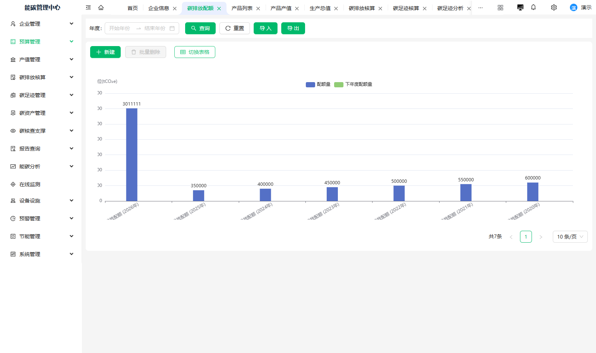
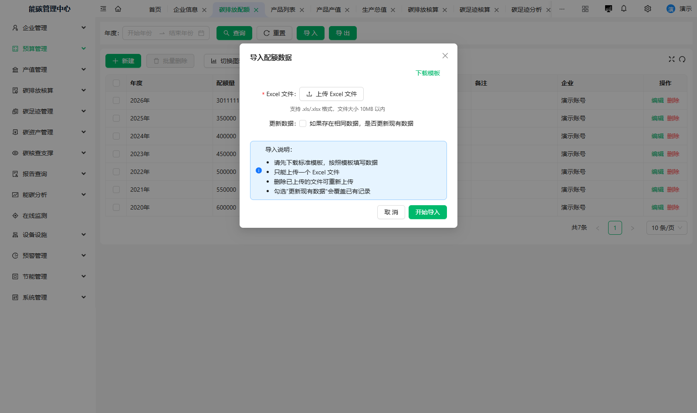
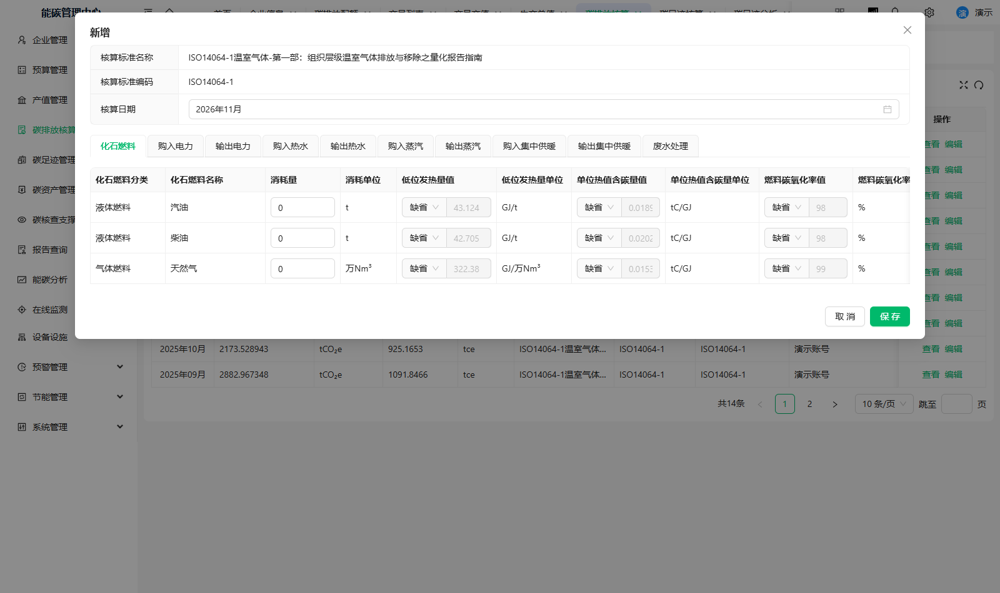
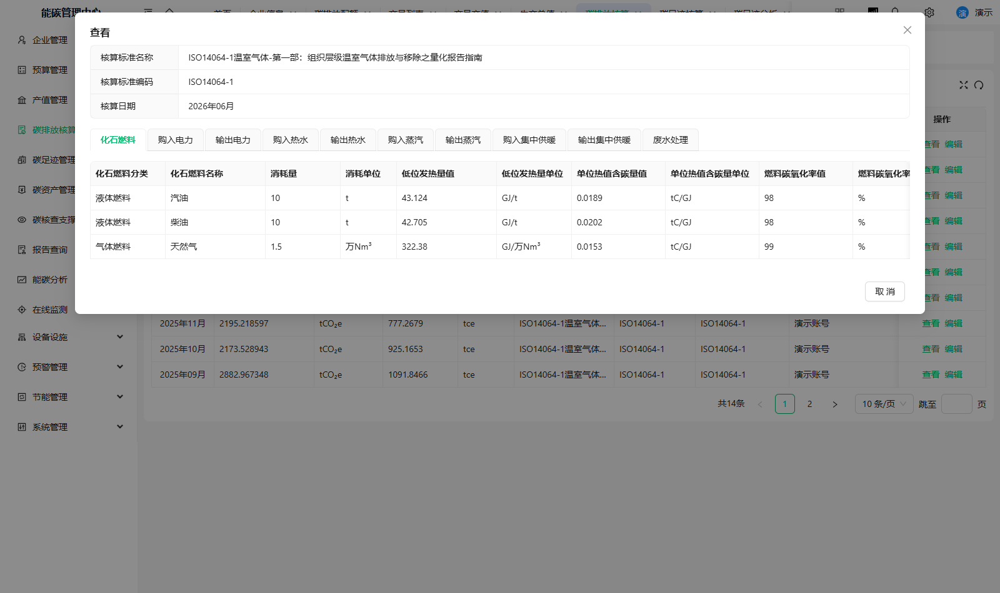
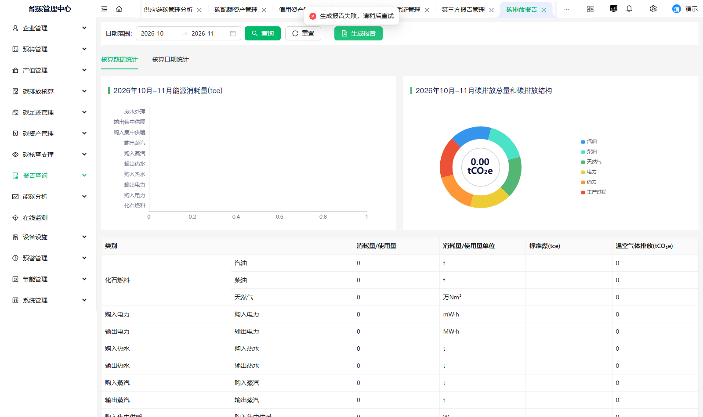
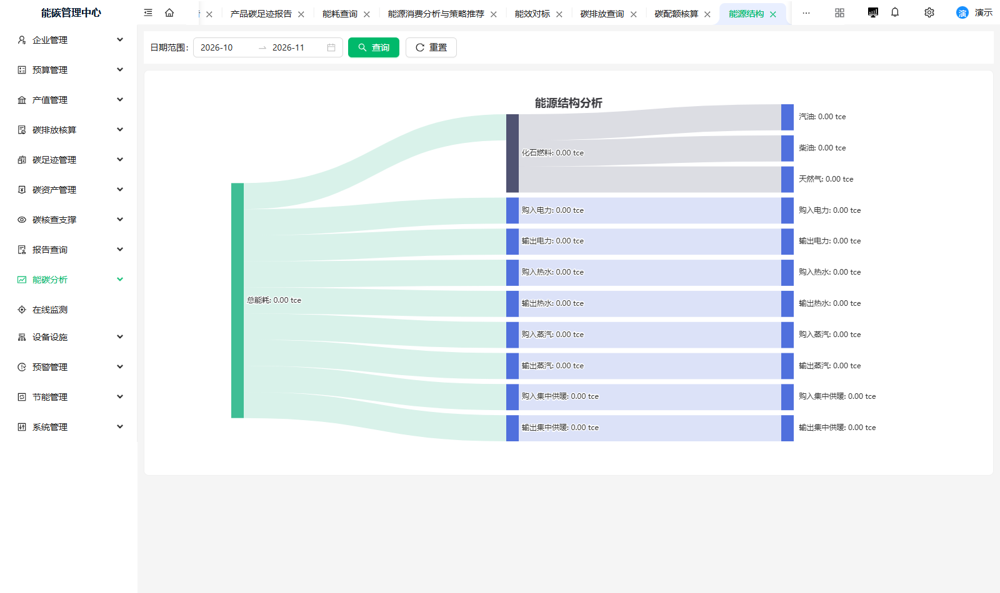
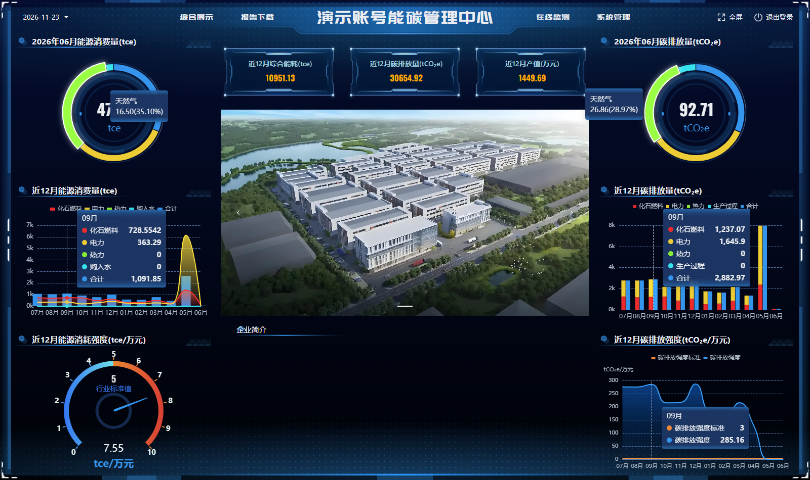

能碳管理中心（bjstzh.com）竞品功能研究报告
调研对象：
https://www.bjstzh.com/#/login（产品名"能碳管理中心"） 调研账号：能碳演示账号（企业：演示账号；所属区域：吉碳集团；账号有效期 2029-03-10） 调研方式：真实浏览器登录后逐菜单点击、逐页面结构抓取、弹窗与表单逐字段读取、接口调用记录 调研时间：2026-11-23（二十五轮：… → 前端页面规格清单） 调研原则：以只读方式浏览为主，未修改密码、未变更任何账户设置。第二轮校验测试中发生一次误写入（因表单日期默认预填，点"保存"后生成 1 条 2026-11 空核算记录），已尝试删除但无权限，详见 §9.6 事件说明。
0. 研究说明与边界
0.1 本次实际验证到的范围
| 类别 | 覆盖情况 |
|---|---|
| 一级菜单 | 14 个全部进入（企业管理、预算管理、产值管理、碳排放核算、碳足迹管理、碳资产管理、碳核查支撑、报告查询、能碳分析、在线监测、设备设施、预警管理、节能管理、系统管理） |
| 二级页面 | 34 个页面逐页访问并抓取表单/表格/按钮/图表 |
| 新增表单 | 19 个弹窗逐字段读取（含 10 个页签的碳排放核算表单） |
| 业务大屏 | #/visualization/CarbonEnergy 及其"在线监测"子视图、移动端登录跳转 |
| 个人中心 | /account 五个页签（个人中心/修改密码/我的消息/我的通知/登录日志/操作日志）全部进入 |
| 第二轮深度验证 | 报告生成失败根因、导出与模板下载权限矩阵、在线监测模块路由探测、移动端适配、文件下载行为 |
| 第三轮内容层 | 预算调整建议全文、策略推荐文案、10 类排放源默认因子、下拉字典枚举、确认弹窗文案、编辑态约束、大屏窗口口径 |
| 第四轮底层 | RBAC 权限点全量（146 条菜单/99 条权限）、实体字段（16 个实体）、核算与足迹公式验算（误差 0） |
| 第五轮复核 | 重新独立验证 8 项结论、纠正 3 处错误、发现 4 个新缺陷（报告输出行、足迹名称列、运输单位、2025 年度边界） |
| 第六轮补证 | 推翻 2 处判断（大屏偏差仅限大屏、足迹列实为录入占位）、精确化预算基线（20 万/40 万吨）、验证 6 个强度公式、确认能效阈值 |
| 第七轮接口层 | 挖出光伏/设备联动/核算标准三个隐藏接口、144 类目多行业模板、权威因子表、单位体系三处矛盾、产值双口径（1389 vs 340.63） |
| 第八轮文档对照 | 找到内置帮助中心（可下载官方手册 v2.0 与架构文档）、官方功能蓝图 vs 交付菜单差异、推翻"预算硬编码"判断、确认换算率含义、573 chunk 全景 |
| 第九轮官方截图 | 拆出 12 项功能截图：完整版侧边栏、能流分析桑基图、能效平衡损失表、用能配额；推翻"核算标准固定 ISO14064-1"（实为 GB/T 32151 行业标准可切换）；三个租户多行业证据 |
| 第十轮架构与标准 | 读完架构文档（四层架构/五条技术路线）、定位到工信部《数字化能碳管理中心建设指南》源头、证实"标准决定页签与因子"（天然气 380.31 vs 322.38）、修正第九轮菜单差异表述、发现 material 物料库等新 chunk |
| 第十一轮三端与验收 | 发现同域名两套新大屏（碳足迹农产品品牌、碳资产数智化：控排企业/CCER/碳普惠/绿证）、拿到官方《平台验收报告示例》12 项验收要点、列出 5 处验收与实测差距 |
| 第十二轮拆包验伪 | 拆开三块大屏 chunk：仅企业端接后端，碳足迹/碳资产两块为硬编码静态演示（饿了么 CDN 图片、写死蓝莓文案）；门户站有 CMS 但零运营 |
| 第十三轮报告真相 | 报告实为 5 类+年报（核查/年报无权限）；历史归档 15 份（12 份 PDF 简报 + 3 份 HTML 伪装 .doc）；PDF 由 OpenPDF 2.0.3 生成（非整页截图）；报告数值与系统差 100 倍、单位错配（两代都错）；导入分"覆盖/只增"两类 |
| 第十四轮全量扫描 | 提取 375 个接口、探测 153 个只读：53 可用/12 无权限/38 平台端/46 缺参/4 不存在；推翻"在线监测未开通"——后端真实在跑（在线 47 台、离线 4662、29 条接入配置、12 条解析规则、EMQX 实时客户端、3 条离线事件）；发现能效优化建议与能量平衡接口；导出确认 30005 |
| 第十五轮数据盘点 | 6 种工业协议（JSON/Modbus-RTU/DLT645/Modbus-TCP/大庆自定义/自定义）、141 类目（cat5=102）、资产台账 CEA 10 万/绿证 2.3 万/CCER 1.3 万、预警 8 事件无预算类、门户交易 61 条全 0；解开产值双口径：queryList=生产总值 340.63，queryComplete=产品产值 1089+6 月兜底 300=1389，产量 6169（兜底只补产值不补产量） |
| 第十六轮采集实测 | 3 个真实 MQTT broker（百度云 IoT/韦玛荣光共用/本地 EMQX）；构造报文实测解析通过（多设备拆分+字段重映射+默认值注入）；141 类目 5 大类分布；设备 19 台/数据 29 条（换算率 1/2/10、含 KPa、采集占 16 条） |
| 第十七轮结论审计 | 对 30 条核心结论分级（28 A / 2 B），新发现 carbon-monitor 缺租户过滤（7 个企业 ID 混返、本租户仅 19 台却读到 4709 台）；修正 5 处：在线监测读数属他人、broker 为平台级、报告数值差降级（快照/模板）、"只增不改"改为"可改不可删"、"不可删=没授权"升级为"设计无删除"；附方法论局限 6 条与最可靠 8 条 |
| 第十八轮审计的审计 | 5 项复现实验：越权收窄到 4 个接口（administratorFlag=false 排除超管解释）；大屏年度边界直接复现 22204.32；产值兜底用 2025 年（无产品产值→整年退回总值 121.02）验证，B 升 A；146 节点=15 目录+32 页+99 按钮；当前库仅 1 条足迹且无 2025 记录，报告确为旧快照 |
| 第二十五轮规格清单 | 独立交付《前端页面规格清单》：14 模块/32 页，逐页 路由+组件+关键文件+字段必填+校验文案+按钮+接口+交互+问题；定位 20 个 form chunk、17 个 api chunk |
| 第二十四轮跳转与异常 | 页签每开一页+1、可切换但不保状态（第2页切回变第1页）；Enter 不触发查询（3→3）；日期无快捷预设；设施树点击带 facilityId 过滤；拦截 queryPage 返回业务错误 → 无 toast、表格清空（静默失败）；空表单保存 → 4 条字段级红字 + 汇总 toast、弹窗不关 |
| 第二十三轮弹窗字段 | 产值弹窗（产品*/产值*/产量*/单位/月份*/备注，选产品自动带出单位）、设备数据弹窗（设备*/日期*/数值*/单位*/换算率手填*/来源/状态）、交易弹窗（资产名称*/数量*/单价*/金额(非必填)/类型*/成交日期*/用途）；删除有二次确认；查询请求体含 outputDate 数组、enterpriseId、pageNum、pageSize=10 → enterpriseId 前端注入 |
| 第二十二轮32页清点 | 从 menuList 取全部 32 路径逐页扫描：14 CRUD 表格页 / 9 分析展示页 / 3 报告页；按钮矩阵（导入导出 10 页、仅导出 1 页、禁用 4 页、下载 2 页、添加下级 1 页、切换图表 1 页）；企业信息为只读档案（15 字段无编辑）；产品含 1/2/3 级能耗值；碳配额核算 5 卡（配额使用率 0.50% = 14943.16/3011111 精确吻合）；交易页新建被改密遮罩拦截 |
| 第二十一轮前端交互 | DOM 实测 8 页按钮/列/必填/请求；核算弹窗三态对比（新增/查看/编辑：21 表 vs 0 表、108 输入 vs 3）；批量删除全选后启用；导出先校验年份再 30005；生成报告无防重；改密弹窗遮罩常驻 |
| 第二十轮结构与因子 | 标准 detail 顶层 33 字段 / calculationItemList 10 项 / 每项 165 字段含 144 槽位 / 类目字典 141，三者对齐；144 与 141 差额来自聚合口径与同义命名；单次响应 103KB 稀疏宽表；45 条燃料因子与 GB/T 2589 一致，撤回"折标偏低"怀疑 |
| 第十九轮拆代码验功能 | 推翻上一轮：核算 API 模块有 delete 方法、列表页有“确定要删除选吗”确认弹窗 → 删除功能已实现、仅按钮未授权；方法论纠错（菜单树=权限快照≠功能清单）；否决“模板公网可达”假象（200 是 SPA fallback，496 字节）；新发现 ignoreExceedAverageFlag/export/import/光伏月发电量 4 个钩子 |
| 写操作 | 除 §9.6 的一次误写入外，未执行新增/编辑/删除/导入/导出/改密 |
0.2 关键限制（详见第 7 章）
- 侧边栏"在线监测"页面为空白：前端打包含 6 个监测组件，但当前账号未挂载任何子路由，8 个候选路径全部 404。
- "系统管理 → 地区管理"无对应页面（菜单 path 为空），
/sys路由为空白页；操作日志显示后端存在"系统-用户管理"等模块，但前端未开放。 - 三类报告生成全部失败，原因各不相同：碳排放报告为内网模板服务截图失败、产品碳足迹报告为无权限、能源利用报告为无数据。
- 导出/下载普遍受限：产品导出、设备与配额模板下载均返回 30005 无权限；配额页"导出"按钮点击无任何请求。
- 预警记录、待办通知、设备最新数据在演示账号下均为空，预警触发链路未能实测。
- 单一演示账号，无法验证角色/企业维度的菜单与数据隔离差异。
1. 产品总体概览
1.1 定位判断
面向单一用能企业（排放企业）的组织级碳管理 SaaS，主线是"能源与碳排放数据填报 → 核算 → 分析 → 报告 → 核查归档"，并叠加"配额/资产/交易"与"设备/预警/节能"两条管理支线。核算方法学采用 ISO 14064-1（列表可见"ISO14064-1 温室气体-第一部分：组织层级温室气体排放与移除之量化报告指南"），产品碳足迹采用"从摇篮到大门"边界。
第十一轮重大修正：同域名下还挂着两套完全不同的大屏——"碳足迹大屏"（农产品/工业品零碳品牌）与"碳资产数智化管理平台"（全国地图、控排企业名录、配额分配、CCER、碳普惠、绿证）。说明该产品不只服务单一企业，而是企业端 + 区域品牌端 + 政府/园区端三端并行（见 §18.1）。
1.2 技术形态
| 项 | 观察结果 |
|---|---|
| 前端 | Vue 3 + Ant Design Vue（ant- 前缀组件、css-p8nxfn 原子类），SPA 哈希路由 #/ |
| 后端 | 统一 /api/** REST 接口，返回 {code:0,msg,data} 结构；错误码 30005=无权限、30007=登录失效、10001/10002=系统异常 |
| 框架 | RuoYi-Vue-Plus（操作日志中留痕"获取密码复杂度 @author 卓大"，为该框架作者签名；分页/字典/日志/OSS 等均为其标准实现） |
| 令牌 | Authorization: Bearer <token>，token 存 localStorage.smart_admin_user_token，另有 smart_admin_user_tag_nav 存页签 |
| 菜单 | 后端下发（登录接口 login/getLoginInfo 返回 menuList，含 path/component/权限点），前端动态挂载路由 |
| 多页签 | 顶部支持多标签页并存、关闭、更多（...）、磁贴（宫格）入口 |
| 登录 | 用户名 + 密码 + 4 位图形验证码；密码前端加密后提交；支持"邮箱二次验证"开关（本账号关闭） |
| 报告引擎 | 后端按章节渲染 HTML 模板 → 调截图服务出图 → 合成 PDF；模板地址为内网 192.168.1.6:25525（见 §9.1） |
| 大屏 | 独立的 visualization 应用（深色大屏），与后台共用登录态，移动端登录后默认跳转大屏 |
1.3 账号信息（登录后可读）
- 用户名：能碳演示账号；姓名：演示；用户类型：
ADMIN_USER（administratorFlag=false，非超管） - 企业：演示账号；区域：吉碳集团；账户有效期：2029-03-10
- 首次登录强制弹出"定期修改密码"提醒（可关闭，本次未改密）
2. 菜单结构与页面入口
2.1 全局框架
- 左侧：一级模块折叠菜单（图标 + 名称 + 展开箭头）
- 顶部：折叠按钮、首页图标、多页签、消息中心（消息/通知/预警/待办事项）、设置、用户菜单（个人中心/修改密码/退出登录）
- 主区：查询条件区 → 操作按钮区 → 表格/图表区 → 分页；列表页右上角有"全屏/刷新"图标

2.2 完整菜单树（含前端路由）
说明：
menuType=1为目录（无页面），menuType=2为页面；第三层为按钮级权限点，不产生页面。
| 一级模块 | 路由前缀 | 二级页面 | 页面路由 |
|---|---|---|---|
| 首页 | /home |
工作台 | /home |
| 企业管理 | /org |
企业信息 | /enterprise/info |
| 预算管理 | /budget |
碳排放配额 | /carbon-emission/quota/list |
| 产值管理 | /carbon-output |
产品列表 | /carbon-product/product/list |
| 产品产值 | /carbon-output/production-value/list |
||
| 生产总值 | /carbon-output/total-value/list |
||
| 碳排放核算 | /carbon-computation |
碳排放核算 | /carbon-computation/calculation-complete/list |
| 碳足迹管理 | /carbon-footprint |
碳足迹核算 | /carbon-footprint/product-footprint/list |
| 碳足迹分析 | /carbon-footprint/product-footprint-analysis/index |
||
| 供应链碳管理 | /carbon-footprint/supplier-footprint/list |
||
| 供应链碳管理分析 | /carbon-footprint/supplier-footprint-analysis/index |
||
| 碳资产管理 | /carbon-asset |
碳配额资产管理 | /carbon-asset/asset/list |
| 信用资产管理 | /carbon-asset/ccer/list |
||
| 交易管理 | /carbon-asset/trade/list |
||
| 碳核查支撑 | /carbon-verify |
原始凭证管理 | /carbon-verify/evidence/list |
| 第三方报告管理 | /carbon-verify/report/list |
||
| 报告查询 | /carbon-report |
碳排放报告 | /carbon-report/calculation-report/query |
| 能源利用报告 | /carbon-report/energy-utilization-report/query |
||
| 产品碳足迹报告 | /carbon-report/product-footprint-report/query |
||
| 能碳分析 | /carbon-analysis |
能耗查询 | /carbon-analysis/energy-consumption-query/index |
| 能源消费分析与策略推荐 | /carbon-analysis/energy-strategy-recommend/index |
||
| 能效对标 | /carbon-analysis/energy-efficiency-benchmarking/index |
||
| 碳排放查询 | /carbon-analysis/energy-usage-management/index |
||
| 碳配额核算 | /carbon-analysis/carbon-quota-calculation/index |
||
| 能源结构 | /carbon-analysis/energy-structure-analysis/index |
||
| 在线监测 | /carbon-monitor |
无子菜单（页面空白，见 7.1） | /carbon-monitor |
| 设备设施 | /carbon-facility |
设施管理 | /carbon-facility/facility/list |
| 设备管理 | /carbon-facility/device/list |
||
| 设备数据 | /carbon-facility/device-data/list |
||
| 预警管理 | /common-warning |
事件预警 | /common-warning/event/list |
| 预警设置 | /common-warning/setting/list |
||
| 预警记录 | /common-warning/record/list |
||
| 节能管理 | /carbon-economize |
节能改造项目 | /carbon-economize/renovation-project/list |
| 能源管理情况 | /carbon-economize/management-situation/list |
||
| 系统管理 | /sys |
地区管理（无页面） | — |
| （独立大屏） | /visualization |
综合展示 / 报告下载 / 在线监测 / 系统管理 | /visualization/CarbonEnergy |
3. 模块详解
3.1 首页（工作台）
入口：登录后默认页 /home
页面结构
- 欢迎区：欢迎语 + 当前时间 + 账户有效期
- KPI 卡片 ×2：
2026年综合能耗(tce)、2026年碳排放总量(tCO₂e)（实测值 5041.22 / 14943.16） - 图表 ×2：近 12 月能源消费量（柱状，单位 tce）、近 12 月碳排放量（面积/折线，单位 tCO₂e）
- 右栏 ×2：待办通知（空态"暂无待办通知"）、预警记录（空态"暂无预警记录"）
核心功能：年度累计指标看板、近 12 月趋势、待办与预警聚合。
数据来源：platform-home/ToBeDoneNotice/queryList、platform-home/WarningRecord/queryList、platform-home/CarbonEnergy/queryList
前后置条件：KPI 依赖碳排放核算与设备/能源数据；无数据时卡片为 0，页面不报错。
3.2 企业管理 → 企业信息
入口：/enterprise/info（菜单"企业管理"唯一子项）
页面结构：只读的"标签—值"明细表，字段包括： 企业名称、企业简称、企业 Logo（带"预览"）、企业类型、统一社会信用代码、法定代表人、营业执照（图片预览）、注册日期、注册资本、联系人、联系人电话、联系人邮箱、企业简介、企业图片、备注。
核心功能：企业档案展示；Logo/营业执照图片预览。
前后置条件：数据来自 system/enterprise/detail/{enterpriseId}；本账号未见编辑入口（页面上没有保存/编辑按钮），推断企业档案由平台方或上级管理员维护。

3.3 预算管理 → 碳排放配额
入口：/carbon-emission/quota/list
列表
- 筛选：年度（起止年份区间）
- 列：年度、配额量、配额量单位、下年度配额量、备注、企业、操作
- 操作：新建、批量删除、切换图表、导入、导出、编辑、删除
- 演示数据：2020—2026 共 7 条，2026 年配额量 3,011,111 tCO₂e（明显为演示值），下年度配额量全部为空
图表视图：点击"切换图表"变为柱状图（Y 轴单位 tCO₂e，图例"配额量 / 下年度配额量"，X 轴为各年度记录），按钮变为"切换表格"。

新增表单（弹窗标题"添加"）
| 字段 | 必填 | 说明/占位 |
|---|---|---|
| 年度 | 是 | 选择年度（月份选择器） |
| 配额量 | 是 | 数值 |
| 下年度配额 | 否 | 占位提示"默认与本年配额量一致，可修改" |
| 备注 | 否 | 文本 |
导入弹窗（标题"导入配额数据"）
- 下载模板（Excel）
- 上传 Excel（
.xls/.xlsx，单文件，≤10MB） - 勾选"更新数据（如果存在相同数据，是否更新现有数据）"
- 开始导入
导入说明原文：请先下载标准模板；只能上传一个 Excel 文件；删除已上传的文件可重新上传；勾选"更新现有数据"会覆盖已有记录。

业务含义：企业年度碳排放配额的预算台账，是"碳配额核算"分析页的配额基数来源。
3.4 产值管理（3 个页面）
3.4.1 产品列表
- 路由：
/carbon-product/product/list - 筛选：产品名称
- 列：产品名称、产品介绍、产品类型、规格型号、产品功能、产品分类、单位、1/2/3 级单位产品能耗值、产品图片、企业、禁用状态、备注、操作
- 操作：新建、批量删除、导入、导出、编辑、删除（无禁用按钮，仅展示禁用状态列）
- 演示数据：9 条灯具类产品（吸顶灯/筒灯/壁灯/吊灯等），单位多为"个/件/吨"
新增表单字段：产品名称*、规格型号、产品功能、产品介绍、产品类型（一般产品/工业产品）、产品分类（工业产品）、单位*、1/2/3 级单位产品能耗值、备注、产品图片（上传）、工艺流程图（上传）。
下游用途：产品是"产品产值""碳足迹核算""产品碳足迹报告""能效对标-产品对标"的前置主数据；1/2/3 级单位产品能耗值用于产品对标的分级判定。
3.4.2 产品产值
- 路由：
/carbon-output/production-value/list - 筛选：日期（月份区间）
- 列：日期、产品名称、产值、产值单位、产值类型、产量、产量单位、备注、企业、操作
- 操作：同标准 CRUD + 导入/导出
- 表单：产品*（下拉选产品）、产值*、产量*、产量单位、月份*、备注
3.4.3 生产总值
- 路由：
/carbon-output/total-value/list - 列：日期、生产总值名称、总产量、总产量单位、总产值、总产值单位、产值类型（总值/产品/其他）、备注、企业、操作
- 表单：月份*、生产总值名称、总产量*、总产量单位*、总产值*、备注
- 演示数据：2025-08 ~ 2026-06 共 17 条，缺 2026-05（该缺失直接导致 5 月报告"企业产值=0、碳排放强度=0"，见 5.2 验证）
业务含义：产值是强度类指标（tce/万元、tCO₂e/万元、单位产值能耗）的唯一分母来源。

3.5 碳排放核算（核心模块）
入口：/carbon-computation/calculation-complete/list
3.5.1 列表页
- 筛选：核算日期（月份起止区间）
- 列：核算日期、温室气体量、温室气体单位（tCO₂e）、能源量、能源单位（tce）、核算标准名称、简称、编码、企业、操作
- 行操作：查看、编辑（无删除、无批量删除、无导入）
- 演示数据：14 条月度记录（2025-05 ~ 2026-06，第五轮接口全量核对；此前误记为 2025-09 起），如 2026-05：7961.314284 tCO₂e / 2621.85 tce
观察：核算记录不提供删除能力，只允许编辑，符合碳核算数据的审计留痕要求，是竞品在合规性上的一处刻意设计。

3.5.2 新增/编辑表单（弹窗"新增"）
固定头部（只读汇总行）
- 核算标准名称：ISO14064-1 温室气体-第一部：组织层级温室气体排放与移除之量化报告指南
- 核算标准编码：ISO14064-1
- 核算日期：月份选择器（必填）
10 个排放源页签（每个页签是一张可编辑明细表，行内直接录入）
| 页签 | 列结构（关键字段） |
|---|---|
| 化石燃料 | 化石燃料分类、化石燃料名称、消耗量*、消耗单位、低位发热量值/单位、单位热值含碳量值/单位、燃料碳氧化率值/单位、折算标准煤系数值/单位、备注 |
| 购入电力 | 购入电力、消耗量、消耗单位、排放因子/单位、折算标准煤系数/单位、备注 |
| 输出电力 | 输出电力、消耗量、消耗单位、排放因子/单位、折算标准煤系数/单位、备注 |
| 购入热水 | 名称、消耗量、消耗单位、温度值/单位、常温常压比热值/单位、排放因子值/单位、折算标准煤系数值/单位、备注 |
| 输出热水 | 同上 |
| 购入蒸汽 | 名称、消耗量、单位、温度值/单位、压力值/单位、热焓值/单位、排放因子值/单位、折算标准煤系数值 |
| 输出蒸汽 | 同上 |
| 购入集中供暖 | 名称、供暖面积值/单位、供暖时长值/单位、室内计算温度值/单位、室外计算温度值/单位、室外平均温度值/单位、热指标值/单位、排放因子、折标系数 |
| 输出集中供暖 | 同上 |
| 废水处理 | 名称、废水量/单位、进口/出口平均 COD 浓度值/单位、甲烷回收量/单位、排放因子值/单位、全球变暖潜能值/单位 |
内置默认参数（化石燃料行预置，可改）
- 汽油：低位发热量 43.124 GJ/t、单位热值含碳量 0.0189 tC/GJ、碳氧化率 98%
- 柴油：42.705 GJ/t、0.0202 tC/GJ、98%
- 天然气：322.38 GJ/万Nm³、0.0153 tC/GJ、99%
- 蒸汽行默认带"饱和蒸汽 / 89.96℃ / 0.070MPa / 2660.2"的预设项
底部按钮：取消、保存

3.5.3 查看（只读详情）
弹窗标题"查看"，结构与新增一致：头部三行汇总（标准名称/编码/核算日期）+ 10 个页签的只读明细，底部仅"取消"。

3.5.4 操作流程（新增一条月度核算）
前置条件
- 企业档案已存在（企业信息）
- 已确定核算标准（本企业为 ISO14064-1；产品本身支持 GB/T 32151 行业标准切换，见 §16.4）
- 已收集该月各排放源活动数据（燃料消耗量、外购/外输电量、热力、蒸汽、废水等）
步骤
- 进入"碳排放核算"列表 → 点"新建"
- 选择核算日期（月份）
- 依次在 10 个页签录入该月活动数据（未涉及的页签可留空；每类默认系数已预置）
- 点"保存"（本次未提交，保存后的计算与校验逻辑未验证）
- 保存成功后列表新增一条记录，显示计算得到的温室气体量（tCO₂e）与能源量（tce）
- 该记录随即可被"碳排放报告""能耗查询""碳排放查询""能源结构""策略推荐""能效对标""碳配额核算"读取
后置影响：新增/修改核算记录会改变报告、分析、大屏与配额核算的所有派生数值（同一数据源 carbon-report/CalculationReport/queryComplete）。
编辑流程：列表行"编辑" → 同表单预填 → 修改 → 保存（未提交验证）。
3.6 碳足迹管理（4 个页面）
3.6.1 碳足迹核算
- 路由：
/carbon-footprint/product-footprint/list - 筛选：产品名称（下拉，需先选产品）
- 列：产品名称、产品数量、产品单位、产品介绍、碳足迹值、碳足迹单位、碳足迹日期、核算边界、备注、企业、操作
- 操作：新建、批量删除、编辑、删除（无导入/导出）
- 演示数据：6 条产品足迹（如"百合花朵吸顶灯 1.45518 tCO₂e/t"）
新增表单结构（三段式 LCA 录入）
| 区块 | 字段/列 |
|---|---|
| 头部 | 年度*、产品*（下拉）、产品单位*、产品产量*、碳足迹值*、碳足迹单位*、核算边界*（下拉，默认"从摇篮到大门"）、备注 |
| 原材料获取阶段排放核算 | 原材料名称、原材料数量、原材料单位、排放因子值、排放因子单位、温室气体量、温室气体单位、备注、操作（行内"新增"） |
| 原材料运输阶段排放核算 | 原材料名称、数量、单位、运输方式、起始地、目的地、里程、排放因子值/单位、温室气体量/单位、备注、操作 |
| 生产阶段排放核算 | 排放源、数量、单位、排放因子值/单位、温室气体量/单位、数据来源、备注、操作 |
流程要点：三个阶段的明细行相加得到产品碳足迹值；碳足迹值既是输入项也是计算结果（页面允许直接填，实际业务中应由三段明细汇总——此联动关系未验证）。

3.6.2 碳足迹分析
- 路由：
/carbon-footprint/product-footprint-analysis/index - 筛选：日期（年份）+ 产品名称
- 内容：
- 产品信息头（产品名称、描述、单位、碳足迹值、碳足迹单位、碳足迹日期）
- "碳足迹阶段信息"横向条形图，按 原材料获取-1 / 原材料运输-2 / 生产阶段-3 三个阶段展示 tCO₂e/t 与占比量级
- 前置条件：该产品在所选年份存在碳足迹核算记录，否则无图

3.6.3 供应链碳管理
- 路由：
/carbon-footprint/supplier-footprint/list - 结构：树形表格（可展开
+），支持多级供应商 - 列：供应商名称、产品名称、产品单位、碳足迹值、碳足迹单位、碳足迹日期、减排目标值、企业、排序、备注、操作
- 行操作：添加上级、编辑、删除
- 顶部：新建（新增顶级供应商）
- 筛选：供应商名称、产品名称
新增表单：下级供应商（下拉，可为空）、供应商名称*、产品名称*、产品单位、碳足迹值*、碳足迹单位*、碳足迹日期*、减排目标值、排序、备注。
说明：通过"新建（顶级）+ 添加上级/下级"的组合，可构建供应链层级关系，是竞品中较有差异化的能力。

3.6.4 供应链碳管理分析
- 路由：
/carbon-footprint/supplier-footprint-analysis/index - 筛选：供应商名称（下拉）、日期
- 内容：链路式节点图（从左到右的上游→下游链路），每个节点显示"供应商-产品 / 碳足迹值-单位"，节点间连线，节点带
+展开更多层级 - 实测链路示例：智慧科技供应商-全品 10 → 防震挂钩供应商-防震挂钩 10 → 光源模组供应商-光源模组 100 kgCO₂e/个

3.7 碳资产管理（3 个页面）
3.7.1 碳配额资产管理
- 路由：
/carbon-asset/asset/list - 筛选：年度
- 列：资产名称、资产数量、单位、资产类型、备注、企业、年度、禁用状态、操作
- 操作：新建、批量删除、导入、导出、编辑、删除、禁用
- 表单：资产名称*、资产数量*、单位*、资产类型*（下拉，含"信用资产"）、备注、年度
3.7.2 信用资产管理（CCER）
- 路由：
/carbon-asset/ccer/list - 列：资产名称、资产数量、单位、资产类型、资产状态、备注、企业、年度、操作
- 表单：资产名称*、资产数量*、单位*、资产类型*（如"光热发电"）、资产状态*（如"待申请"）、备注、年度
- 操作：同配额资产（本页未见"禁用"按钮，状态通过表单字段维护）
3.7.3 交易管理
- 路由：
/carbon-asset/trade/list - 筛选：成交日期（区间）、资产类型、交易方向
- 列：资产类型、交易数量(tCO2e)、交易金额(元)、交易类型（购入/出售）、购买／出售方、用途、交易日期、操作
- 表单：资产名称*、交易数量(tCO2e)*、交易单价(元)*、交易金额(元)（联动）、资产类型*、交易类型（购入/出售）、成交日期*、用途/备注
三者关系（页面可读出的业务语义）：配额资产/CCER 资产形成企业"碳资产台账"，交易管理记录资产的买入/卖出流水，构成"配额—资产—交易"闭环；页面未提供三者间的数量自动核减联动，属于台账式管理。

3.8 碳核查支撑（2 个页面）
3.8.1 原始凭证管理
- 路由：
/carbon-verify/evidence/list - 筛选：凭证名称
- 列：凭证名称、凭证编码、凭证描述、有效期限、备注、企业、操作
- 操作：新建、批量删除、编辑、删除、下载
- 表单：凭证名称*、凭证编码、凭证描述、有效期限（区间）、备注 + 附件表格（文件名称、文件类型、备注、操作）
3.8.2 第三方报告管理
- 路由：
/carbon-verify/report/list - 列：报告名称、报告描述、报告文件、有效期限、备注、企业、操作
- 操作：新建、批量删除、编辑、删除、下载
- 表单：报告名称*、报告描述、报告文件*（上传）、有效期限、备注
定位：为第三方核查/审计准备的证据归档库（凭证 + 认证报告），与核算数据无字段级联动，仅为附件与台账。

3.9 报告查询（3 个报告页）
3.9.1 碳排放报告
- 路由：
/carbon-report/calculation-report/query - 筛选：日期范围（月份区间，默认当月-次月）
- 按钮：查询、重置、生成报告
- 页签 1「核算数据统计」
- 左图：所选区间能源消耗量（横向条形，按汽油/柴油/天然气/购入电力/输出电力/…分类，单位 tce）
- 右图：碳排放总量和结构（甜甜圈，图例：汽油、柴油、天然气、电力、热力、生产过程）
- 明细表：类别 / 明细 / 消耗量·使用量 / 单位 / 标准煤(tce) / 温室气体排放(tCO₂e)
- 表尾：温室气体排放合计、企业产值(万元)、碳排放强度(tCO₂e/万元)
- 页签 2「核算日期统计」
- 能耗趋势图(tce)、CO₂ 及产值趋势图
- 卡片：碳排放强度、能耗强度
- 能碳数据分析表：日期 / 能量消耗量(tce) / 碳排放量 / 产值(万元)
生成报告流程（第二轮查清）
- 选周期 → 查询（有数据）
- 点"生成报告" → 全屏加载态"稍等片刻，我在拼命加载中…"
- 后端调用
CalculationReport/queryCompletePdf，约 30–40 秒后返回 - 加载态消失，页面弹出两条错误提示：
java.lang.IllegalStateException: 网页截图失败: http://192.168.1.6:25525/common-template/html/calculation/briefing/fuel?completedEndDate=2026-05-31%2023:59:59&enterpriseId=2031340904327065601&completedStartDate=2026-05-01%2000:00:00生成报告失败，请稍后重试
- 根因：报告不是直接生成的 PDF，而是后端按章节（如
calculation/briefing/fuel）渲染 HTML → 调无头截图服务逐页出图 → 合成 PDF；模板服务地址被配置为内网192.168.1.6:25525，公网演示环境不可达，故每次都在 30–40 s 后失败 - 结论：报告功能在本演示环境不可用，且暴露了内网地址与"截图合成"这一实现路径
无数据周期：不发请求，直接提示"生成报告失败，请稍后重试"（实测 2026-10~11 周期）。

3.9.2 能源利用报告
- 路由：
/carbon-report/energy-utilization-report/query - 结构同上（能源消耗条形图 + 用能结构图 + 能源数据分析表）
- 额外指标：单位产值能耗、单位产品能耗
- 表尾：能源消耗合计(tce)、企业产值(万元)、企业产量(功能单位)
- 生成报告 →
EnergyUtilization/queryCompletePdf；无数据时提示"没有查到对应的填报数据，请先进行数据填报"，随后仍统一提示"生成报告失败，请稍后重试"
3.9.3 产品碳足迹报告
- 路由：
/carbon-report/product-footprint-report/query - 筛选：日期（年份）+ 产品名称
- 内容：产品信息头 + 三阶段明细表，每段带"合计碳足迹值 + 占比"
实测示例（百合花朵吸顶灯，2026）：
| 阶段 | 明细 | 合计碳足迹值 | 占比 |
|---|---|---|---|
| 原材料获取 | 1 原材料，100 t，因子 0.75 tCO₂e/t，排放 75 tCO₂e | 0.015 tCO₂e/t | 1.03% |
| 原材料运输 | 2 运输，2000 t，18 km，因子 0.2 tCO₂e/t，排放 7200 tCO₂e | 1.44 tCO₂e/t | 98.96% |
| 生产阶段 | 3 排放源，3 t，因子 0.3，排放 0.9 tCO₂e | 0.00018 tCO₂e/t | 0.01% |
- 生成报告 →
productFootprint/genBriefReport（简报式报告）；本账号调用返回 30005 无权限，仅提示"对不起，您没有权限访问此内容哦~"

3.10 能碳分析（6 个页面）
| 页面 | 路由 | 筛选 | 核心内容 |
|---|---|---|---|
| 能耗查询 | /carbon-analysis/energy-consumption-query/index |
日期范围（月） | 能源消费量横向条形图、总量与用能结构图；明细表（类别/能源消费量/单位/标准煤/折标系数）；表尾综合能耗合计、企业产值、能耗强度(tce/万元) |
| 能源消费分析与策略推荐 | /carbon-analysis/energy-strategy-recommend/index |
日期范围 | 用能结构图、能源消耗对比、用能策略推荐（分时用能优化建议、用能设备启停负载优化策略）；表（类别/标准煤） |
| 能效对标 | /carbon-analysis/energy-efficiency-benchmarking/index |
日期范围 | 页签「行业对标 / 产品对标」；能效对标图、能源消费量与产量趋势图；卡片总能源量/平均能效值；明细表（日期/能源量/产量/能效标杆值/能效基准值/能效值/策略建议/状态"标杆水平"） |
| 碳排放查询 | /carbon-analysis/energy-usage-management/index |
日期范围 | 能源消费量图、碳排放量与产值图；表（类别/温室气体排放/同比/环比）；表尾总能耗、总碳排放、范围一排放合计、范围二排放合计 |
| 碳配额核算 | /carbon-analysis/carbon-quota-calculation/index |
年度 | 5 张卡片：碳排放配额、减排目标、碳排放量、配额使用比例、预计下年度配额；"用能和碳排放预算动态调整建议"（可展开）；"月碳排放"图（柱=预算量，线=排放量） |
| 能源结构 | /carbon-analysis/energy-structure-analysis/index |
日期范围 | 桑基图：总能耗 → 化石燃料/购入电力/输出电力/购入热水/…/废水处理 → 明细项，节点标注 tce |
关键观察
- 6 个分析页共用同一核算结果接口
carbon-report/CalculationReport/queryComplete（策略推荐另加queryEnergyQuantityStrategySuggestion，配额核算另加queryEnergyAndCarbonBudgetSuggestion）——说明"一次核算、多处复用"是其数据架构主线。 - 能效对标"产品对标"页签实测为暂无数据（依赖产品 + 产品产值/产量数据齐全），行业对标默认显示 2 行（2026-10、2026-11，能效值 0，状态"标杆水平"）。
- 碳配额核算实测：配额 3,011,111；减排目标 0.87%；排放量 14,943.16；配额使用比例 0.50%；预计下年度配额 0。核算口径推算为"年度累计排放 ÷ 年度配额"，减排目标与预计配额的算法未在界面说明，未验证。


3.11 在线监测（菜单空白，大屏内可用）
菜单页面：/carbon-monitor
- 实测：页面主区仅渲染
div.admin-content空容器，无任何接口请求、无 DOM 内容，无"暂无数据"提示 - 第二轮查明：前端主包预加载清单中存在一整套监测组件资源——
RealtimeDashboard（实时看板）、device-access-list（设备接入）、device-discovery-list（设备发现）、device-telemetry（设备遥测）、mqtt-monitor（MQTT 监控）、energyUnit/list（能源单元），并含device-management-api、device-bind-modal、monitor-device-link-modal - 路由探测：按组件名尝试 8 个候选路径（
/carbon-monitor/realtime、/RealtimeDashboard、/device-access/list、/device-discovery/list、/device-telemetry、/energyUnit/list、/mqtt-monitor、/index），全部返回"对不起，您访问的内容不存在！" - 结论：产品具备完整的设备接入/发现/遥测/MQTT 监测能力（含实时看板与设备绑定），但当前账号/租户下这些子菜单一个都未挂载，侧边栏只剩一个空目录。属于"产品有、交付没开"的典型情况
大屏内"在线监测"（可用）：#/visualization/CarbonEnergy → 顶部"在线监测"
- 左栏「设备列表」：位置下拉（如"厂区综合部"）、表格（名称/设备编码/状态），点击设备切换右侧详情
- 顶部 KPI ×3：近 12 月综合能耗(tce)、近 12 月碳排放量(tCO₂e)、近 12 月产值(万元)
- 中部「设备最新数据」：实测"暂无设备数据"
- 右栏「设备详情」：状态、终端名称、设备编码
- 右栏「月份数据统计」：按日列表（11月23号… 0.000 kWh）
- 右栏「年度数据统计」：折线图（年度用量 kWh）
接口：carbon-monitor/monitoring/dataDashboard、carbon-facility/facility/treeList、carbon-facility/device/queryList

3.12 设备设施（3 个页面）
3.12.1 设施管理
- 路由：
/carbon-facility/facility/list - 结构：树形表格（如 生产车间 → 厂区综合部/厂区车间001-005；办公楼 → 前台接待/办公一区-五区；操场）
- 列：设施名称、设施编码、备注、企业、状态、操作
- 行操作：添加下级、编辑、删除、禁用
- 顶部：新建、导入、导出；筛选：设施名称
- 表单：上级设施（树选择）、设施名称*、设施编码*、排序、备注

3.12.2 设备管理
- 路由：
/carbon-facility/device/list - 布局：左设施树 + 右设备表（左侧树点击可过滤设备）
- 列：设备名称、设备编码、备注、企业、设备类型、计量级别、能源种类、禁用状态、操作
- 操作：新建、批量删除、导入、导出、编辑、删除、禁用
- 表单：设施（树选）、设备名称*、设备编码*、设备类型、计量级别、能源种类（可自定义，如电力/天然气/蒸汽）、设备预警规则（下拉，用于绑定预警设置）、排序、备注
- 演示数据 19 条（电表/空压机/激光器/空调/清洗机等，设备类型多为"电表"，计量级别"主要用能设备"，能源种类"购入电力"）

3.12.3 设备数据
- 路由：
/carbon-facility/device-data/list - 筛选：设备（下拉）、日期区间、状态
- 列：设备、日期、数值、单位、换算率、来源、状态、备注、操作
- 表单：设备*、日期*、数值*、单位*、换算率*、来源（默认"填报"）、状态（默认"正常"）、备注（换算率=把填报单位折算成核算标准单位的系数，如 kg→t，手册 16.4 有明确说明）
- 操作：新建、批量删除、导入、导出、编辑、删除
定位：设备数据为人工填报 + 导入为主（来源字段"填报"）。第七轮修正：核算弹窗实际会调 monitorDeviceLink/previewQuantity（设备联动取数）与 carbonGoodwePowerStation/queryEnterpriseMonthPower（光伏电站月发电量），说明"自动取数"通道存在、只是本租户未接设备/电站。

3.13 预警管理（3 个页面）
3.13.1 事件预警（指标/事件字典）
- 路由：
/common-warning/event/list - 列：事件名称、事件编码、事件类型、备注、内置、状态、操作
- 操作：新建、批量删除、编辑、删除、禁用
- 表单：事件名称*、事件编码*、事件类型*（如"碳排放"）、备注
- 演示数据 4 条
3.13.2 预警设置（阈值规则）
- 路由：
/common-warning/setting/list - 筛选：预警类别、事件等级
- 列：预警事件、预警类别、事件等级、预警条件、预警值、冷却(分钟)、预警描述、备注、企业、状态、操作
- 表单：预警事件*（下拉，来源于事件预警）、事件等级*（重要/…）、预警条件*（大于/…）、预警值*、冷却时间（分钟）、预警描述、备注
- 实测列表为空（无已配置规则）
3.13.3 预警记录（触发结果）
- 路由：
/common-warning/record/list - 筛选：事件类型、预警类别、等级、处理状态、已读状态、指标、设备编码、事件名称、记录日期
- 列：未读、记录日期、等级、事件名称、企业、设备编码、指标、阈值、条件、记录值、处理状态、处理人/时间、操作
- 操作：标记已读、全部已读、批量删除
- 实测 0 条
推断的业务链路（未能实测）：事件预警（定义指标）→ 预警设置（阈值/等级/冷却）→ 设备（绑定预警规则）→ 设备数据/核算数据越阈值 → 预警记录（未读→标记已读/处理）→ 首页"预警记录"与消息中心"预警"同步。因演示账号无规则、无触发数据，该链路未验证。

3.14 节能管理（2 个页面）
3.14.1 节能改造项目
- 路由：
/carbon-economize/renovation-project/list - 筛选：年度区间、项目名称
- 列：年度、项目名称、投资金额、投资金额单位、节能量、节能量单位、是否合同模式、完成状态、企业、备注、操作
- 表单：年度*、项目名称*、投资金额、单位（万元）、节能量、单位（tce/年）、主要改造内容、备注、是否合同能源管理模式（是/否）、项目是否已完成
- 操作：新建、批量删除、导入、导出、编辑、删除
3.14.2 能源管理情况
- 路由：
/carbon-economize/management-situation/list - 定位：能源管理体系建设情况的自评/备案填报（17 个字段，偏合规台账）
- 字段：填报日期*、能源管理机构名称或所在部门、机构管理人员名单及分工、能源管理岗位、能源管理负责人、报管理节能工作部门备案情况、能源管理体系建立情况、节能管理制度名称、能源统计/能源计量管理情况、节能宣传情况、节能教育及培训情况、是否有无偿提供能源使用或发放能源补贴、是否按要求报送上年度《能源利用状况报告》、填报负责人、填报人、电话、备注
- 列表列：填报日期、能源管理机构名称、人员名单及分工、岗位、负责人、填报负责人、填报人、电话、企业、备注、操作
- 操作：新建、批量删除、编辑、删除、导出（无导入）

3.15 系统管理
- 菜单仅有"地区管理"，点击后不发生路由跳转（该菜单
path为 null） /sys路由渲染空白页- 后台菜单数据中，系统管理下仅注册了"地区管理"目录及其按钮权限（查询全部省份 / 按省查市 / 按市查区），无用户、角色、组织、字典等页面
- 第二轮证据：个人中心"操作日志"中频繁出现
系统-用户管理 / 获取密码复杂度 @author 卓大，说明后端存在用户管理等系统模块（RuoYi-Vue-Plus 标准模块），只是前端菜单未对本账号开放 - 结论：本账号可见的系统管理基本不可用；用户/角色/组织等能力在平台侧存在，但未交付到此账号
3.16 可视化大屏（独立入口）
入口：#/visualization/CarbonEnergy（登录时若识别为移动端会默认跳转此处）
顶部导航：日期选择（2026-06）、综合展示、报告下载、在线监测、系统管理、全屏、退出登录
综合展示布局
- 上排 KPI：近 12 月综合能耗 10,951.13 tce、近 12 月碳排放量 30,654.92 tCO₂e、近 12 月产值 1,449.69 万元
- 左上：当月能源消费量甜甜圈（按能源品种，含"天然气 47 tce，16.50/35.10%"双数值）
- 左中：近 12 月能源消费量堆叠柱（化石燃料/电力/热力/购入水 + 合计）
- 左下：近 12 月能源消费强度仪表盘（7.55 tce/万元，带行业标准值刻度 3–10）
- 右上：当月碳排放量甜甜圈（92.71 tCO₂e）
- 右中：近 12 月碳排放量堆叠柱（化石燃料/电力/热力/生产过程）
- 右下：近 12 月碳排放强度折线（285.16 vs 排放强度标准 3）
- 中央：3D 厂区模型/场景 + 企业简介
顶部"报告下载"：直接跳转后台"碳排放报告"页（说明大屏与后台同一套报告能力） 顶部"系统管理"：未能在无头环境点击进入（同名文本节点定位失败），未验证

4. 关键业务流程（端到端）
流程 A：组织碳排放核算 → 报告（主线）
企业信息 / 设施设备建档
↓（活动数据：设备数据 或 直接录入）
碳排放核算（10 类排放源 × 月度）
↓ 保存后自动计算 温室气体量(tCO₂e) + 能源量(tce)
┌────┴───────────────┬──────────────┬───────────────┐
碳排放报告 能耗查询/碳排放查询 能源结构/策略推荐 碳配额核算
（图表+明细+PDF） （分类汇总+同比环比） （桑基图/建议） （配额使用比例+预算建议）
操作步骤（已实测可达）
- 打开"碳排放核算" → 查询目标月份，确认是否已存在记录
- 无记录 → 新建 → 选月份 → 分页签录入活动数据 → 保存
- 打开"碳排放报告" → 选相同月份区间 → 查询 → 核对合计与明细
- 需要正式文件 → 生成报告（有数据时进入 loading，约 30–40s 调
queryCompletePdf）
前后置条件
- 前置：本企业核算标准为 ISO14064-1（第九轮修正：产品支持 GB/T 32151 行业标准切换，见 §16.4）；活动数据需人工收集；产值数据需在"生产总值"中已录入，否则强度指标为 0
- 后置：核算记录变更会同步影响报告、6 个分析页、大屏、首页 KPI
流程 B：产品碳足迹 → 分析 → 报告
- "产品列表"建立产品（含单位、1/2/3 级单位产品能耗值）
- "碳足迹核算"新建 → 选年度/产品 → 填产品产量与碳足迹值 → 分三段（原材料获取/运输/生产）逐条新增明细行 → 保存
- "碳足迹分析" → 选年份 + 产品 → 查看三阶段条形图（占比结构）
- "产品碳足迹报告" → 选年份 + 产品 → 查看三阶段明细与合计占比 → 生成报告（简报）
前置：产品已建档；三段明细的排放因子已知 后置：产品足迹数据被"碳足迹分析""产品碳足迹报告"复用；与组织碳核算相互独立（未见数据打通）
流程 C：供应链碳足迹 → 链路分析
- "供应链碳管理" → 新建（顶级供应商）：供应商名称、产品、碳足迹值/单位、碳足迹日期、减排目标值
- 选中行 → "添加上级"建立层级（或"添加下级"反向挂接，菜单权限含"添加/更新/删除供应商碳足迹"）
- "供应链碳管理分析" → 选供应商 + 日期 → 查看链路节点图（上游→下游，节点显示碳足迹）
前置：至少一条供应商足迹记录 后置：链路图为只读分析，不参与组织核算
流程 D：配额 → 资产 → 交易
- "碳排放配额"按年度录入配额量与下年度配额量（可批量导入）
- "碳配额核算"（分析）查看配额使用比例与预算调整建议
- "碳配额资产管理"登记配额资产数量/类型/年度（可禁用）
- "信用资产管理"登记 CCER 等信用资产及状态（待申请/…）
- "交易管理"登记购入/出售流水（数量、单价、金额、对手方、用途）
前后置：配额是分析页基数；资产与交易为台账记录，未见与配额数量的自动核减/结转联动
流程 E：设备接入 → 在线监测 → 预警
- "设施管理"建树（车间/办公区/场地）→ "添加下级"细化
- "设备管理"在设施下建设备（类型、计量级别、能源种类、设备预警规则）
- "设备数据"按日填报数值（数值/单位/换算率/来源/状态）或批量导入
- 大屏"在线监测"查看设备列表、详情、最新数据、月度/年度统计
- "事件预警"定义指标 → "预警设置"配阈值/等级/冷却 → "预警记录"查看触发结果并标记已读
限制：演示账号下设备无遥测数据、无预警规则、无预警记录，第 4–5 步的实时性与触发效果未能验证
流程 F：节能管理（独立台账）
- "节能改造项目"登记项目（投资、节能量、合同能源管理模式、完成状态）
- "能源管理情况"按年度填报能源管理体系情况（机构、制度、培训、报送等 17 项）
- 导出上报
观察：该模块未与核算/分析联动（无节能量抵扣、无项目减排量计算），属于合规填报台账。
5. 模块间关系
5.1 数据流向图（文字版）
[企业信息] ──企业ID──> 所有模块（数据归属）
[设施管理] ──树──> [设备管理] ──> [设备数据] ──┐
├─> [在线监测/大屏]（最新数据、日月统计）
[产品列表] ──> [产品产值] ──┐ └─> [预警记录]（阈值触发，推断）
└────> [生产总值] ──┴─> 强度指标（tce/万元、tCO₂e/万元）、能效对标（产量）、能源利用报告（单位产值/单位产品能耗）
[碳排放核算] ──> [碳排放报告] / [能耗查询] / [碳排放查询] / [能源结构] / [策略推荐] / [能效对标] / [碳配额核算] / 首页KPI / 大屏
[碳排放配额] ──> [碳配额核算]（配额、使用比例、预算建议）
[碳配额资产] + [信用资产] ──> [交易管理]（台账流水）
[碳足迹核算] ──> [碳足迹分析] ──> [产品碳足迹报告]
[供应链碳管理] ──> [供应链碳管理分析]（链路图）
[原始凭证] + [第三方报告] ──> 核查证据库（独立）
[事件预警] ──> [预警设置] ──> [设备(预警规则)] ──> [预警记录]
[节能改造项目] + [能源管理情况] ──> 合规台账（独立）
5.2 交叉验证（用真实数据证伪/证实）
| 验证点 | 证据 | 结论 |
|---|---|---|
| 核算 → 报告 一致 | 2026-05 核算记录 7961.314284 tCO₂e / 2621.85 tce；报告同月"温室气体排放合计"7961.314284，完全一致 | 报告直接取核算结果，未二次计算（更正：报告表没有标煤合计行，3687 只是"购入电力"单行标煤值，不能当合计） |
| 产值依赖 | "生产总值"缺 2026-05 → 报告该月"企业产值 0、碳排放强度 0" | 强度指标强依赖产值录入 |
| 配额核算口径 | 14,943.16 ÷ 3,011,111 ≈ 0.496% → 页面显示 0.50% | 配额使用比例 = 年度累计排放/年度配额 |
| 产品对标空态 | 产品列表有 1/2/3 级能耗值，但"产品对标"暂无数据 | 产品对标还需产品产量/产值数据 |
| 在线监测空白 | /carbon-monitor 无接口、无 DOM |
该菜单未实现页面 |
6. 前后置条件汇总
| 业务动作 | 前置条件 | 后置结果 |
|---|---|---|
| 新增碳排放核算 | 月份未重复；活动数据齐备；核算标准固定 | 生成月度核算记录，驱动全部分析与报告 |
| 编辑碳排放核算 | 记录存在 | 派生数据同步变化（不可删除，保审计） |
| 生成碳排放报告 PDF | 周期内存在核算记录 | 约 30–40s 输出 PDF（呈现方式未确认）；无数据则报错 |
| 新增产品 | — | 可用于产品产值、碳足迹、产品对标 |
| 新增产品产值/生产总值 | 产品已建档（产品产值） | 强度指标、单位产值/产品能耗可算 |
| 新增碳足迹 | 产品已建档；三段明细完整 | 碳足迹分析、产品碳足迹报告可用 |
| 添加上级供应商 | 已有供应商记录 | 形成供应链层级，链路分析可视化 |
| 生成配额建议 | 年度配额 + 该年度排放数据 | 配额使用比例、预算调整建议 |
| 新增设备 | 设施已建 | 设备数据、在线监测、预警规则可绑定 |
| 新增设备数据 | 设备已建 | 进入在线监测/预警判定/能耗统计（推断） |
| 配置预警 | 事件预警已定义 | 预警记录可产生（未验证） |
| 导入数据 | 下载模板并按模板填写，≤10MB 单文件 | 新增/覆盖记录（未实测） |
7. 访问限制与未验证项（如实说明）
| # | 限制 | 现象 | 影响 |
|---|---|---|---|
| 1 | 侧边栏"在线监测"空白 | /carbon-monitor 仅空容器；打包含 6 个监测组件，但 8 个候选子路由全部 404 |
该模块在本账号未交付，实时看板/设备接入/MQTT 均不可见（组件存在，功能无法评估） |
| 2 | "系统管理"不可用 | 仅"地区管理"，path 为空；/sys 空白；操作日志显示后端有"系统-用户管理" |
用户/角色/字典等系统能力无法评估 |
| 3 | 预警链路无数据 | 预警设置 0 条、预警记录 0 条（共0条）、待办 0 条 | 预警从配置到触发未验证（仅能看到字段设计） |
| 4 | 报告生成全部失败 | 碳排放报告：内网模板 192.168.1.6:25525 截图失败；产品碳足迹报告：30005 无权限；能源利用报告：无填报数据 |
三类报告的成品样式、章节结构、下载方式均无法验证 |
| 5 | 无实时遥测 | "设备最新数据"为空；设备数据来源为"填报" | 平台是否已接通网关/MQTT 无法判断（组件存在但未挂载） |
| 6 | 导出/模板下载受限 | 产品导出、设备模板、配额模板均 30005；配额"导出"按钮无任何请求；原始凭证下载 NPE | 导入模板字段、导出列结构无法获取 |
| 7 | 单账号视角 | 仅一个演示账号（非超管，administratorFlag=false） |
无法判断多角色、多企业、数据权限隔离 |
| 8 | 二次验证未出现 | getTwoFactorLoginFlag 返回 false |
其他账号是否强制邮箱验证码未知 |
| 9 | 大屏"系统管理"跳首页 | 点击后跳转 #/home，并非系统管理页 |
大屏侧无独立系统配置能力（或为错误跳转） |
| 10 | 移动端仅实测登录跳转 | 390px 登录后进入大屏，单列适配正常 | 移动端后台（非大屏）适配与功能未验证 |
| 11 | 一次误写入 | 见 §9.6，新增 1 条 2026-11 空核算记录，无删除权限 | 演示数据出现 1 条 0 值记录，需管理员清理 |
另：以下内容为界面可读的推断，非实测结论——① 核算保存后自动计算；② 设备数据触发预警；③ 碳足迹值由三段明细汇总；④ 配额"减排目标/预计下年度配额"的算法；⑤ 供应链"添加上级"的层级规则。
8. 竞品观察与可借鉴点（简要）
做得好的
- 核算颗粒度细：10 类排放源（含购入/输出热水、蒸汽、集中供暖、废水处理）与 ISO14064-1 对齐，默认参数预置，降低填报门槛。
- 一次核算、全站复用：所有分析/报告共用
queryComplete，口径统一，避免"多套数字"。 - 核算可编辑、删除受权限控制：只允许编辑，符合核查留痕逻辑。（第十七轮补强 → 第十九轮推翻：146 条菜单里确实没有"删除核算填报"，但拆包发现
calculation-complete-api有delete方法、calculation-complete-list有确认弹窗 + 调用，删除功能是做了的，只是当前角色未配置该按钮；菜单树是权限快照，不能当功能清单） - 供应链碳足迹链路图：树形建档 + 链路可视化，是同类产品中较少的差异化能力。
- 大屏与后台一体：大屏"报告下载"直接跳后台报告页，减少重复建设。
- 配额—资产—交易闭环台账，覆盖履约型企业真实业务。
- 审计能力扎实：登录日志 + 操作日志（23,044 条，可按成功/失败筛选、可看详情），RuoYi-Vue-Plus 标准审计链路完整。
明显短板
- 侧边栏"在线监测"是死菜单（组件齐全但未挂载），"系统管理"几乎为空——功能完整度与宣传口径有落差。
- 设备数据靠人工填报，"在线监测"缺少实时采集闭环（至少演示环境如此）。
- 预警模块只有配置壳，无实际规则与记录，闭环未打通。
- 报告引擎脆弱：报告由"HTML 模板 + 图表截图 + OpenPDF 合成"实现，图表截图服务指向内网
192.168.1.6:25525，部署到公网即全量失败；且耗时 30–40 s。（第十三轮补充：PDF 由 Java OpenPDF 2.0.3 生成，含文本层与 2 张图片，不是纯截图拼装，详见 §20.3） - 错误处理粗糙：无权限（30005）、无数据、后端 NPE 一律折叠成"生成报告失败，请稍后重试"，用户无法自助定位。
- 导入/导出权限默认未开，模板也拿不到，交付到客户手上容易"看着有按钮点不动"。
- 节能管理、核查支撑与核算主链路脱节，属"孤岛台账"。
- 缺少移动端/小程序侧的巡检、填报入口（移动端登录只进大屏，无后台功能）。
9. 第二轮深度验证（补充调研）
第二轮聚焦第一轮"未验证/未知"的项：报告为什么失败、导出能不能用、在线监测到底是没做还是没开、审计日志与个人中心、移动端行为。
9.1 报告生成链路与失败根因（重要）
接口：POST /api/carbon-report/CalculationReport/queryCompletePdf（返回 JSON 而非 PDF）
错误原文（前端 toast，完整）：
java.lang.IllegalStateException: 网页截图失败:
http://192.168.1.6:25525/common-template/html/calculation/briefing/fuel
?completedEndDate=2026-05-31%2023:59:59
&enterpriseId=2031340904327065601
&completedStartDate=2026-05-01%2000:00:00
推断的实现链路
- 后端按报告章节组装参数（章节键如
calculation/briefing/fuel，即"化石燃料"章节） - 请求内部模板服务
common-template/html/...渲染 HTML 页面 - 调无头浏览器/截图服务对 HTML 逐页截图
- 将图片按章节拼装成 PDF
- 任一步失败即抛出
IllegalStateException，前端统一提示"生成报告失败，请稍后重试"
关键结论
- 模板服务被配置为内网地址
192.168.1.6:25525（正是window.$AppConfig.apiUrl的兜底值），公网环境不可达 → 报告功能在演示环境必然失败 - 这不是"数据不足"导致的失败，而是部署配置问题；同一套模板渲染方式意味着报告排版依赖"网页图表截图 + 服务端合成"（第十三轮更正：正文与表格由 OpenPDF 排版，仅图表走截图服务）
- 三类报告失败原因各不相同，说明错误处理未细分：
| 报告 | 触发条件 | 实际返回 |
|---|---|---|
| 碳排放报告 | 有数据（2026-05） | 等待 35 s → 网页截图失败 + 生成报告失败，请稍后重试 |
| 碳排放报告 | 无数据（2026-10~11） | 生成报告失败，请稍后重试 |
| 产品碳足迹报告 | 默认年份 + 产品 | 对不起，您没有权限访问此内容哦~ + 生成报告失败，请稍后重试（genBriefReport 无权限） |
| 能源利用报告 | 无填报数据 | 没有查到对应的填报数据，请先进行数据填报 + 生成报告失败，请稍后重试（唯一给出明确引导的） |

9.2 导出 / 下载 / 模板：权限矩阵（实测）
| 页面 | 动作 | 接口 | 结果 |
|---|---|---|---|
| 碳排放配额 | 导出（未选年度） | 无 | 提示"请先选择年份"（前置校验） |
| 碳排放配额 | 导出（已选 2026 + 查询） | 无任何请求 | 无响应、无文件、无提示（疑似按钮未绑定/被权限拦截但未提示） |
| 碳排放配额 | 导入 → 下载模板 | POST /carbon-emission/quota/exportTemplate |
{"code":30005,"msg":"对不起，您没有权限访问此内容哦~"} |
| 产品列表 | 导出 | POST /carbon-product/product/export |
30005 无权限 |
| 设备管理 | 导入 → 下载模板 | GET /carbon-facility/device/importTemplate |
30005 无权限 |
| 原始凭证 | 行内"下载" | GET /carbon-verify/evidence/downLoad?evidenceId=... |
{"code":10001,"msg":"java.lang.NullPointerException: Cannot invoke \"...FileMetadataVO.setFileName(String)\"..."}（附件为空导致后端 NPE） |
结论
- 演示账号的导入/导出权限几乎全部未开通，无法获取模板字段与导出列结构
- "原始凭证下载"存在后端空指针缺陷：当凭证未挂附件时直接 500 级异常而非友好提示
- 同一产品内导出交互不一致：配额页有前置校验（请先选择年份），产品页直接请求，配额页最终又无请求
9.3 "在线监测"：不是没做，是没开
- 前端主包预加载资源中包含：
RealtimeDashboard（实时看板）、device-access-list（设备接入）、device-discovery-list（设备发现）、device-telemetry（设备遥测）、mqtt-monitor（MQTT 监控）、energyUnit/list（能源单元）、device-bind-modal（设备绑定）、monitor-device-link-modal - 路由探测 8 个候选路径，全部返回"对不起，您访问的内容不存在！"
- 菜单数据中
/carbon-monitor只有目录、无子菜单 → 前端不挂载子路由 - 判断：产品已具备"设备接入—发现—遥测—MQTT 监控—实时看板"的完整链路。（第十四轮修正：该链路后端已在生产运行——在线 47 台/离线 4662 台、29 条接入配置、12 条解析规则、EMQX 实时客户端可查；只是前端路由未挂到本租户，详见 §21.3）
9.4 个人中心与审计日志（第一轮遗漏）
入口：右上角头像 → 个人中心（#/account）
| 页签 | 内容 |
|---|---|
| 个人中心 | 登录账号、用户名称、性别、手机号码、邮箱、备注、头像（上传）+ "更新个人信息" |
| 修改密码 | 原密码/新密码/确认密码（本次未操作） |
| 我的消息 / 我的通知 | 消息聚合（本账号为空） |
| 登录日志 | 时间、登录方式、登录设备、IP 地区、IP、结果（实测 10 条，含本次调研的 HeadlessChrome 登录记录，IP 归属"中国 |
| 操作日志 | 请求时间筛选、快速筛选（全部/成功/失败）、操作模块、操作内容、IP 地区、客户端、时间、结果、详情（共 23,044 条） |
操作日志的价值：
- 逐条记录"操作模块-操作内容"，可直接反推后端模块划分（如
预警-记录、业务支撑-通知、系统-用户管理） - 其中
系统-用户管理 / 获取密码复杂度 @author 卓大直接暴露底层框架为 RuoYi-Vue-Plus - 说明该产品具备完整的操作审计能力（合规加分项），但只对本人可见（个人中心内）

9.5 移动端行为（实测）
- 视口 390×844 下登录成功 → 直接跳转
#/visualization/CarbonEnergy（大屏），不进入后台 - 大屏为单列滚动布局，KPI、能源消费量、碳排放量、强度仪表盘依次堆叠，可正常阅读
- 移动端默认展示"2026年11月"（当月），近 12 月指标随所选月份滚动

9.6 误写入事件（必须说明）
- 经过：为验证表单必填校验，在"碳排放核算 → 新建"弹窗中点"保存"。该弹窗的核算日期已默认预填为 2026年11月，因此校验通过，实际发出
POST /api/carbon-computation/calculationComplete/add并提示"操作成功" - 结果：新增 1 条记录，ID
2124684712132026370，核算日期 2026年11月，温室气体量 0 tCO₂e、能源量 0 tce；列表总数由 14 → 15 - 清理尝试：
POST /api/carbon-computation/calculationComplete/delete返回30005 无权限（该账号对核算记录无删除权限，UI 亦无删除按钮），无法自行删除 - 影响：仅多一条 0 值记录，不改变任何已有数据与指标（0 值不影响合计）；如需清理需由平台管理员处理
- 教训（对后续调研）：该产品多数"新建"弹窗会预填日期/默认值，只要点保存就会落库，不能以"必填为空"为前提判断安全
9.7 其他细节修正
| 项 | 第一轮判断 | 第二轮修正 |
|---|---|---|
| 大屏"系统管理" | 未点开 | 点击后跳转 #/home（后台首页），并非系统管理页 |
| 导出前置条件 | 未记录 | 配额页必须先选年份，否则提示"请先选择年份" |
| 报告 PDF | 呈现方式未知 | 根本不会产出，后端截图服务不可达 |
| 在线监测 | 后端已在运行 | 前端未挂路由；后端有在线总览/EMQX 客户端/接入配置/解析规则/离线事件等真实数据（§21.3） |
| 系统管理 | 几乎为空 | 后端有用户管理等模块，前端未开放 |
| 移动端 | 仅代码推断 | 已实测：登录直达大屏，单列适配正常 |

10. 第三轮：字段、文案与口径细化
第三轮不打新页面，专攻"内容层"：智能建议的完整文案、核算默认因子、下拉字典、确认文案、编辑态约束。
10.1 预算动态调整建议（全文结构与口径）★
入口：碳配额核算页 → 点"用能和碳排放预算动态调整建议" → 打开弹窗（两段：用能预算 / 碳预算）
用能预算段的关键数据
- 实际能源消耗总量 5041.22 tce，占年度总量预算 2.52%，相较时间进度滞后 96.98 个百分点
- 电力消耗已使用预算 2.33%，是"进度滞后"的首要因素
- 反推年度用能预算 ≈ 5041.22 ÷ 2.52% ≈ 200,048 tce（第六轮已取到真值：200,000 tce，见 §13.3）
碳预算段的关键数据
- 实际碳排放 14943.16 tCO₂e，占年度碳预算 3.74%，滞后 95.52 个百分点
- 实际单位产值/产品碳排放 10.7582 tCO₂e/万元
- 电力贡献总排放的 5.28%（原文如此，第六轮证实这是语义错误：5.28% 是"电力排放占年度碳预算"的比例，不是"占总排放"，见 §13.3）
- 反推年度碳预算 ≈ 14943.16 ÷ 3.74% ≈ 399,551 tCO₂e（真值 400,000 tCO₂e，见 §13.3）
重要矛盾：这个"年度碳预算"（≈39.96 万 tCO₂e）与界面上可维护的"碳排放配额"（3,011,111 tCO₂e）不是同一个数，而页面没有任何入口维护"年度用能预算/年度碳预算"。说明系统里还有一套不可见的预算基线（可能由平台侧配置或按行业公式生成），这直接影响建议文案的可信度。
建议文本的四类情景（规则化叙述，非自由文本生成）
- 能效偏差型：能效优于基准 → 结余部分划为"内部能效奖励预算"，其余收回作公司缓冲；劣于基准 → 冻结非关键用能预算 + 限期提交根因分析与整改
- 价格波动型：价格下跌结余不鼓励增耗，60% 转"能源价格风险储备金"、40% 投短回收期节能项目；价格上涨 → 上调后续采购预算 + 加大长协比例 + 启动"需求抑制"审查
- 能源结构/碳市场型：排放因子官方更新 → 等比例上调碳预算并视为政策性影响；绿电/结构调整 → 用能与碳预算联动审批；被动接受高价高碳能源 → 从风险储备金支出并下调碳预算转入"碳配额储备池"；主动绿色溢价 → 用"隐含减碳成本 C"对比内部碳价与市场碳价分三档决策（C≤内部碳价批准 / 内部碳价<C≤市场碳价有条件批准 / C>市场碳价仅战略投资）
- 生产计划型：产量增加按"单位产品碳预算×增量"等比例上调（从储备池或内部碳资产划拨）；产量减少同步核减；用能预算调增必须关联碳预算调整申请，实现"能-碳"预算一体化审批
评价：这是竞品最有"咨询感"的功能——把预算偏差拆成四类归因并给出处置动作（奖励/冻结/储备金/内部碳资产/专项投资），比单纯图表更有说服力；但文案是模板拼接，数据口径存在上述矛盾。

10.2 用能策略推荐（两个弹窗全文要点）
| 弹窗 | 结论要点 |
|---|---|
| 分时用能优化建议 | ①高峰用电占比高 → 可调负荷转移至谷/平段；②平段电价与光伏出力高峰重叠 → 提高光伏消纳、调整产线时序；③峰值时段设备负载率偏低 → 上储能做峰谷调节 |
| 用能设备启停负载优化策略 | ①非连续设备设定间歇启停程序、班次交接自动关机；②并联设备组启用智能群控，按实时负荷算最优开机台数（避免"大马拉小车"）；③高负载设备启动与主运行时段挪到谷/平段 |
两段均为"定性建议 + 通用话术"，未给出具体到设备/时段的量化方案（如建议转移多少 kW、预计省多少钱），属于话术型智能。

10.3 核算表单的两个硬约束（易踩坑）
- 核算日期默认=当前月（实测打开即 2026年11月），且编辑态日期只读（
readOnly=true）——即"月度账期一旦落库不可改月份"，只能改数据。这也解释了 §9.6 的误写入：默认值 + 保存 = 直接落库。 - 排放因子是"缺省 / 自测"二选一：下拉仅两项，
缺省=用系统内置因子，自测=填企业实测值；化石燃料三行预置了具体系数（汽油 43.124 GJ/t、0.0189 tC/GJ、98%；柴油 42.705、0.0202、98%；天然气 322.38 GJ/万Nm³、0.0153、99%），其余排放源的因子值均为"缺省"占位。

10.4 下拉字典（实测枚举，节选）
| 表单 / 字段 | 可选值 |
|---|---|
| 产品 · 产品类型 | 一般产品 / 低碳产品 / 零碳产品 |
| 生产总值 · 总产量单位 | 吨 / 千吨 / 万吨 / 克 / 千克 / 个 / 万个 / 件 / 万件 / 箱 |
| 碳资产 · 单位 | 万元 / tCO₂e / kgCO₂e / gCO₂e / CO₂e / 张 / MW·h |
| 交易 · 资产类型 | 信用资产 / 配额资产 |
| 碳足迹 · 碳足迹单位 | tCO₂e/t / kgCO₂e/kg / gCO₂e/g / tCO₂e/万Nm³ / tCO₂e/Nm³ / tCO₂e/万个 / kgCO₂e/个 / tCO₂e/万件 / kgCO₂e/件 / tCO₂e/万m |
| 碳足迹 · 核算边界 | 从摇篮到大门 |
| 预警设置 · 预警事件 | 系统预置（接口实测共 8 个）：月度/年度排放预警、月度/年度能耗预警、电表电压预警、电表电流预警、水表数据预警、蒸汽表数据预警（界面列表默认只显示 4 条，易误判） |
| 事件预警 · 事件类型 | 系统 / 碳排放 / 能耗 |
| 设备 · 设备类型 | 电表 / 水表 / 蒸汽表 / 燃气表 / 油表 / 电子秤 / 其他 |
| 节能改造 · 投资金额单位 | 万元 / 十万元 / 百万元 / 千万元 / 亿元 / 千元 / 百元 / 元 |
| 碳排放核算 · 排放因子来源 | 缺省 / 自测 |
说明：预警事件是内置字典而非用户自定义，"事件预警"页面虽可新建事件，但预警设置只能从预置事件中选，两处口径不一致。
更正（第四轮）：
/common-warning/event/queryPage实测total=8，包含设备类事件（电压/电流/水表/蒸汽表）。事件编码为国际化键：warning.topic.emission.month、warning.topic.consume.year、warning.topic.deviceData.electric.voltage等，说明其预警引擎按"topic"订阅指标。
10.5 危险操作确认文案（含两处文案缺陷）
| 操作 | 确认框标题 | 正文 |
|---|---|---|
| 配额 · 删除 | 提示 | 确定要删除选中项吗? |
| 原始凭证 · 删除 | 提示 | 确定要删除选吗?（缺字，应为"选中项"） |
| 节能改造 · 删除 | 提示 | 确定要删除选吗? |
| 设备 · 禁用 | 状态切换确认 | 确定要将该设备启用吗?（按钮为"禁用"，提示却写"启用"，语义相反） |
均为"取消 / 删除（确定）"双按钮；本次只读验证，未点击确认。
10.6 列表页全局控件与交互
- 工具栏图标：搜索、刷新（reload）、新增（plus）、批量删除（delete）、全屏（fullscreen）、redo（重置/撤销态）、左右翻页、更多（down）
- 表头不支持排序（
th无 sorter 类），排序能力仅体现在后端默认排序（如按年度/日期倒序） - 分页：默认 10 条/页，可选 5/10/15/20/30/40/50/75/100/150，支持跳页
- 碳足迹三阶段明细为行内新增（点"新增"直接在表格追加一行输入框），不是弹窗
10.7 大屏指标窗口口径（实测对比）
| 大屏所选月份 | 近12月综合能耗(tce) | 近12月碳排放量(tCO₂e) | 近12月产值(万元) |
|---|---|---|---|
| 2026-06 | 10,951.13 | 30,654.92 | 1,449.69 |
| 2026-11（默认当月） | 6,054.70 | 17,847.39 | 1,399.14 |
更正（第五轮实测）：大屏有两种口径—— ①
useDate=0（默认"今天"）→ 标签为"近12月"，是以今天为终点的滚动 12 个月； ②useDate=1（自选历史日期）→ 标签变为"2026/2025 综合能耗"，按自然年聚合，同年任一日期结果相同。切换日期不是简单平移窗口，而是切换统计模式。
11. 第四轮：权限模型、数据模型与算法验算
前几轮看的是"界面有什么"，这一轮看"底层怎么搭"：RBAC 权限点、实体字段、计算公式。全部只读（未点保存/删除/确认）。
11.1 RBAC 权限模型（完整拆解）
登录接口 login/getLoginInfo 返回 menuList 共 146 条，其中：
- 目录（menuType=1）15 条（14 个一级模块 + 二级目录“地区管理”）
- 页面（menuType=2）32 条
- 按钮权限（menuType=3）99 条，且
webPerms与apiPerms一一相同
权限编码统一为 模块:实体:动作，动作分布：
| 动作 | 数量 | 说明 |
|---|---|---|
| query | 32 | 每页 1 个，含"查询核算标准""查询全部省份"等特殊项 |
| add | 19 | |
| update | 20 | |
| delete | 19 | |
| disabled | 4 | 设施/设备/预警事件/预警设置（启禁用） |
| download | 2 | 原始凭证、第三方报告 |
| queryAllProvince / queryAllCityByProvinceId / queryAllDistrictByCityId | 3 | 地区级联（系统管理唯一条目） |
推导出的角色设计：一个"业务管理员"角色即可覆盖全部 CRUD；查看类角色只需 32 个 query；不存在"审批/复核"类权限点（无审批流，这点与产品定位一致——单企业填报，不做集团多级审核）。
权限不一致处（可作竞品弱点）
- 碳排放核算只有
query/add/update+standard:query，没有 delete（与 UI 无删除按钮、接口 30005 完全吻合），但其他模块都是标准 CRUD——核算被单独"保护"。 - 碳足迹分析、供应链分析复用列表页的 query 权限（
carbon-footprint:product:query/supplier:query），未单独设权限点，意味着"能看列表就能看分析"。 - 预警记录只有 query/update/delete，没有 add（记录由引擎生成），无
disabled。 - 企业信息页无任何按钮权限（纯只读）。
- 批量导入/导出没有任何权限点——这解释了为什么导出按钮点了没反应：功能存在，但权限体系里没有为它建模。
11.2 实体字段（接口实测，节选）
| 实体 | 字段数 | 关键字段（业务语义） |
|---|---|---|
| 碳排放配额 | 10 | year、quotaQuantity、quotaQuantityUnit、nextYearQuotaQuantity、enterpriseId |
| 产品 | 21 | name、unit、model、type（1 一般/2 低碳/3 零碳）、category（1 工业产品）、one/two/threeUnitProductEnergyConsumptionValue、productImageVOList |
| 产品产值 | 20 | productId、quantity、value、type、outputDate、productOneUnitProductEnergyConsumptionValue（冗余快照） |
| 生产总值 | 13 | name、quantity、quantityUnit、value、valueUnit、type、outputDate |
| 碳排放核算 | 33 | templateId、calculationStandardId、classification（=3）、greenhouseGasQuantity、energyQuantity、completedDate、productValue、productQuantity、calculationItemList、strategySuggestion、emissionIntensityStandardValue、energyEfficiencyBenchmarkValue 等基准字段 |
| 供应链足迹 | 17 | supplierName、productName、carbonFootprintValue、targetValue、sort、parentId、children（自关联树） |
| 配额资产 | 17 | name、quantity、unit、year、type、startDate、endDate、disabledFlag |
| 信用资产(CCER) | 16 | name、quantity、unit、type（如 6）、status（如 2） |
| 交易 | 21 | quantity、price、amount、type、direction（1/2 = 购入/出售）、tradeDate |
| 原始凭证 | 10 | name、code、description、periodDate、evidenceDocumentList（附件数组，实测为 null → 下载 NPE） |
| 第三方报告 | 9 | name、document[]（fileId/fileName/fileKey/fileUrl，MinIO 路径 /minio/app-carbon-energy/public/...） |
| 设施 | 23 | parentId、children、devices、allDeviceIdList、deviceCount、preId/nextId（同级排序链） |
| 设备 | 21 | facilityId、deviceType（elec…）、measureLevel（=3）、energyType（"购入电力"）、warningRuleId、accessConfigId（接入配置） |
| 设备数据 | 12 | deviceId、quantity、unit、conversionRate、dataDate、dataSource（=2）、status（=1） |
| 预警事件 | 8 | code（warning.topic.*）、type、warningCategory（1 能碳/2 设备）、builtInFlag |
| 节能改造 | 15 | year、investmentAmount、energySavingQuantity、modelFlag（合同能源管理）、completeFlag |
值得注意的三个"隐藏设计"： ① 设备表有
accessConfigId（接入配置）与warningRuleId，说明设备接入与预警规则是独立实体，只是前端未开放； ② 核算记录带strategySuggestion与一组*StandardValue字段，说明"策略建议"和"对标基准"是随核算结果一起持久化的，不是实时算的； ③ 产品产值里冗余了产品的三级能耗值（快照），意味着产品能耗值改动不会回溯影响历史产值。
11.3 核算公式验算（用 2026-05 真实数据反推）
以 2026-05 报告数据为样本（汽油 100 t、柴油 100 t、天然气 100 万Nm³、购入电 30000 MW·h、输出电 20000 MW·h）：
① 化石燃料燃烧排放
排放量 = 消耗量 × 低位发热量 × 单位热值含碳量 × 碳氧化率 × 44/12
- 汽油：100 × 43.124 × 0.0189 × 0.98 × 44/12 = 292.8723 tCO₂e ✓（页面 292.8723）
- 柴油：100 × 42.705 × 0.0202 × 0.98 × 44/12 = 309.9757 ✓
- 天然气：100 × 322.38 × 0.0153 × 0.99 × 44/12 = 1790.4663 ✓
② 电力排放（含外输扣减）
净排放 = (购入电量 − 输出电量) × 排放因子
- 购入：30000 × 0.5568 = 16704 ✓
- 输出：20000 × 0.5568 = 11136 ✓（作为负项扣减）
③ 合计 292.8723 + 309.9757 + 1790.4663 + 16704 − 11136 = 7961.3143 ✓（列表 7961.314284）
④ 折标煤（tce）
折标量 = 消耗量 × 折标系数，实测系数：汽油 1.4714、柴油 1.4571、天然气 11 tce/万Nm³、电力 0.1229 tce/MW·h
- 147.14 + 145.71 + 1100 + 3687 − 2458 = 2621.85 ✓（列表 2621.85）
结论：公式与因子完全可复刻，且保留 4–6 位小数、不做中间四舍五入（否则合计对不上）。输出电力按同因子负扣，属于"净购入电力"口径。
11.4 产品碳足迹验算（同法）
以"百合花朵吸顶灯 2026"为例（产品产量 5000 t）：
- 原材料：100 t × 0.75 = 75 tCO₂e
- 运输：2000 t × 18 km × 0.2 = 7200 tCO₂e
- 生产：3 t × 0.3 = 0.9 tCO₂e
- 总足迹 = (75 + 7200 + 0.9) ÷ 5000 = 1.45518 tCO₂e/t ✓（页面 1.45518）
- 阶段占比：0.015/1.45518 = 1.03%、1.44/1.45518 = 98.96%、0.00018/1.45518 = 0.01% ✓
结论：产品碳足迹 = Σ(各阶段排放) ÷ 产品产量；运输排放按
数量 × 里程 × 因子；阶段占比 = 阶段足迹 ÷ 总足迹。该产品 98.96% 的足迹来自运输，属于演示数据失衡（运输量 2000 t 明显偏高），不是算法问题。
11.5 供应链表单的真相：两个入口一套表单
- 顶部"新建"与行内"添加上级"打开的是同一个表单，标题都叫"新增上级"
- 字段完全一致：下级供应商（下拉）、供应商名称*、产品名称*、产品单位、碳足迹值*、碳足迹单位*、碳足迹日期*、减排目标值、排序、备注
- 唯一差别：从行内"添加上级"进入时，"下级供应商"已预填当前行供应商
- 由此可推：该模块的层级不是"父—子"两套表单，而是一条记录同时声明"我是谁"和"我的下级是谁"，通过
parentId/children自关联成树；"新建顶级"= 不选下级供应商
这种设计的好处是表单只有一套、代码简单；坏处是语义反直觉（"添加上级"实际是在给当前供应商指定一个上级，而表单里填的是上级自己的信息+"下级供应商"指向当前行）。
11.6 本轮修正汇总
| 项 | 之前 | 现在（第四轮证据） |
|---|---|---|
| 预警事件数量 | 4 个 | 8 个（含电压/电流/水表/蒸汽表设备类；界面默认页只显示 4 条） |
| 设备类型字典 | 未取到 | 电表/水表/蒸汽表/燃气表/油表/电子秤/其他 |
| 设备计量级别 | 曾以为是下拉 | 不是下拉（空选项），按数值分级（实测 measureLevel=3） |
| 设备预警规则 | 未知 | 下拉仅 1 项"水表漏水预警(小流量持续)"，规则库几乎为空 |
| 供应链"新建/添加上级" | 两个入口 | 同一套表单，靠"下级供应商"字段决定挂载位置 |
| 导出按钮无反应 | 疑似前端 bug | 权限体系里根本没有 export 权限点（99 条权限点中无 import/export） |
| 核算无删除 | 以为按钮隐藏 | 权限表里确实没有 delete（只有 query/add/update） |
12. 第五轮：全量复核与纠错
这一轮做两件事：把前面所有"可验证的断言"重新独立验证一遍（不依赖旧截图），并记录被推翻/被修正的部分。只读，无新增写入。
12.1 验证通过（结论成立）
| 断言 | 复核证据 | 结论 |
|---|---|---|
| 首页 KPI = 自然年累计 | 接口取 2026 年 7 条核算：能源合计 5041.2212、碳合计 14943.1601，页面显示 5041.22 / 14943.16 | ✔ 成立 |
| 核算 → 报告同源 | 2026-05 记录 7961.314284，报告"温室气体排放合计"完全一致 | ✔ 成立 |
| 2026-06 数据也可用公式复算 | 化石燃料 87.141794 / 45.785 + 购入电力 5.568 / 1.229（10 MW·h × 0.5568 / 0.1229）= 92.709794 / 47.014 | ✔ 成立 |
| 报告失败根因 | 复现同一 网页截图失败: http://192.168.1.6:25525/... |
✔ 成立 |
| 在线监测未挂载 | 8 个候选路径仍全部 404 | ✔ 成立 |
| 系统管理未注册 | 新增 12 条路径（/system/user、/system/role、/system/menu、/system/dict、/system/config、/system/notice、/system/dept、/monitor/online、/monitor/operlog、/monitor/logininfor、/system/tenant、/system/client）全部"内容不存在" | ✔ 是"前端未注册路由"，不是权限隐藏 |
| 权限点 99 条 | menuList 计数一致（15 目录 + 32 页面 + 99 按钮） | ✔ 成立 |
| 交易金额联动 | 记录 quantity=100、price=600、amount=60000 | ✔ 成立 |
12.2 需要修正的结论（3 处）
（1）核算记录期间写错了
- 原写"14 条月度记录（2025-09 ~ 2026-06）"
- 实际：2025-05 ~ 2026-06 共 14 条（2025-05 起，不是 09）；误建后 15 条
- 影响：附录 B 与 §3.5.1 已更正
（2）"报告标煤列合计 3687"是误读
- 报告表根本没有"标准煤合计"行，只有"温室气体排放合计/企业产值/碳排放强度"三行
- 3687 只是"购入电力"这一行的标煤值（30000 × 0.1229）
- 影响：§5.2 交叉验证表已更正
（3）大屏不是"终点平移的滚动窗口"
- 默认（今天，
useDate=0）：标签"近 12 月"，是以今天为终点的滚动 12 个月 - 自选历史日期（
useDate=1）：标签变为"2026/2025 综合能耗"，按自然年聚合，同年任意日期结果相同 - 证据：2025-05-15 与 2025-12-15 返回同一组数（8423.2224 / 22204.315），2026 年内四个日期也全部相同
- 影响：§10.7 结论已重写
12.3 本轮新发现的 4 个缺陷
① 报告表"输出"行显示正数，但合计按负值扣减 → 没法核对 2026-05 报告：各列可见值相加 = 30233.31 tCO₂e，而页面合计 = 7961.31，差额恰为 2 × 输出电力 11136。原因是"输出电力/输出热水/输出蒸汽/输出集中供暖"以正数展示，合计时却做了负项扣减。用户在页面上永远加不出这个合计。
② 产品碳足迹报告的"名称"列显示 1 / 2 / 3
三张明细表里，原材料名称=1、运输工具=2、排放源=3。第六轮查接口确认：后端存的就是字符串 "1"/"2"/"3"（rawName:"1"、transport:"2"、startPlace:"2"、endPlace:"2"），不是字典 ID 未翻译，而是录入时填了占位数字。
③ 运输阶段因子单位与计算口径不一致
表头标 tCO₂e/t，实际计算走了 数量 × 里程 × 因子（2000 × 18 × 0.2 = 7200）。若按表头单位理解，应为 2000 × 0.2 = 400；实际是 7200。合理单位应是 tCO₂e/(t·km)，标注错误。
④ 2025 年度汇总疑似多算次年 1 月
- 2025 各核算记录之和：7846.9463 tce / 20456.99 tCO₂e
- 大屏 2025 年度：8423.2224 / 22204.315
- 差额 = 576.2761 / 1747.322，正好是 2026-01 那条记录
- 2026 年度则精确等于 2026 各月之和（5041.2212 / 14943.1601），无异常
- 判断：跨年边界疑似按"含次年 1 月"处理（或把 2026-01 核算归入 2025 年度），而 2026 年度没有对应偏移 → 口径不一致，需向厂商确认


12.4 表述严谨性修正
| 原表述 | 修正后 |
|---|---|
| "权限体系里没有为导出去建模" | 当前账号的 99 条菜单权限点中没有 import/export；但后端 product/export、device/importTemplate、quota/exportTemplate 接口都存在（均返回 30005），说明接口有、权限未授予或未在菜单注册，不能断言"没做" |
| "碳足迹 98.96% 来自运输，属演示数据失衡" | 运输阶段占 98.96%，且其因子单位标注（tCO₂e/t）与实际计算（数量×里程×因子）不一致，属数据 + 标注双重问题，不能只归因于"数据填大了" |
| "系统管理几乎为空" | 前端完全未注册系统管理类路由（12 条探测全 404），不是"权限不足看不到" |
| "核算保存后自动计算"（推断） | 仍未验证写入逻辑；但 2026-06 的 92.709794 可由明细复算，说明存在服务端计算，只是触发时机未知 |
12.5 复核后的剩余未知项（诚实清单）
- 核算保存时后端是否重新计算（而非信任前端传值）——未做写入测试。
- 2025 年度汇总多算 2026-01 是 bug 还是"核算年度归属"设计——需厂商确认。
- 足迹明细的 1/2/3 是 ID 未翻译还是录入文本——无法从外部判定。
设备 conversionRate 的作用未知→ 第八轮已解决：换算率=单位折算系数（kg→t 等），见 §15.6。- 预警从"设置 → 触发 → 记录"的完整链路——仍无数据可触发。
- 报告 PDF 的正常样式——模板服务不可达，始终未能产出。
13. 第六轮：继续推翻与补证
目标：专挑"上一轮只能推断、没有直接证据"的点去验证。结果有 2 处被推翻、3 处被精确化、4 条新证据。
13.1 推翻：大屏 2025 的偏差不是全局口径，而是大屏自身
上一轮只写到"2025 年度汇总多算次年 1 月，疑似年度边界 bug"，但没确认这是"全站口径"还是"大屏口径"。
第六轮直接调核算引擎 POST /carbon-report/CalculationReport/queryComplete（2025-01-01 ~ 2025-12-31）：
| 指标 | 引擎返回值 | 大屏 2025 年度值 | 差异 |
|---|---|---|---|
| 总能耗(tce) | 7846.95 | 8423.2224 | +576.2761 |
| 总排放(tCO₂e) | 20457.00 | 22204.315 | +1747.322 |
| 产值(万元) | 121.02 | 121.02 | 0 |
结论修正：核算引擎按自然年算得对（7846.95 / 20457.00，与我按记录求和一致）；只有大屏多算了 2026-01 那条（576.2761 / 1747.322）。因此这是大屏聚合的独立缺陷，不是全站口径问题。
边界推测：2024 与 2027 大屏都返回 0，2026 与引擎一致，唯独 2025 多一个月 → 高度符合"年度右边界取到次年 1 月底"的写法（2024/2026 因无相邻月份数据而看不出来）。
顺带取到范围拆分（首次）：2025 范围一 9369.4345 tCO₂e、范围二 11087.5584 tCO₂e，合计 20457.00。即范围一=燃烧+过程，范围二=电力/热力净购入。
13.2 精确化：预算基线是整数常量，不是反推值
调 queryEnergyAndCarbonBudgetSuggestion（body：{year:"2026-07-01 00:00:00", enterpriseId}）拿到原值：
| 字段 | 值 | 含义 |
|---|---|---|
| energyQuantity | 5041.2212 | 实际能耗 |
| energyQuantityQuota | 200000.000004 | 年度用能预算 = 20 万 tce（整数配置） |
| energyQuantityPercentage | 0.0252 | 执行率 2.52% |
| greenhouseGasQuantity | 14943.160127 | 实际排放 |
| greenhouseGasQuantityQuota | 399999.999996 | 年度碳预算 = 40 万 tCO₂e（整数配置） |
| greenhouseGasQuantityPercentage | 0.0374 | 3.74% |
| energyTimeSchedule / Percentage | lap / 0.9698 | "滞后 96.98%" |
| energyMajorVariableItem / Quantity / Percentage | 电力 / 4662.826 / 0.0233 | 主要变量项 |
| greenhouseGasMajorVariableItem / Quantity / Percentage | 电力 / 21124.992 / 0.0528 | 主要变量项 |
| greenhouseGasMajorDriver | 用量变化 | 归因 |
| greenhouseGasPerProductValue | 10.7582 | 单位产值碳排 |
| greenhouseGasBudgetDeviationReasons | 生产计划调整 | 偏差归因 |
三处必须指出的问题
- 预算基线是"碳排放预算"模块的数据（20 万 tce / 40 万 tCO₂e）——第八轮更正：不是硬编码常量，而是由未开放的"用能预算/碳排放预算"模块维护（年预算 = 上一年排放 × (1 − 减排率)），本账号无该模块权限（接口 30005），所以界面上既看不到入口也像常量。与"碳排放配额 3,011,111"确实是两套东西。
- "电力贡献了总排放的 5.28%"是文案错误：21124.992 ÷ 400000 = 5.28%，分母是年度碳预算，不是总排放（14943）。而且 21125 > 14943（总排放），若按"占总排放"读会直接矛盾。
- 主要变量项与总量口径不一致：总量是自然年（14943），但"主要变量项"的 21124.992 明显大于全年总排放，说明该项取自滚动 12 个月或含未扣减的输出电力。同一段文案混用两种口径。
- 时间进度 96.98% 无法复现：按自然年算今天（2026-11-23）应约 89.6%，按"剩余"算也不符；接口未公开该字段算法。
13.3 补证：三个强度公式全部验证通过（用 2026-06）
2026-06 是唯一同时有能耗、排放、产值、产量的月份（47.014 tce / 92.709794 tCO₂e / 300 万元 / 1000 吨）：
| 指标 | 页面显示 | 复算 | 结论 |
|---|---|---|---|
| 碳排放强度（报告 tab2 卡片） | 0.309033 | 92.709794 ÷ 300 | ✔ |
| 能耗强度（报告 tab2 卡片） | 0.156713 | 47.014 ÷ 300 | ✔ |
| 碳排放强度（报告 tab1 表格） | 0.31 | 同上，仅保留 2 位 | ✔（与卡片精度不一致） |
| 单位产值能耗（能源利用报告） | 0.16 | 47.014 ÷ 300 | ✔ |
| 单位产品能耗（能源利用报告） | 0.05 | 47.014 ÷ 1000 | ✔ |
| 能效值（能效对标表） | 0.05（卡片 0.0470） | 47.014 ÷ 1000 | ✔ |
能效分级阈值（首次确认）：标杆值 1.00、基准值 5.00；能效值 0.047 ≤ 1 → 状态"标杆水平"。由此可推断：≤标杆值=标杆水平，≤基准值=基准水平，>基准值=落后（第三档未实测）。


13.4 补证：折标系数补齐 + 数据字段确认
- 能源利用报告 2026-06 明细暴露完整折标系数：汽油 1.4714、柴油 1.4571、天然气 11、电力 0.1229、热水/蒸汽 0.0341 tce/t（此前只知道前四项）
- 碳足迹记录接口确认
productQuantity = 5000（与 §11.4 反推一致），三阶段字段为stageRawAcquisitionList / stageRawTransportList / stageProductionList，另有rawQuantityEveryProduct、greenhouseGasQuantityEveryProduct两个"按产品单位分摊"字段（均为 null） boundary = 1（核算边界枚举，页面只有"从摇篮到大门"一项）
13.5 新缺陷：分析页选不到 2025 年
- "碳排放查询/能耗查询/能效对标"等分析页的日期范围选择器，面板只渲染 2026 年 与 2027 年 两个月度块，没有 2025
- 但 2025 数据确实存在（8 条月度核算），核算页、报告页都能选到 2025
- 结论：分析页的可选时间范围被硬限制在当前年及以后，无法回看历史年度，与"报告可跨年"不一致
13.6 复核：删除接口确实是权限问题
用三种 payload 打 POST /carbon-computation/calculationComplete/delete（{ids:[id]}、{id,ids:[id]}、[id]），均返回 30005，排除"参数格式不对"的可能 → 该账号对核算记录确实无删除权限，误建记录只能由管理员处理。
13.7 本轮纠错汇总
| # | 上一轮结论 | 第六轮修正 |
|---|---|---|
| 1 | 2025 年度多算次年 1 月，"疑似年度边界 bug" | 引擎算得对，只有大屏多算；限定为大屏聚合缺陷 |
| 2 | 年度用能预算 ≈200,048 tce、碳预算 ≈399,551 tCO₂e（反推） | 真值 200,000 / 400,000（原文写"整数常量"，第八轮更正：来自"碳排放预算"模块，非硬编码） |
| 3 | 足迹名称列"字典未翻译 or 录入占位"（二选一） | 确认为录入占位文本（接口存 "1"/"2"/"3"） |
| 4 | "电力贡献总排放 5.28%"（照抄原文） | 分母是年度碳预算，文案语义错误 |
| 5 | 强度指标"未验证计算口径" | 已全部验证（÷产值、÷产量），并发现表格/卡片精度不一致 |
14. 第七轮：接口层深挖（隐藏能力与口径冲突）
这一轮全部从接口入手，不看界面。挖到 3 个前端没暴露的能力、1 处权威因子表、2 处同指标双口径。
14.1 挖到三个前端未暴露的能力
打开"碳排放核算 → 新建"时，除列表查询外还悄悄调了两个接口：
| 接口 | 作用 | 实测返回 |
|---|---|---|
POST /api/carbon-monitor/carbonGoodwePowerStation/queryEnterpriseMonthPower |
光伏电站（固德威 GoodWe）月度发电量接入 | {power: 0}（已接入、无数据） |
POST /api/carbon-monitor/monitorDeviceLink/previewQuantity |
设备联动取数预览：把绑定设备的读数预览到核算里 | []（无绑定设备） |
GET /api/carbon-computation/calculationStandard/enterpriseId/detail/{id} |
企业生效的核算标准（含全部因子与基准值） | 59KB 完整标准对象 |
含义：产品设计上是"设备/电站自动取数 + 手工填报"双通道，只是演示环境没接设备、没接电站。这修正了第二轮"设备数据纯人工填报"的印象——自动取数是存在的，只是没启用。
14.2 权威因子表（比界面更全，来自标准接口）
核算标准对象里有 144 个类目槽位（fossilFuelList、electricInputList、steamInputList、paddyMethaneList、entericFermentationList、refrigerantLeakageList、anodeEffectList、clinkerProductionList、cokingRawList、ethyleneCrackingList…），说明底层是多行业核算模板引擎（电力、钢铁、化工、石化、造纸、农业、废弃物等），而前端只渲染了 ISO14064-1 的 10 类页签。
第十六轮口径澄清 → 第二十轮精确化：
144不是标准对象的顶层字段，而是每个calculationItem项内部内嵌的 144 个*List槽位（每项 165 个字段，其中 144 个是空数组）；标准顶层只有 33 个字段 +calculationItemList（10 项）。141是类目字典记录数。三者关系见 §27.2。
本企业标准启用的 10 类与默认因子：
| 类目 | 单位 | 默认因子/系数 |
|---|---|---|
| 化石燃料 | t | 汽油 43.124 GJ/t、0.0189 tC/GJ、98%、1.4714 tce/t；柴油 42.705、0.0202、98%、1.4571；天然气 322.38 GJ/万Nm³、0.0153、99%、11 tce/万Nm³ |
| 购入/输出电力 | mW·h / MW·h | 0.5568 tCO₂/MW·h、0.1229 tce/MW·h |
| 购入/输出热水 | t | 比热 4.1868 kJ/(kg·℃)、0.11 tCO₂/GJ、0.0341 tce/GJ |
| 购入/输出蒸汽 | t | 焓值 2660.2 kJ/kg、0.11 tCO₂/GJ、0.0341 tce/GJ |
| 购入/输出集中供暖 | GJ（明细行写 W） | 热指标 60 W/m²、0.11 tCO₂/W、0.0341 tce/W |
| 废水处理 | t（明细行写 m³） | 0.075 tCH₄/tCOD、GWP 21 tCO₂e |
两个技术细节
*ValueSource = 1表示"用缺省值"（对应界面下拉"缺省"），自测值应为 2——这解释了"缺省/自测"二选一的底层实现- GWP 取 21（IPCC 第二次评估报告值），现行常用 28（AR5）；对甲烷排放核算会低估约 25%，属于方法学滞后
14.3 单位体系存在三处矛盾
| 位置 | 标准 item.quantityUnit | 明细行 quantityUnit | 页面/报告显示 |
|---|---|---|---|
| 购入集中供暖 | GJ | W | W（热指标模型） |
| 废水处理 | t | m³ | m³ |
| 购入电力 | mW·h（小写 m） | mW·h | mW·h；输出电力却是 MW·h |
前两处是"能量单位写成功率单位/质量与体积混用"，第三处是大小写不一致（mW 毫瓦 vs MW 兆瓦，差 10⁹）。在核算这种强口径场景里，这类标注错误会直接影响可信度。
14.4 同一年产值，两套数字（重要）
| 接口 | 2026 产值(万元) | 2026 产量 | 强度 |
|---|---|---|---|
queryComplete（报告/大屏/建议使用） |
1389 | 6169 | 10.76 |
queryList（配额核算页使用） |
340.63 | 1081.03 | 10.7582 |
- 两套强度几乎相同（10.76 vs 10.7582），说明各自分子分母同源，但分母差 4 倍
- 推断：
queryComplete取"生产总值"，queryList取"产品产值"queryList=生产总值 340.63，queryComplete=产品产值 1089 + 6 月兜底 300 = 1389，详见 §22.5 - 界面无任何提示，用户在不同页面会看到"同一年产值 1389 与 340.63"
- 这也解释了 §10.1 的"单位产值碳排放 10.7582"与报告页强度口径不同源的问题
14.5 减排目标与月预算的真实来源
POST /api/carbon-report/CalculationReport/queryList 返回里带三个关键字段：
| 字段 | 值 | 说明 |
|---|---|---|
| quotaQuotaQuantity | 3011111 | 年度配额（页面"碳排放配额"） |
| nextYearQuotaQuantity | 0 | 页面"预计下年度配额"，来源就是配额记录的"下年度配额"字段（为空→0） |
| emissionReductionRate | 0.8672 | 页面"减排目标 0.87%"就是它四舍五入；算法未公开，与配额、标准均无明显算式关系 |
| budgetList | 12 项 × 33333.333333 | 月预算 = 400000 ÷ 12，即"月碳排放"图的预算柱 |
结论：预算口径再次确认是 40 万 tCO₂e（与配额 301 万无关），且按月均分 33,333.33；减排目标 0.8672% 是后端下发值，非前端计算。
14.6 复核：范围一/二口径确认（2026-06）
queryComplete 单月返回：total 92.709794 = 范围一 87.1418（化石燃料）+ 范围二 5.568（购入电力）。
结论：范围一=燃烧/工艺，范围二=外购电力热力净购入，与 ISO14064-1 分类一致；输出电力作为负项冲减范围二。
14.7 复核：分析页选不到 2025 是前端限制
- 分析页日期面板只渲染 2026/2027；
- 但
queryComplete用 2025 区间调用正常返回（7846.95 / 20457.00）； - → 数据可查，限制在前端控件的可选范围，不是后端能力缺失。
15. 第八轮：找到官方文档，重新理解这个产品
这一轮从"前端打包产物"和"内置帮助中心"入手，拿到了官方《用户操作手册 v2.0》与《系统架构设计文档》，并据此推翻了自己两处判断。
15.1 三个此前从未访问的路由
主包静态路由里除了业务页，还藏着：
| 路由 | 实际内容 |
|---|---|
#/help-doc |
内置帮助文档中心（目录：用户手册、本地化部署升级、架构设计文档、12 项功能截图示例、平台验收报告示例、客服） |
#/website |
对外门户站（首页/新闻动态/政策法规/咨询建议/碳交易/登录），带企业宣传语 |
#/403 |
无权限页（文案"对不起，您没有权限访问此内容"，与路由不存在时的"内容不存在"不同） |

15.2 附件里就是官方文档（可直接下载）
帮助文档的附件放在 MinIO 公开桶（/minio/app-carbon-energy/public/help-doc/...），无需鉴权即可下载：
| 文档 | 大小 | 价值 |
|---|---|---|
| 企业能碳管理平台用户操作手册 v2.0（51 页） | 8.0 MB | 官方功能蓝图，含 19 个章节的操作说明 |
| 系统架构设计文档（10 页） | 404 KB | 设计原则/依据/总体架构/技术路线 |
| 功能截图示例.docx | 7.8 MB | 12 项功能截图 |
这相当于直接拿到了竞品的"功能清单 + 交付话术"，比逐个点页面高效得多。
15.3 官方功能蓝图 vs 当前交付菜单（差异清单）
手册目录（官方口径）与当前账号菜单对比，缺失的不是零星几个，而是整块模块：
| 手册章节 | 当前账号 | 说明 |
|---|---|---|
| 8. 用能管理：用能配额、用能预算、能量平衡表 | ❌ 完全没有 | 能量平衡表可编"实物量/等价值/当量值 + 购入存储/生产转换/运输分配/终端使用"，损失能量自动换算，是能流分析的支撑 |
| 9.2 核算标准配置 | ❌ 无菜单 | 手册："进入核算标准点编辑，可改标准值、标杆值、基准值及核算参数" |
| 10. 碳排放管理：碳排放配额、碳排放预算、碳排放量和结构 | ⚠️ 只有"预算管理→碳排放配额" | 预算与结构图两块缺失 |
| 15.1 能流分析 / 15.2 能效平衡与优化 | ❌ 完全没有 | 能效平衡支持上传能效平衡图→系统自动分析→生成策略建议 |
| 16.3 设备监测 | ⚠️ 菜单空白 | 手册：按日/月/年三维度查看设备能碳数据 |
| 19. 文档中心 | ❌ 无菜单（仅 #/help-doc 可达） |
帮助文档模块 |
结论修正：前几轮把"系统管理空白 / 在线监测未挂载"当作产品短板，应改为——产品功能是齐的，本演示租户只交付了一个子集。手册里明确有的用能管理、碳预算、能流分析、能效平衡、核算标准配置，在当前账号全部不可见。
15.4 推翻：预算基线不是"硬编码常量"
第七轮我写"20 万 tce / 40 万 tCO₂e 是硬编码整数常量，无维护入口"。第八轮从 chunk 里找到 year-budget-form（年度碳排放预算）与 month-budget-list（月度预算分摊），表单字段是：
| 字段 | 含义 |
|---|---|
| 企业 / 预算年度 | 归属 |
| 上一年碳排放总量 | previousYearEmission |
| 减排率 | 手工输入 |
| 年预算碳排放总量 | annualBudgetQuantity（= 上年排放 ×(1−减排率)） |
| 月度分摊预览 | 12 个月自动均分 |
接口：/carbon-emission/yearBudget/queryPage|preview|add|update、/carbon-emission/monthBudget/queryPage|queryList|queryLatestYear。
本账号调用 → 均返回 30005 无权限。
所以：
- 400,000 tCO₂e 与 200,000 tce 是“碳排放预算 / 用能预算”模块里录的数据，不是代码常量；
- 页面"减排目标 0.87%"= 该年度预算的减排率（实测 0.8672%），不是配额算出来的；
- 配额表单字段只有"年度/配额企业/配额量/下年度配额"，确实没有"计划量"——手册 v1 的"减排量=配额量−计划量"在 v2 已废弃，减排率移到了预算模块。
这是本轮最重要的一次自我推翻："没有维护入口"其实是"没有权限看到入口"。
15.5 手册与实现不一致的三处
| 手册说法 | 实测 | 判断 |
|---|---|---|
| 配额录入含"计划量"，系统自动算减排量与减排比例 | 碳配额表单只有配额量/下年度配额；但用能配额页确有"计划量/节约量/节约量比例"（官方截图可见） | 第九轮修正：不是手册过时，是手册把"用能配额"的字段写进了"碳排放配额"章节；碳配额确实没有计划量 |
| 碳足迹分析"生成报告"可预览/导出下载 | 生成报告 → 权限 30005 / 模板截图失败 | 手册描述的是完整版能力，交付环境未打通 |
| 设备数据"来源=填报或实时监测" | 只有填报数据，实时监测无数据 | 与 §14.1 的隐藏接口一致（通道在、未接） |
15.6 补上"换算率"这个坑
手册 16.4 明确：设备数据的换算率用于单位统一——"因为单位要统一换算成碳核算管理中的单位，如能源使用量 kg 要换算成 t"。
之前我把 conversionRate 列为"作用未知"，现在确认：填报值 × 换算率 = 进入核算的标准单位值。（第十六轮补充：29 条实测里有 1 / 2 / 10 三种取值，不是恒为 1；单位除 kW·h 外还有 MW·h 与 KPa，见 §23.5）
15.7 前端打包全景：573 个 chunk、141 个排放类目组件
- 主包引用 573 个 chunk
- 其中
calculation-item-*141 个——每个排放类目一个独立表单组件（熟料生产、阳极效应、稻田甲烷、畜禽肠道发酵、制冷剂泄漏、焦化、乙烯裂解、涂料、氟聚合物……），坐实"多行业核算引擎"不是数据模型上的空槽位，而是真做了界面 - 未开放模块对应 chunk 一览：
energy-flow-index（能流分析）、energy-balance-network（能量平衡）、carbon-simulation-index（碳模拟）、device-rule-list/form（设备预警规则）、advise-list/form（建议管理）、annual-report（年报）、change-log-list（变更日志）、area-list（地区管理）、device-telemetry、mqtt-monitor、InverterDashboard（逆变器看板）、CarbonSyntheticalView / CarbonFootprintView / QuotaAssetView / TradeView（大屏多视图）
15.8 白标证据
- 手册里写的登录地址是 www.tanjiazhi.com（不是 bjstzh.com）
- 页脚：
©2025-2026 能碳管理中心 | xxxxxx科技有限公司 | 京ICP备2023022082号-5，链接指向carbonyx.cn - 客服文档写的是个人手机号
判断：这是一套白标/可换牌的 SaaS，同一套代码以不同品牌、不同域名、不同权限子集交付。这也解释了为什么文档、域名、公司名对不上——演示租户是"最小可演示集"。
16. 第九轮：官方 12 项功能截图，看到“完整版”
上一轮只读了手册文字，这一轮把《12 项功能截图示例.docx》拆开，拿到了未开放模块的真实界面和完整版侧边栏。
16.1 文档里的 12 项功能清单（官方口径）
大屏看板、能耗查询、能源消费量和强度计算、能源消费分析与用能策略推荐、能效对标、能流分析、能效平衡与优化、用能与碳排放预算管理、碳排放、碳足迹核算、供应链碳管理、碳核查支撑、碳资产管理。
官方对演示环境的备注很坦白："功能具备，待填写""待上传"——与我这八轮的判断完全一致：不是没做，是没填数据/没开权限。
16.2 完整版侧边栏（官方截图，非当前账号）
截图里的一级菜单是：
企业管理 · 填报管理 · 产值管理 · 用能管理 · 碳排放核算 · 碳排放管理 · 碳资产管理 · 碳核查支撑 · 碳足迹管理 · 能碳分析 · 报告查询
对比当前账号（预算管理/产值管理/碳排放核算/碳足迹管理/碳资产管理/碳核查支撑/报告查询/能碳分析/在线监测/设备设施/预警管理/节能管理/系统管理/企业管理），差异是：
第十轮修正：截图只拍到侧边栏上半部分，下方滚出区域还有"在线监测 / 节能管理 / 预警管理"（见 §16.3 碳足迹评价截图的左下角）。所以差异不是"完整版没有这些模块"，而是菜单重组 + 部分模块未交付：完整版把设备/监测归到"在线监测"，把配额/预算/结构归到"碳排放管理"，当前账号则拆成了"预算管理 / 设备设施 / 预警管理"等。
| 完整版有 | 当前账号 |
|---|---|
| 填报管理（整块） | 无 |
| 用能管理（用能配额/用能预算/能量平衡表） | 无 |
| 碳排放管理（配额/预算/排放量与结构） | 只剩"预算管理→碳排放配额" |
| 能碳分析下 能流分析 / 能效平衡与优化 / 能碳模拟 | 无 |
| 核算标准（碳排放核算子菜单） | 无 |
16.3 三个未开放模块长什么样
① 能流分析（桑基图） 左侧能源输入（购入电力、天然气）→ 中间生产线（PET 瓶碳酸饮料线、大桶水线、塑料包装箱制造、公用单元）→ 右侧设备；悬浮提示"排放源:购入电力 > 设施:RB碳酸饮料生产线"。 说明：能流是能源—设施—设备三级的桑基图，不是简单的能耗占比图。

② 能效平衡与优化（能量平衡表） 指标卡：总购入能量 420.68 tce、购入存储损失 350（87.28%）、加工转换损失 30（58.82%）、输送分配损失 20（95.24%）、终端使用 0。 表格按"能源名称 × 购入存储/生产转换/运输分配/终端使用"展开，每格填"输入能量/损失能量"；上方还有"策略建议：多能源耦合调方案 / 能效优化建议"。 说明：这就是手册 8.3 的"能量平衡表"，是真做了的，且损失率自动算。

③ 用能配额 列：年度、配额量、配额量单位、计划量、计划量单位、节约量、节约量单位、节约量比例、备注、企业；当前 0 条（"待填写"）。 这解释了 §15.5 的疑问："计划量"在用能配额里，不在碳配额里。

16.4 推翻："核算标准固定 ISO14064-1"
官方截图里的另一个租户是中粮可口可乐，其核算列表的"核算标准"列显示：
- 名称：温室气体排放核算与报告…（食品、烟草及酒、饮料行业）
- 简称：食品、烟草及酒…
- 编码：GB/T 32151.25—2024
且列表还有"核算标准名称/简称/编码"三列，说明企业可在多个标准间切换（ISO14064-1、GB/T 32151 各行业分册）。
修正：第一轮"平台内置 ISO14064-1，不可切换"是错的——那是当前演示企业所选的标准，不是产品限制。这也与第七轮发现的 144 个类目槽位、141 个类目表单组件相互印证：产品本来就是按行业标准做的。

16.5 多租户与行业数据（新证据）
官方截图里至少出现三个租户/场景：
| 截图内容 | 企业 | 行业特征 |
|---|---|---|
| 能流分析 | （未显示名称） | PET 瓶碳酸饮料线、大桶水线、塑料包装箱 |
| 能效平衡 | 陕西圣唐乳业有限公司 | 无烟煤、乳制品 |
| 核算/大屏 | 中粮可口可乐 | 饮料、GB/T 32151.25 标准、产值 44693.86 万元 |
结论：这是一套多租户 + 多行业模板 + 白标换牌的平台；演示账号（bjstzh.com / 演示账号）只是其中一个最小化租户，所以我看到的"缺失"多数是交付裁剪，不是产品缺陷。
16.6 顺带再证：大屏"本年"口径
中粮大屏（视角 2025-10-22）显示"本年综合能耗 1798.77 tce / 本年排放 8399.88 tCO₂e / 本年产值 44693.86 万元"，与我第六轮"自选历史日期=自然年累计"的结论一致；当前演示账号默认视角（今天）= "近 12 月"。
17. 第十轮：架构文档读完，找到功能蓝图的源头
上一轮只看了架构文档的设计原则，这一轮把 10 页全读完，并回过头核对官方截图里的细节。又修正了上一轮一处判断。
17.1 架构文档说了什么（四层 + 五条技术路线）
| 层 | 内容 |
|---|---|
| 数据采集传输 | 智能电表 / 水表 / 燃气表、温湿度压力传感器、表单填报、与 ERP / MES 对接、其他系统 |
| 传输 | 智能网关（协议转换、过滤、预处理）+ 5G / 4G / Wi-Fi / 有线 |
| 平台服务 | 设备管理、资源管理、运维管理、故障恢复、安全防护 + 数据清洗、实时计算、数据建模 |
| 业务应用 | 能源管理 + 碳管理两大块 |
| 互动展示 | 可视化大屏（支持触摸/鼠标交互） |
技术路线补全：
- 存储明确写"关系型数据库（如 MySQL）"；实际附件走 MinIO
- 分析提到"数据聚类、关联规则挖掘"，用于发现能耗模式
- 集成明确写"API 对接 OA / 财务系统 / 碳排放交易平台 / 能源监管平台"
- 安全：防火墙 + 传输/存储加密 + 备份恢复 + RBAC
17.2 关键定位：整套功能是照着工信部指南做的
设计依据里有一份文件值得单独拎出来：
《工业企业和园区数字化能碳管理中心建设指南》（工业和信息化部，工信厅节〔2025〕13 号）
这解释了产品为什么会有"能流分析 / 能效平衡与优化 / 用能预算 / 碳排放预算 / 碳报告生成"这些偏工程化的模块——它们不是产品经理拍脑袋加的，是建设指南的功能项要求。对竞品分析的意义：这类产品的卖点不是"好用"，而是"验收合规"（手册里还专门提供了"平台验收报告示例"）。
17.3 文档承诺 vs 前端实现（两处对不上）
| 文档说法 | 前端证据 | 判断 |
|---|---|---|
| 业务应用含"能源消费预测" | 573 个 chunk 中没有任何 predict / forecast 组件 |
方案级描述，未实现或未打包 |
| 业务应用含"碳盘查生成 / 碳核算材料汇总" | 无独立入口，仅"报告查询"下三个报告 | 可能合并进报告模块，未见独立功能 |
提醒：架构文档是投标/方案文档，写的是"能建成什么"，不等于"已交付什么"。这次对比正好说明差别。
17.4 新证据：核算标准决定"页签"和"因子"
上一轮只看到中粮的标准编码。这一轮在它的核算编辑弹窗里看到了更硬的证据：
- 页签只有三个：化石燃料 / 购入电力 / 二氧化碳消耗（当前 ISO14064-1 账号是 10 个页签，含热水/蒸汽/供暖/废水）
- 天然气：消耗 3.9771 万Nm³，低位发热量 380.31 GJ/万Nm³（缺省）、单位热值含碳量 0.0153、氧化率 99%
而 ISO14064-1 账号里天然气的默认低位发热量是 322.38 GJ/万Nm³。
结论：同一气体在不同标准下因子不同、页签集合也不同——核算模板是"标准 → 类目 → 因子"三级配置，不是一套固定表单。这解释了三件事：
- 为什么标准对象里有 144 个类目槽位（按标准组合）；
- 为什么有 141 个类目表单组件（按类目渲染）；
- 为什么当前账号只有 10 类（ISO14064-1 的类目集合）。


17.5 修正第九轮：完整版菜单"下方还有东西"
第九轮我拿截图上半部分做差异对比，说完整版菜单"没有在线监测/节能管理/预警管理"。第十轮在另一张截图（碳足迹评价）左下角看到：在线监测、节能管理、预警管理都在。
修正：不是"缺模块"，而是菜单重组——
- 完整版：设备/监测归入"在线监测"，配额/预算/结构归入"碳排放管理"，另设"填报管理"、"用能管理"
- 当前账号：拆成"预算管理 / 设备设施 / 预警管理 / 节能管理 / 系统管理"等独立一级菜单
差异的实质是同一产品的两套菜单配置（可能是版本或租户配置差异），不宜再表述为"完整版功能更多"。
17.6 这一轮新发现的 chunk
| chunk | 含义 | 当前账号 |
|---|---|---|
material-list / material-form / material-api |
物料库（碳足迹原材料与因子库） | 无菜单 |
industry-benchmarking / product-benchmarking |
能效对标的行业对标/产品对标子组件 | 页面内已有，未拆出 |
consume-structure-index(-line) / emission-structure-index |
能源消费结构 / 碳排放结构 | 无独立页（可能嵌在别处） |
carbon-simulation-index |
能碳模拟 | 无菜单 |
energy-balance-network |
能量平衡网络图 | 无菜单 |
17.7 对自研的启示（一句话版）
竞品的能力骨架 = 标准（GB/T 32151 分行业 / ISO14064-1）× 类目（144 槽位）× 因子（可缺省可自测），外围再套"预算—平衡—对标—报告"四件事。真正值得抄的不是页面，是这套配置化核算引擎；相反，它的报告引擎（模板截图拼 PDF）和内网依赖是最不该抄的部分。
18. 第十一轮：同域名下还有两套大屏，以及一份验收报告
这一轮本来只想复核，结果在路由探测里撞见完全没见过的产品形态，并把官方《平台验收报告示例》拿下来了。
18.1 三套大屏，三端定位（重大修正）
同一个演示账号，可以直接打开三块完全不同的大屏：
| 路由 | 大屏名称 | 面向对象 | 核心内容（实测文字） |
|---|---|---|---|
#/visualization/CarbonEnergy |
能碳管理中心（综合展示） | 单一企业 | 近 12 月能耗/排放/产值、能源消费量、碳排放量、强度仪表盘（前几轮已详述） |
#/visualization/CarbonFootprint |
碳足迹大屏 | 区域农产品品牌 / 零碳产品 | 碳足迹农林/工业产品数量与产值、零碳产品数量、低碳农林产品总量（2000 万吨）、零碳工业产品总量（2000 万件）、低碳农产品介绍（低碳蓝莓、低碳香蕉、低碳橙的整段品牌文案） |
#/visualization/QuotaAsset、#/visualization/CarbonSynthetical |
碳资产数智化管理平台 | 政府 / 园区 | 全国地图（各省节点"累计 19 个""宁夏 42 个"）、企业碳排放量与强度排名、碳配额总量趋势、配额交易量与金额趋势、CCER 项目结构、企业配额履约、规模以上企业 2000、平台交易企业 2000、控排企业 128、零碳企业/园区 222、区域碳汇排名、普惠方法学 120 个项目 / 减排 22200 tCO₂e、新能源分布、绿证发放、碳普惠交易趋势 |
这条修正很关键：前九轮我一直把它当"单一企业碳管理 SaaS"来写。实际上它有三端：
- 企业端（能碳管理中心）：填报→核算→分析→报告→核查
- 区域品牌端（碳足迹大屏）：农产品/工业品的碳足迹与零碳认证展示，带品牌故事
- 政府/园区端（碳资产数智化平台）：控排企业名录、配额分配与履约、CCER、碳普惠方法学、绿证
三端共用一套用户体系与同一域名，只是租户/角色不同。这说明厂商的真实打法是"企业能碳 + 区域碳资产"双轮，而不是单一 SaaS。
第十二轮重要修正：拆包后发现——只有企业端
CarbonEnergy是接后端接口的；碳足迹大屏与碳资产数智化平台的 chunk 里没有任何 api 引用，数据全是写死的数组和文案（详见 §19.1）。所以"三端"目前是"一端真实 + 两端演示壳"，不能据此认定其政府侧已产品化。


18.2 官方《平台验收报告示例》：12 项验收要点
附件（19 KB docx）写得很完整：系统版本 V2.0、验收日期 2026-03-20、验收范围"12 项核心功能 + 安全合规 + 配套文档"，逐项列了验收要点并标"通过"。
| # | 功能模块 | 官方验收要点 |
|---|---|---|
| 1 | 能耗查询 | 多维筛选（时间/能源类型）、趋势图（折线/柱状） |
| 2 | 能源消费量和强度计算 | 折标煤自动计算、强度指标（单位产值/单位产品） |
| 3 | 能源消费分析与用能策略推荐 | 趋势分析、异常告警、策略推荐 |
| 4 | 能效对标 | 国标/行业标杆/同行对标、差距原因分析 |
| 5 | 能流分析 | 桑基图、节点损耗率计算、层级钻取（区域→设备） |
| 6 | 能效平衡与优化 | 能量平衡表、手动优化方案生成 |
| 7 | 用能与碳排放预算管理 | 总预算制定、进度监控（使用占比实时展示）、超预算告警 |
| 8 | 碳排放核算 | Scope1/Scope2 自动核算、核算报告生成 |
| 9 | 产品碳足迹 | LCA 半生命周期计算、图表展示 |
| 10 | 供应链碳管理 | 供应商碳数据填报、供应链总碳排核算 |
| 11 | 碳核查支撑 | 核查资料归集、核查报告提交 |
| 12 | 碳资产管理 | 碳资产台账（CCER/配额）、交易记录管理 |
安全验收：传输 HTTPS + 密码加密、RBAC 细化到"核查人员只读 + 标记"、无高危漏洞、日志留存 ≥ 6 个月。
注意：文件名与标题都写着"示例（仅供参考）"，属于交付话术材料，不应视为第三方审计结论。
18.3 验收要点 vs 我的实测：5 处对不上
| 验收要点 | 实测 | 差距 |
|---|---|---|
| 超预算告警 | 预警事件字典共 8 个，只有"月度/年度排放/能耗"与"电压/电流/水表/蒸汽表"，没有预算类事件 | 至少在当前租户未落地 |
| 能效对标"差距原因分析" | 能效对标表"策略建议"列为空（2026-06 实测） | 未实现或需别的数据 |
| 能流"节点损耗率/层级钻取" | 官方截图见桑基图与"设施级"悬浮（排放源→设施），未见损耗率数值面板 | 部分实现（钻取到设施可见，损耗率未见） |
| 核算报告生成 | 生成必失败（内网模板 192.168.1.6:25525） |
部署依赖未打通 |
| "核查人员只读 + 标记"权限 | 99 条权限点里只有 query/add/update/delete/disabled/download，无"标记"类 | 权限模型未体现 |
结论：验收报告描述的是"目标态"，实测是"演示态"。这份材料最大的价值不是证明它通过了验收，而是给出了这类项目的验收口径——如果要自研，这 12 条可以直接当成产品需求清单。
18.4 顺带确认的两件事
- 大屏是按主题拆成独立应用的：
CarbonEnergyView、CarbonEnergyView-mobile、CarbonFootprintView、QuotaAssetView、CarbonSyntheticalView、CarbonEnergyBigScreen（后者路由 404，未挂载）。所以"大屏"不是一个页面，而是一组视图。 #/visualization/Trade不存在，"碳交易"是大屏顶部导航里的一项，跳的是QuotaAsset的某个视图，不是独立路由。
19. 第十二轮：拆包验伪——两块大屏其实是演示壳
上一轮看到三块大屏就下了"三端并行"的结论。这一轮把三个视图 chunk 全下载下来，逐行看数据从哪来。结论要往回收。
19.1 证据：三块大屏的数据来源完全不同
| 视图 | chunk 体积 | 是否 import api | 数据特征 | 判定 |
|---|---|---|---|---|
CarbonEnergyView（企业能碳） |
15 KB | 是，调用 carbon-visualization/carbonEnergy/query、carbon-report/calculation-report/query |
无硬编码月份数组（category:["1月"…] 命中 0 次） |
真实接后端 |
CarbonFootprintView（碳足迹） |
20 KB | 否（只 import 图表/布局组件） | 硬编码 Columnar:[240,101,83,165,123,162,203]、dataDiscount:[24,10,5,9,10,7,20]、dataN:[150,40,90,60,80]、category:["1月"…]；文案数组 t1 直接写死"低碳蓝莓/香蕉/橙"整段 |
纯静态演示页 |
QuotaAssetView（配额资产） |
19 KB | 否 | 16 处 data: 常量、2000/128 反复出现 |
纯静态演示页 |
CarbonSyntheticalView（碳普惠综合） |
26 KB | 否 | 28 处 data: 常量 |
纯静态演示页 |
额外旁证：碳足迹大屏的农产品配图指向 cube.elemecdn.com（饿了么 CDN）——典型的模板代码残留，说明这一页是从公开模板改的，不是自研数据视图。
修正：§18.1 的"三端并行"应改为——企业端是真实产品；区域品牌端与政府/园区端目前只是两块静态演示大屏（用于投标/POC 演示），没有后端数据链路。它们证明的是"厂商在讲区域碳资产的故事"，不能证明"已有政府侧产品化能力"。
19.2 门户站（#/website）实况：架子搭好，内容空转
- 结构：首页 / 新闻动态 / 政策法规 / 咨询建议 / 碳交易 / 登录
- 接口：
/platform-website/news/queryPage、/platform-website/policy/queryPage（有 CMS，可运营） - 内容：新闻 0 条；政策法规 1 条，标题就叫"测试标题"，发布部门
NULL - 页脚文案："致力打造全球可持续交通发展的高端智库…"——与能碳无关的模板文案，明显照搬
- 联系方式：18601090631 / shutan2024@163.com；友情链接挂的是发改委/交通运输部/生态环境部/自然资源部/中国农科院
判断：门户属于"有壳无运营"，是交付套餐里的附属品，不是真实获客渠道。

19.3 这轮对结论的净影响
| 项 | 上一轮 | 现在 |
|---|---|---|
| 三端定位 | "企业 + 区域品牌 + 政府园区"三端并行 | 一端真实 + 两端静态演示；区域/政府侧证据等级降为"演示级" |
| 竞品成熟度 | 产品线完整 | 企业端成熟、To-G 端尚在讲故事阶段 |
| 门户/获客 | 未评估 | 有 CMS 但零运营（测试数据） |
19.4 方法上的教训（写给自己）
前十一轮我一直在"看得到什么就信什么"，这轮把 chunk 拆开才发现页面能打开 ≠ 功能存在。以后遇到"没有权限验证"的模块，应先看它有没有 API 引用，再决定给多高的证据等级。
20. 第十三轮：报告体系真相——历史上成功过 15 次
前几轮反复看到"生成报告失败"，我把它写成"报告引擎必失败"。这轮翻报告列表接口，发现历史上有 15 份报告生成成功并归档，还挂在 MinIO 公开桶里可以直接下载。
20.1 报告不止 3 类，接口里有 5 类
从 calculation-report-api chunk 里读出的全部报告接口：
| 能力 | 接口 | 当前账号 |
|---|---|---|
| 碳核算报告 PDF | CalculationReport/queryCompletePdf |
可用（但生成失败） |
| 能源利用报告 | EnergyUtilization/queryCompletePdf、EnergyUtilization/genReportDoc |
有数据时失败 |
| 产品碳足迹简报 | productCarbonFootprint/genReportDoc |
历史上成功 12 次 |
| 产品碳足迹分析报告 | productFootprintReport/queryPage |
历史 3 份（.doc） |
| 碳核查报告 | carbonEmission/genInspectReportDoc |
30005 无权限 |
| 年度报告 | annualReport/queryPage / delete |
30005 无权限 |
修正：产品报告体系是 5 类 + 年报，当前菜单只开了 3 个报告页；核查报告与年报有能力但未授权。
20.2 归档列表实况：15 份，两个时代
POST /carbon-footprint/productFootprintReport/queryPage 返回 total=15：
| 时间 | 类型 | 说明 |
|---|---|---|
| 2026-04-15 ~ 05-13（12 份） | 产品碳足迹简报 .pdf | 文件在 .../footprintReport/产品碳足迹简报_{时间戳}.pdf |
| 2026-03-11 ~ 04-03（3 份） | 产品碳足迹分析报告 .doc | 文件在 .../footprint/{ts}/产品碳足迹分析报告.doc |
描述字段里出现过 演示账号 / 零碳科技 / 演示 / 企业 / 恒诚认证 五种企业名——说明这些是不同演示租户留下的，报告头取的是生成时的企业名。
20.3 两代报告的技术形态完全不同
① 早期（.doc）——其实是 HTML
下载下来看文件头：<!DOCTYPE HTML...，不是真 Word，是"生成 HTML 后改后缀为 .doc"（Word 能打开，但排版依赖 HTML）。
内容是一份完整 LCA 报告（23 KB HTML）：封面（产品名/规格/生产者/报告编号 CPTZJ2039873777583042562 /日期）→ 委托单位信息表 → 量化依据（GB/T 24067-2024、PAS 2050、GB/T 2589-2020、2023 电力碳足迹因子公告、CPCD 数据库）→ 核查结论 → 摘要 → 一、概述（生产者信息/产品信息/量化方法）→ 章节继续。
② 后期（.pdf）——Java 端排版 + 图表截图
PDF 元数据：Producer: OpenPDF 2.0.3，含 1 个字体、2 张图片、有文本层（2 页可抽出 631 字）。
所以报告不是"整页截图拼装"，而是：正文/表格由 OpenPDF 排版，图表图片由内网截图服务渲染后嵌入。这也解释了为什么截图服务一挂，整个报告就失败。
结论修正：技术演进方向其实是"倒退"——从可复制的 HTML/DOC 变成 PDF（虽然仍有文本层，但结构简化成 2 页简报），同时引入了内网截图依赖。
20.4 报告内容与系统数据对不上（两代都错）
从 PDF 抽出的原文：
演示账号2025年 碳足迹值为 ，各阶段详情如下： 1吨500*60百合花朵吸顶灯 0.01 kgCO₂e/件 阶段：原材料获取 热轧钢板 0.00 / 原材料运输 热轧钢板 0.00 / 生产 电 0.01 / 生产 柴油 0.00 / 生产 天然气 0.00 / 合计 0.01
对照系统里同一条足迹记录：productQuantity=5000 吨、carbonFootprintValue=1.45518 tCO₂e/t、三阶段为"1 / 2 / 3"（占位文本）。
三处硬伤：
- 数值差 100 倍以上：系统 1.45518 tCO₂e/t vs 报告 0.01 kgCO₂e/件（第十七轮降级：报告生成于 2026-05-13，阶段名是"热轧钢板"，系统现值是"1/2/3"，说明数据被改过——这属"快照 vs 模板"二选一，不能归因为引擎算错）
- 单位错配：功能单位写"1吨"，碳足迹单位却标
kgCO₂e/件；早期 .doc 版同样写"1吨产品a … 2.32 kgCO₂e/件"——两代报告同一个错，且是报告内部自相矛盾，这条成立 - 阶段名称不同源：报告写"热轧钢板/电/柴油/天然气"，系统里是"1/2/3"（同样属快照差异）
判断（第十七轮修正）：只能确认"报告是时点快照，不是实时数据"，以及"功能单位与碳足迹单位不匹配"；不能据此认定报告引擎取数错误。
20.5 导入能力：两类模式
拆 *-import chunk（12 个），全部只是"上传 Excel + 模板下载"的通用壳，列定义在服务端。差别只有一个开关：
| 带"更新数据"开关（存在则覆盖） | 不带（只新增） |
|---|---|
| 碳排放配额、产品产值、生产总值、节能改造 | 碳资产、CCER、交易、设施、设备、设备数据、产品、碳排放核算 |
也就是说：配额/产值/节能改造支持"重复导入覆盖"，核算记录反而不支持覆盖（只能新增，重复则报错）。第十七轮修正：这只说明"导入不做覆盖"，不等于"不能改"——菜单里存在"更新核算填报"权限，核算记录可编辑、不可删除（146 条菜单无"删除核算填报"）。准确说法是"可改不可删"，不是"只增不改"。
20.6 本轮修正汇总
| 项 | 之前 | 现在 |
|---|---|---|
| 报告生成 | "必失败/全量失败" | 历史上成功 15 次；现在失败是图表截图服务不可达（部署问题），不是引擎不能用 |
| 报告引擎 | "HTML→截图→拼 PDF" | OpenPDF 排版 + 图表截图嵌入；早期版本是 HTML 改后缀 .doc |
| 报告数量 | 3 类 | 5 类 + 年报（核查报告/年报无权限） |
| 报告数据 | 未核 | 数值与系统差 100 倍、单位错配、阶段名不同源（两代都错） |
21. 第十四轮：全量接口扫描（一次把底摸清）
用户问"能不能一次性全面检测"。能。这轮不再逐页点，而是：从前端包里把 375 个接口全抓出来 → 筛出只读接口批量探测 → 生成能力矩阵。全部只读，无写入。
21.1 方法
- 从
index.js+ 43 个*-apichunk 里正则提取所有"/xxx/yyy"路径 → 去重 375 个接口 - 排除写操作（add/update/delete/import/batch/disabled/switch/reset 等）与带路径参数的动态接口 → 剩 153 个只读接口
- 用真实登录 token 逐个调用（POST 带
{pageNum,pageSize,enterpriseId,year,completedStartDate...}，GET 带同名 query） - 按返回码归类：
0可用 /30005无权限 /30007平台端需另一套登录 /10001方法或参数不符 /30001缺必填 /10002不存在
踩坑记录：第一遍探测把 30007 当成"token 过期"，重登后重跑仍是同样 38 个 30007 —— 说明那是接口级的鉴权隔离，不是会话问题。这一步避免了一整轮错误结论。
21.2 结果总览
| 判定 | 数量 | 含义 |
|---|---|---|
| 可用 | 53 | 当前账号能正常调通并返回数据 |
| 无权限 | 12 | 接口存在，权限未授予（报告生成、年报、物料库、预警处理、消息等） |
| 平台端接口 | 38 | /support/*、/system/*、/platform-home/* 返回"未登录" → 需平台管理端账号 |
| 方法/参数不符 | 28 + 18 | 导出类需 POST；设备/光伏类需 pwId、deviceId、核算标准 ID 等 |
| 不存在 | 4 | 前端残留调用（如 /visualization、/system/home/*） |
按模块统计（探测数 / 可用）：
| 模块 | 探测 | 可用 | 无权限 | 平台端 | 其他 |
|---|---|---|---|---|---|
| carbon-monitor | 30 | 13 | 0 | 0 | 17 |
| support | 24 | 0 | 0 | 20 | 4 |
| system | 20 | 0 | 0 | 14 | 6 |
| carbon-report | 12 | 4 | 5 | 0 | 3 |
| carbon-facility | 11 | 7 | 1 | 0 | 3 |
| carbon-footprint | 7 | 6 | 0 | 0 | 1 |
| carbon-asset | 6 | 3 | 0 | 0 | 3 |
| carbon-computation | 6 | 3 | 2 | 0 | 1 |
| carbon-output | 6 | 2 | 0 | 0 | 4 |
| common-warning | 6 | 4 | 1 | 0 | 1 |
| carbon-product | 5 | 2 | 1 | 0 | 2 |
| login | 5 | 4 | 0 | 0 | 1 |
| platform-home | 4 | 0 | 0 | 4 | 0 |
| carbon-emission | 3 | 1 | 0 | 0 | 2 |
| carbon-economize | 2 | 1 | 0 | 0 | 1 |
| common-datum | 2 | 1 | 1 | 0 | 0 |
| platform-website | 2 | 2 | 0 | 0 | 0 |
| message | 1 | 0 | 1 | 0 | 0 |
| visualization | 1 | 0 | 0 | 0 | 1 |
| 合计 | 153 | 53 | 12 | 38 | 50 |
完整逐条结果（含返回消息）见随报告交付的 接口探测结果.csv（153 行）。
21.3 最重要的发现：在线监测不是"没有"，是"没挂前端"
carbon-monitor 模块 13 个接口调通，而且返回的是真实生产数据：
| 接口 | 实测返回 |
|---|---|
/carbon-monitor/online/overview |
在线 47 台 / 离线 4662 台，在线率 1.0，小时级趋势（17:00 起每档 213 台） |
/carbon-monitor/online/emqx/clients |
真实 EMQX 客户端列表：clientid=shuibiao、username=003、IP 115.231.40.115:7034、节点 emqx@emqx、keepalive 120 |
/carbon-monitor/online/events |
3 条离线事件（设备"压缩机"，2026-08-17，disconnectReason=normal） |
/carbon-monitor/device-access/config/queryPage |
29 条接入配置，例：信一电力电表，topic xinyi/#，解析规则"信一电力JSON电表解析"，单配置挂 7 台设备 |
/carbon-monitor/parse/rule/queryPage |
12 条解析规则，规则体是 JSON 路径映射（devicesPath:reported、EP/Ua/Ia 等），支持 hex 编码 |
/carbon-monitor/parse/rule/types |
协议类型定义（JSON 模板含 path/regex/requiredFields/conversions/defaults，及"多设备报文 devicesPath"模式） |
/carbon-monitor/device-discovery/* |
待接入 0 条（发现→接收流程就绪但无待处理设备） |
这推翻了我从第二轮就开始写的判断（"在线监测未开通/疑似占位"）。但第十七轮复核发现更严重的问题——这些数据可能根本不属于当前企业，见 §24.2。真实情况是：
- 平台侧已经接入真实设备（信一电力电表等 29 套配置，累计设备量级 4700+，47 台在线）
- 有完整 MQTT（EMQX）+ 可配置协议解析 + 设备发现 + 离线事件
- 只是当前演示租户的前端没有挂这些路由，所以在页面上看是空的
也就是说：这家公司的物联网底座是真的在跑，比它的报告引擎靠谱得多。
21.4 另外两个此前完全不知道的接口
| 接口 | 作用 | 实测 |
|---|---|---|
/carbon-report/CalculationReport/queryEnergyEfficiencyOptimizationSuggestion |
能效优化建议（规则引擎） | 返回：能效趋势 down、能效等级 top、异常月份夏季 2026-06/07、冬季 2026-01/02、能耗与产值/产量变化 lessThan |
/carbon-facility/energyBalance/queryDetail |
能量平衡表结构（购入存储/加工转换/输送分配/终端使用） | 返回 2026-10 空表（saved:false），字段与官方截图一致，说明页面未开但接口就绪 |
21.5 复核：导出确实是无权限，不是方法错
POST /carbon-emission/quota/export（正确的 POST）仍返回 30005；exportTemplate 同样。
→ 之前判断"导出功能存在但未授权"成立，不是"按钮没绑定事件"。
21.6 这轮的方法沉淀（可复用）
| 步骤 | 做法 | 产出 |
|---|---|---|
| 1 | 从 index.js 抓 chunk 清单 |
573 个模块 |
| 2 | 下载 *-api chunk |
43 个，75 KB，含全部端点 |
| 3 | 正则提取路径 + 分类只读/写 | 375 → 153 |
| 4 | 带 token 批量探测（并发 3，8 s 超时） | 153 条结果矩阵 |
| 5 | 按返回码判定能力等级 | 可用/无权限/平台端/缺参/不存在 |
这套流程可以套到任何 Vue/RuoYi 系产品上，比逐页点快一个量级。
22. 第十五轮：数据资产盘点——把 53 个可用接口的内容全看一遍
上一轮只测"通不通"，这轮把每个可用接口的内容拉出来看。结果：挖到工业协议引擎、碳资产台账真实数值，并把悬了八轮的"产值双口径"彻底解开。
22.1 数据资产底数（接口直读）
| 数据表 | 条数 | 说明 |
|---|---|---|
| 产品产值 productionValue | 34 | 仅 2026-01~04，按产品逐条（60/50/…万元） |
| 生产总值 totalValue | 17 | 2025-10 ~ 2026-06，每月 1 条（单位：万元） |
| 产品 product | 9 | 产品主数据（名称/编码/型号/功能/介绍） |
| 物料库 material | 66 | 无烟煤、烟煤、褐煤、洗精煤、洗中煤、煤泥……（核算与足迹共用主数据） |
| 设备 device | 19 | 含 facilityId/facilityName/uniqueid |
| 设备数据 deviceData | 29 | 含 conversionRate、dataSource、status |
| 碳资产 asset | 3 | 见 §22.4 |
| CCER | 1 | 碳普惠积分 20,000 |
| 交易 trade | 2 | CEA 100×600、CCER 1000×100 |
| 核算类目 calculationItem | 141 | 分类：cat1=11、cat2=6、cat3=13、cat4=9、cat5=102 |
| 解析协议类型 | 6 | 见 §22.2 |
| 预警事件字典 | 8 | 见 §22.6 |
| 能流树 canflow | 6 棵 | 见 §22.8 |
| 门户碳交易 | 61 | 全为 0 值（空壳，见 §22.7） |
22.2 工业协议引擎：6 种协议，不是"只能接 JSON"
/carbon-monitor/parse/rule/types 返回的协议清单（含每种的技术说明）：
| 类型 | 名称 | 说明（原文摘要） |
|---|---|---|
| 1 | JSON | 点分路径 + 正则提取，支持"一条报文含多台设备"（devicesPath 模式） |
| 2 | Modbus-RTU | 十六进制透传帧，CRC16 校验，按寄存器地址映射解码，兼容"请求+响应拼接帧" |
| 3 | DLT645 | 十六进制电表帧，数据标识映射，-0x33 偏移 + 字节反转 + 小数位还原 + CS 校验 |
| 4 | Modbus-TCP | MBAP 头，无 CRC，按寄存器映射 |
| 5 | Zhongyou（大庆自定义） | DL/T645 变体：表号 BCD 反转、DI 后 4 字节小端电量÷100 |
| 9 | 自定义 | 预留，按实际协议实现 PayloadCodec |
这是本轮最硬的能力证据：DLT645 是国内电表国标、Modbus 是工控标准，说明它的采集端能直接对接现场电表/PLC，而不是只等 Excel 填报。配合 §21.3 的 29 条接入配置与 47 台在线设备，这条链路是真在生产跑的。
22.3 核算类目 141 条，不是"10 类"
接口返回 141 条类目，按 category 分布：
| category | 条数 | 推测含义 |
|---|---|---|
| 1 | 11 | 化石燃料类 |
| 2 | 6 | 电力类 |
| 3 | 13 | 热力类 |
| 4 | 9 | 废弃物/废水类 |
| 5 | 102 | 工业过程/逸散/农业等细分工艺类 |
这解释了 §14.2 的"144 个类目槽位"与"141 个组件"——数据、组件、接口三处对得上。
22.4 碳资产台账：有真实数值
| 资产 | 数量 | 类型 |
|---|---|---|
| 碳配额（CEA） | 100,000 tCO₂e | type=2 |
| 绿电与绿证（RECs） | 23,000 tCO₂e | type=2 |
| 碳信用（CCER） | 13,000 tCO₂e | type=1 |
| 碳普惠积分 | 20,000 tCO₂e | type=4 |
交易记录 2 笔：CEA 100 × 600 = 60,000；CCER 1000 × 100 = 100,000（金额联动正确）。
注意：资产台账合计 13.6 万 tCO₂e，而年度排放只有 1.49 万、配额 301 万——三套数字互不相干，说明演示数据是分别造的，没有做勾稽。
22.5 悬了八轮的"产值双口径"，解开了（而且结论相反）
拉全量明细后按年月聚合：
| 表 | 2026 合计产值 | 2026 合计产量 | 覆盖月份 |
|---|---|---|---|
| 产品产值 productionValue | 1089 万元 | 6169 | 2026-01~04（34 条） |
| 生产总值 totalValue | 340.63 万元 | 1081.03 | 2025-10~2026-06（每月 1 条） |
对照两个汇总接口：
queryList返回 340.63 / 1081.03 → 就是生产总值表（不是"产品产值"，我第七轮推断反了）queryComplete返回 1389 / 6169 → 产值 = 1089 + 300，产量 = 6169
那个 300 是哪来的？正是 2026-06 的生产总值（该月没有产品产值记录）。
所以 queryComplete 的算法是：产品产值优先，某月没有产品产值就用生产总值兜底。
但兜底只补了产值、没补产量（产量仍是 6169，未加 6 月的 1000）。
结论：不是"两套口径并存"，而是一个混合口径 + 半截兜底。后果：
- 同一企业同年，两个页面显示 1389 与 340.63，差 4 倍；
- 强度指标（排放/产值）用哪个都能算，但没人标注；
- 兜底逻辑不对称，会让"单位产值排放"在某些月份系统性偏低。
22.6 预警事件字典复核：确认没有"预算类"
8 个事件：月度排放、年度排放、月度能耗、年度能耗、电表电压、电表电流、水表、蒸汽表。 → 第十三轮"验收报告里的超预算告警未落地"的判断成立。
22.7 门户碳交易：61 条，全 0
/platform-website/trade/queryPage 返回 61 条，但 quantity/price/amount 全为 0，tradeDate 为 null，remark 写着 "NULL"。
→ 补充第十二轮结论：门户不只是"新闻空"，碳交易栏目也是占位数据。
22.8 能流树：6 棵树，节点到"设施"级
天然气(等价值81) → 办公楼(20) → …设备
柴油(15) → 办公楼(3) → …
柴油(658.61) → 操场(20) → …
汽油(24) → 办公楼(3) → …
购入电力(13.32) → 生产车间(13) → …
购入电力(5000) → 厂区综合部(2300) → …
说明能流分析的树是"能源→设施→设备"三层，与 §16.3 官方截图的桑基图一致；数据里还出现了"操场"，说明演示数据是园区/学校场景混用。
22.9 本轮小结
| 发现 | 价值 |
|---|---|
| 6 种工业协议（DLT645/Modbus） | 竞品采集能力被严重低估，这是它的护城河 |
| 141 类目（cat5 占 102） | 行业工艺覆盖广，不是"10 类" |
| 产值 1389 = 1089 + 300 兜底 | 双口径之谜解开，且发现兜底不对称 |
| 资产台账 13.6 万 vs 排放 1.49 万 | 演示数据无勾稽，不能当真实业务看 |
| 门户交易 61 条全 0 | 对外门户是空壳 |
23. 第十六轮：把“采集端”拆到底——协议引擎实测通过
前几轮只看到"有 6 种协议、12 条规则、29 条接入配置"。这轮直接构造一条报文，调用解析接口跑一遍，看它到底能不能解。
23.1 MQTT Broker：3 个，接的是真实厂商
/carbon-monitor/mqtt-broker/list 返回：
| ID | 名称 | Broker 地址 | 账号 | 状态 |
|---|---|---|---|---|
| 3 | 百度云 IoT（尚顺） | tcp://nng287j.iot.gz.baidubce.com:1883 |
nng287j/shangshun |
启用 |
| 2 | 韦玛 / 荣光共用 Broker | tcp://123.60.217.198:1883 |
无 | 启用 |
| 1 | 本地 EMQX | tcp://emqx:1883 |
无 | 启用 |
这不是演示配置：一个是百度云 IoT 实例（带租户前缀 nng287j），一个是公网 IP 的厂商共用 broker，还有一个是容器内的 EMQX。
23.2 解析引擎：12 条规则，我构造报文实测通过
规则 信一电力JSON电表解析（type=1，JSON）的配置：
{"devicesPath":"reported","deviceCodeFromKey":true,"payloadEncoding":"hex",
"fields":[{"field":"e1","path":"EP"},{"field":"va","path":"Ua"},{"field":"vb","path":"Ub"},
{"field":"vc","path":"Uc"},{"field":"ia","path":"Ia"},{"field":"ib","path":"Ib"},
{"field":"ic","path":"Ic"},{"field":"kw","path":"P"},{"field":"pf","path":"PF"}],
"outputDefaults":{"dataType":"elec","quantityUnit":"kWh"}}
我构造：{"reported":{"DEV001":{"EP":12.34,"Ua":220.1,"Ub":219.8,"Uc":220.4,"Ia":1.2,"Ib":1.1,"Ic":1.3}}}，转成 hex 后调 parse/rule/test，返回：
{"success":true,"results":[{"deviceCode":"DEV001",
"fields":{"e1":"12.34","va":"220.1","vb":"219.8","vc":"220.4",
"ia":"1.2","ib":"1.1","ic":"1.3","dataType":"elec","quantityUnit":"kWh"}}]}
三个关键能力被证实：
- 一条报文多设备：
devicesPath=reported+deviceCodeFromKey→ 自动拆出DEV001一台设备 - 字段重映射：EP→e1、Ua→va…（现场点位名 → 平台标准字段）
- 默认值注入：
outputDefaults自动补dataType=elec、quantityUnit=kWh
这说明它的"协议解析"是可配置、可测试、可执行的，不是 PPT 能力。
23.3 141 个核算类目全貌（按 5 类分）
| category | 数量 | 代表类目 |
|---|---|---|
| 1 燃料 | 11 | 化石燃料、焦化（常规/半焦/回收）、固定源/移动源、船用/非船用、生物质及输出 |
| 2 电力 | 6 | 电力、购入/输出电力、绿电、购入/输出绿电 |
| 3 热力 | 13 | 热水/蒸汽/集中供暖/热电（各含购入输出）、购入新水 |
| 4 回收与销毁 | 9 | SF₆ 回收、CO₂ 气体/回收、甲烷销毁/回收/火炬、沼气甲烷回收 |
| 5 工业过程与逸散 | 102 | 熟料生产、电解铝阳极效应/阳极消耗、石化催化裂化/重整、乙烯裂解、油气勘探/集输逸散、稻田甲烷、畜禽肠道发酵、制冷剂泄漏、涂料、氟化工、尿素、磷酸盐… |
对照物料库 66 条（category 1/2/3/10：燃料 49、电力 6、热力 10、新水 1），可以确认：
- 类目 = 核算项定义（怎么算）
- 物料 = 可计量主数据（算什么） 两者是不同维度，不是同一张表的两个视图。
23.4 设备与设备数据：19 台 / 29 条，含脏数据
- 设备 19 台：电表、空压机、风选系统、激光器、空调……分别挂在"办公楼 / 生产车间"
- 设备数据 29 条：单位
kW·h(27)、MW·h(1)、KPa(1)；dataSource= 1 填报(13) / 2 采集(16)；conversionRate= 1 / 2 / 10 三种 - 日期跨度异常：出现 2020-04、2025-03 等历史/脏数据
两条修正：
- 第七轮说"换算率实测为 1"不准确——实际有 1/2/10，且存在 KPa 这种压力单位（空压机传感器），说明设备数据不止电量
dataSource=2占 16 条 → 采集数据确实写进来了，与 MQTT/解析引擎接通
23.5 本轮净增结论
| 项 | 之前 | 现在 |
|---|---|---|
| 采集端 | "有 6 种协议、12 条规则" | 实测解析通过：多设备拆分 + 字段重映射 + 默认值注入 |
| Broker | 未知 | 3 个真实 broker（百度云 IoT / 厂商共用 / 本地 EMQX） |
| 类目 | "141 条" | 5 大类分布清楚，cat5 覆盖 102 种工艺 |
| 换算率 | "实测为 1" | 1 / 2 / 10 三种，含 KPa 压力数据 |
| 设备数据来源 | 以填报为主 | 29 条中 16 条为采集 |
24. 第十七轮：结论审计——哪些要推翻，哪些只能算推断
这轮不挖新功能，而是把前面 16 轮的结论全部拉出来重新定级：哪些是直接实证、哪些只是推断、哪些已经被新证据推翻。
24.1 审计方法
给每条结论标一个证据等级，只有 A 级才写进"确定结论"：
| 级别 | 定义 | 判定依据 |
|---|---|---|
| A 实证 | 接口返回、可复现的计算、文件元数据、HTTP 状态 | 任何人照做都能复现 |
| B 强推断 | 多条证据交叉支持，但内部逻辑未验证 | 结论合理，存在替代解释 |
| C 弱推断 | 单点观察、截图、文档口径 | 只能当线索 |
| D 不可验证 | 无源码/无权限/无数据 | 明确标注，不参与判断 |
24.2 本轮新发现（A 级，且是严重问题）：carbon-monitor 缺租户过滤
复核"在线监测在跑"时，把数据归属查了一遍：
| 检查项 | 当前企业 | 接口实际返回 |
|---|---|---|
| 设备数 | 19 台 | online/overview：在线 59 / 离线 4650（合计 4709） |
| 离线事件归属 | 2031340904327065601 | online/events 返回 enterpriseId=1945674060466724866（另一家企业） |
| 设备接入配置 | 0 条 | device-access/config 返回 29 条，分属 7 个不同企业 ID（2056583018334584833、2055101816926830594、2046490912294105089、2072210123095506945、2008787636615286786、2019203240730406913、2046491720905584641），合计挂载 129 台设备，没有一条属于当前企业 |
| MQTT Broker | — | 3 个平台级 broker，含他人云账号 nng287j/shangshun 与公网 IP 123.60.217.198 |
判定：carbon-monitor 系列中至少 device-access/config、online/overview、online/events、mqtt-broker/list 这几个接口没有企业维度（带与不带 enterpriseId 都返回同一批全平台数据），企业账号可横向读取其他企业的设备接入配置、MQTT 客户端、离线事件。对比之下 carbon-facility/device/queryPage 是正常按租户过滤的（返回 19 台）——所以不是"整个模块都缺"，而是部分接口没做租户隔离。这在等保/数据安全检查里属于硬伤。
连带影响（三处结论要改）：
- 第十四/十五/十六轮写的"在线 47 台/4662 台、说明平台在真实运行"——这个读数不属于本租户，不能当作本企业运行证据；本租户只有 19 台设备、0 条接入配置。
- "3 个真实 broker 证明厂商接入"——broker 是平台级配置，企业账号能读，但接入归属无法确认（可能属于其他租户）。
- "平台已接入 4700+ 台设备"——不能作为产品规模证据，只能说明演示库被多租户共享。
24.3 五处结论更新（旧 → 新 → 原因）
① 报告数值"差 100 倍"是硬伤 → 降级为无法归因
- 旧：报告写 0.01 kgCO₂e/件，系统是 1.45518 tCO₂e/t，判定"报告取数错误"
- 新证据：报告生成于 2026-05-13，里面的阶段名是"热轧钢板/电/柴油/天然气"；系统当前记录的阶段名是"1/2/3"。说明数据在报告生成后被改过（或报告用了模板示例），两者不是同一时点
- 修正：数值差异不能归因为引擎错误，只能定性为"快照/模板二选一，无法回溯"。但单位错配仍成立——同一份报告里功能单位写"1吨"、碳足迹单位写"kgCO₂e/件"，是报告内部自相矛盾，不依赖外部数据
② "核算只增不改" → 错，应为"可改不可删"
- 旧：导入不支持覆盖 ⇒ 核算数据只增不改
- 新证据：146 条菜单/权限项里存在"更新核算填报"，不存在"删除核算填报"
- 修正：导入不做覆盖 ≠ 不能改。准确表述是"可编辑、不可删除"
③ "核算不可删是权限没给" → 升级为"产品设计上无删除" → 第十九轮再推翻：功能存在，只是没授权
- 旧：三种 payload 都 30005 ⇒ 权限不足
- 十七轮证据：菜单清单里其他模块都有"删除XX"，唯独核算只有查询/添加/更新
- 十九轮决定性证据：
calculation-complete-api里明确有delete: e => t("/carbon-computation/calculationComplete/delete", e)；calculation-complete-list里还有完整删除交互——St.confirm({content:"确定要删除选吗?", okType:"danger"})→await k.delete({id:e.id}) - 修正：删除功能前后端都实现了（按钮、确认弹窗、API、端点齐全），只是当前角色没被授予该按钮权限，所以界面上看不到、调接口返回 30005。十七轮"产品没做删除"是过度修正，现回退到最初判断（权限问题）
④ "在线监测后端在真实运行" → 改为"能读到全平台数据"
见 §24.2。本租户 19 台设备，读数 4709 台来自其他租户。
⑤ "queryComplete 兜底逻辑" → 保留但降为 B 级
1089 + 300 = 1389 精确成立，但"某月无产品产值就用生产总值兜底"是从算术反推的规则，没有代码/文档佐证。同义替代解释：也可能是"取产品产值 + 最近一次生产总值"。结论保留为"最可能解释"。
24.4 结论可靠度分级（核心 30 条）
| # | 结论 | 级别 | 依据/备注 |
|---|---|---|---|
| 1 | Vue3 + Ant Design Vue + RuoYi-Vue-Plus | A | chunk、操作日志 @author 卓大 |
| 2 | 34 个页面 / 146 个菜单节点（含按钮） | A | 接口 menuList 遍历 |
| 3 | 核算标准 ISO14064-1（本租户），支持 GB/T 32151 切换 | A | 标准接口 + 官方截图 |
| 4 | 排放合计 = Σ类目（92.709794 复算一致） | A | 明细求和 |
| 5 | 折标系数/排放因子默认值（天然气 11 tce/万Nm³ 等） | A | 标准对象字段 |
| 6 | 范围一/范围二拆分口径 | A | 87.1418 + 5.568 |
| 7 | 强度公式 = 排放/产值、能耗/产值、能耗/产量 | A | 4 组复算 |
| 8 | 能效阈值 标杆 1 / 基准 5 | A | 标准字段 benchmark/reference |
| 9 | 141 个核算类目、66 条物料 | A | 接口计数 |
| 10 | 6 种工业协议（含 DLT645/Modbus） | A | types 接口原文 |
| 11 | 解析引擎可执行（构造报文返回映射结果） | A | 实测 |
| 12 | 3 个 MQTT broker 配置 | A | 接口 |
| 13 | 历史 15 份报告归档 | A | 列表接口 total=15 |
| 14 | PDF 由 OpenPDF 2.0.3 生成、有文本层 | A | PDF 元数据 |
| 15 | 早期 .doc 实为 HTML | A | 文件头 <!DOCTYPE HTML |
| 16 | 报告内单位自相矛盾（吨 vs kg/件） | A | 报告原文 |
| 17 | 产品产值 1089 / 生产总值 340.63 | A | 明细求和 |
| 18 | queryComplete 1389 = 1089 + 300 | A | 算术 |
| 19 | 导出接口 30005（POST 复测） | A | 接口 |
| 20 | 核算类目下无"删除"权限项 | A | 146 菜单遍历 |
| 21 | 预警 8 个事件、无预算类 | A | 接口 |
| 22 | 门户新闻 0 / 政策 1 条测试数据 | A | 接口 |
| 23 | 门户交易 61 条全 0 | A | 接口 |
| 24 | 大屏 2025 = 2025 全年 + 2026-01 | A | 与引擎值差额等于单月 |
| 25 | 碳足迹/碳资产大屏为前端硬编码 | A | chunk 无 api、写死数组 |
| 26 | carbon-monitor 缺租户过滤 | A | 7 个企业 ID 混返 |
| 27 | 帮助文档附件可直接下载 | A | HTTP 200 + 文件可解析 |
| 28 | 白标多品牌（tanjiazhi / carbonyx / 京ICP） | A | 文档与页脚 |
| 29 | queryComplete 兜底规则 | A（第 18 轮升级） | 2025 年（无产品产值）返回 121.02 = 生产总值合计；2026 年 1089+300，两年都吻合 |
| 30 | 报告失败因内网截图服务不可达 | B | 错误文案，未直连验证 |
其余 B/C/D 级清单：
| 结论 | 级别 | 为什么不是 A |
|---|---|---|
| 大屏年度右边界取次年 1 月底 | A（第 18 轮升级） | 直接复现：查询 2025-01-01 至 2026-01-31 得 22204.32 / 8423.23，与大屏完全一致 |
| 核算"可改不可删"是审计留痕设计 | B | 意图推断，无文档 |
| 多行业模板引擎（标准×类目×因子） | B | 结构证据强，未见模板管理界面 |
| 演示数据无勾稽（资产/排放/配额三套） | B | 无法确认是否为不同期间 |
| 报告数值差异 = 快照 vs 模板 | C | 两种可能未区分 |
| 能流"损耗率/层级钻取"未实现 | C | 仅凭官方截图未见 |
| 对标"差距原因分析"未实现 | C | 单月样本"策略建议"为空 |
| 时间进度 96.98% 口径 | C | 无法复现，可能非"时间进度" |
| 平台权限点 99 条 | D | perms 字段为空，只能数菜单名 |
| 后端数据库类型 | D | 文档称 MySQL，无直连证据 |
| To-G 端产品化程度 | D | 只有静态大屏，无接口 |
24.5 方法论局限（必须写在结论前面）
- 单账号、单租户视角：所有"没有/不可用"都可能只是本租户配置，不能等同产品能力
- 写操作一律未执行（仅误建 1 条核算记录）：新增/删除/导入的真实行为未验证
- 演示数据：条数少、无勾稽、含脏数据（2020 年设备数据），不能反映真实业务量级
- 无源码/无数据库：所有内部逻辑都是"接口行为反推"，属 B 级
- 时点快照：数据会被修改（报告与现值不一致就是例子），旧结论需按当前数据复核
- 厂商文档口径：手册/架构/验收报告属自我陈述，不能当第三方证据
24.6 收敛：当前最可靠的 8 条
- 产品形态：企业能碳 SaaS + 平台级 IoT 接入 + 两套静态演示大屏（区域品牌/碳资产）
- 核算引擎：标准（GB/T 32151 分行业 / ISO14064-1）× 类目（141）× 因子（可缺省可自测）三级配置
- 采集端：真协议引擎（DLT645 / Modbus-RTU / Modbus-TCP / JSON），实测可跑
- 报告：OpenPDF 排版 + 图表依赖内网截图服务，公网部署即失效；历史归档可下载
- 数据质量：演示数据无勾稽，产值口径混用（1389 vs 340.63），强度指标口径不统一
- 权限：146 菜单节点，核算可改不可删，导出未授权，核查/年报无权限
- 安全：
carbon-monitor缺租户过滤，可横向读取其他企业设备配置与事件（最严重缺陷） - 商业：白标多租户交付，门户与 To-G 大屏基本是演示物料
25. 第十八轮：审计的审计——上一轮哪些结论经得起复现
第十七轮做了结论分级，但分级本身也可能错。这一轮专挑上一轮"新下的结论"做复现实验，能复现的升级，不能复现的继续往下压。
25.1 五项复核结果
| # | 上轮结论 | 上轮级别 | 复核动作 | 结果 | 现级别 |
|---|---|---|---|---|---|
| 1 | carbon-monitor 缺租户过滤 | A | 查账号身份 + 逐接口带参对比 | 成立，但要收窄 | A |
| 2 | 核算类目无"删除"权限项 | A | 检查 146 条节点类型分布 | 成立且证据更硬 | A |
| 3 | 大屏年度右边界取次年 1 月底 | A | 直接查 2025-01-01~2026-01-31 | 完全复现 | A |
| 4 | queryComplete 兜底规则 | B | 用 2025 年（无产品产值）验证 | 吻合，升级 | A |
| 5 | 报告数值差属快照 | C | 查当前足迹记录全部年份 | 确认无 2025 记录 | B |
25.2 越权：结论成立，但要收窄到 4 个接口
先排除一个替代解释：会不会这个账号本来就是平台超管，能看全平台是正常授权？
查 getLoginInfo：administratorFlag = false、userType = ADMIN_USER、无 roleList、部门为空、企业归属"演示账号"。
→ 不是超管，那读到他企业配置就是隔离缺陷。
再逐一对比"带 / 不带 enterpriseId"的行为：
| 接口 | 带 enterpriseId | 不带 | 判定 |
|---|---|---|---|
carbon-facility/device/queryPage |
19 台（本租户） | — | 正常过滤 |
carbon-monitor/device-access/config/queryPage |
29 条（7 个企业混返） | 29 条 | 无企业维度 |
carbon-monitor/online/overview |
无此参数 | 4709 台 | 平台级 |
carbon-monitor/online/events |
无此参数 | 他人企业事件 | 平台级 |
carbon-monitor/mqtt-broker/list |
无此参数 | 3 个平台 broker | 平台级 |
修正表述：不是"整个 carbon-monitor 模块缺隔离"，而是这 4 个接口没有企业维度。同模块的其他接口（如 device-discovery/pendingCount）是否同样，未逐一验证。
25.3 大屏边界：从"算出来"到"查出来"
上一轮是用"大屏值 − 引擎年值 = 2026-01 单月"倒推的。这轮直接查：
queryComplete(2025-01-01 ~ 2026-01-31) → 22204.32 tCO₂e / 8423.23 tce
而大屏 2025 年度显示 22204.315 / 8423.2224 —— 一模一样。
结论：大屏"年度"用的就是 1 月 1 日到次年 1 月 31 日 的区间（多算一个月，不是四舍五入误差）。这条从"反推"升级为"直接复现"。
25.4 产值兜底：2025 年给了决定性证据
上一轮只有 2026 一年数据（1089 + 300 = 1389），可能是巧合。这轮用 2025 年验证：
| 年份 | 产品产值表 | 生产总值表 | queryComplete 返回 |
|---|---|---|---|
| 2025 | 0 条（无记录） | 12 条，合计 121.02 万 / 241.02 | 121.02 / 241.02 |
| 2026 | 34 条，1089 万 / 6169 | 5 条，340.63 万 / 1081.03 | 1389 / 6169 |
- 2025 年完全没有产品产值 → 引擎整年退回生产总值，数值完全相等
- 2026 年有产品产值（1–4 月）→ 用产品产值 1089，缺的 6 月用生产总值 300 补，得 1389
两年都吻合，兜底规则从"最可能解释"升级为实证规则：
产值 = Σ产品产值（有则用）+ Σ生产总值（仅补产品产值为空的月份）；产量只取产品产值，不补。
这也解释了 1389 与 340.63 并存的根因：同一指标两种口径，且兜底只补产值不补产量。
25.5 "无删除核算"：证据链补全
上一轮只看了菜单名。这轮拆开节点类型：
| menuType | 数量 | 含义 |
|---|---|---|
| 1 | 15 | 目录 |
| 2 | 32 | 页面 |
| 3 | 99 | 按钮级权限 |
146 条里确实含 99 个按钮权限，逐条比对：
- 产品/资产/CCER/交易/产值/配额/凭证/预警/设施/设备/设备数据/认证报告 → 都是"查询+添加+更新+删除"四件套
- 核算填报 → 只有"查询 / 添加 / 更新"，没有"删除"
结论：不是权限没下发，是产品根本没有做删除核算的功能 → 第十九轮推翻：菜单只是"已配置权限的快照"，不等于功能清单。拆 calculation-complete-api 与 calculation-complete-list 后确认删除功能已实现（见 §24.3 ③ 与 §26.2），所以这里只能说明"当前角色未配置删除按钮"。
25.6 报告"数值差"：确认是旧快照
查当前库的足迹记录：只有 1 条（百合花朵吸顶灯，5000 吨，1.45518 tCO₂e/t），阶段名是"1"/"3"，且 footprintDate = 2026-01-01，没有任何 2025 年记录。
而报告描述是"演示账号 2025 百合花朵吸顶灯"，阶段是"热轧钢板/电/柴油/天然气"。
→ 报告对应的那条 2025 记录已不在当前库中（被改或被删），所以数值不可比。这条从 C 级升到 B 级：可以确定"报告是时点快照"，但仍无法确定当时是"模板示例"还是"真实数据"。
25.7 本轮更新台账
| # | 结论 | 变化 | 原因 |
|---|---|---|---|
| 1 | carbon-monitor 缺租户隔离 | A（收窄） | 从"整模块"精确到 4 个接口；账号非超管已排除 |
| 2 | 大屏年度=1/1~次年1/31 | A（强化） | 直接查询复现 22204.32 |
| 3 | 产值兜底规则 | B → A | 2025 年整年退回总值，数值完全相等 |
| 4 | 第十九轮已推翻 | 拆包发现 delete 方法 + 确认弹窗，功能存在，只是未授权 | |
| 5 | 报告数值差 = 快照 | C → B | 当前库已无 2025 足迹记录 |
25.8 修订后的最可靠结论（8 条）
- 形态：企业能碳 SaaS + 平台级 IoT 接入 + 两套静态演示大屏
- 核算：标准 × 141 类目 × 因子三级配置；本租户 ISO14064-1，支持 GB/T 32151 切换
- 采集：真协议引擎（JSON / Modbus-RTU / Modbus-TCP / DLT645），实测可解析多设备报文
- 口径：产值 = 产品产值优先 + 生产总值按空月兜底（2025/2026 两年验证）；产量只取产品产值
- 报告：OpenPDF 生成 + 图表依赖内网截图，公网即失效；归档 15 份为历史快照
- 权限：146 节点（15 目录/32 页/99 按钮），核算可改、删除按钮未授权（功能已实现），导出/核查/年报未授权
- 安全：
device-access/config、online/overview、online/events、mqtt-broker/list无企业维度，可横向读取（A 级，最严重） - 成熟度：企业侧可用、IoT 底座真实、To-G 端仅演示、门户空壳
26. 第十九轮：拆代码验“功能是否存在”——上次的修正被推翻了
第十八轮我把"核算不能删"从"权限不足"改判为"产品没做删除"，并标成 A 级。这轮拆开
calculation-complete-api与calculation-complete-list两个 chunk，发现我改错了。
26.1 决定性证据：删除功能是做了的
三段代码，形成完整链路：
① API 模块（calculation-complete-api-Cmb89iYT.js）：
delete: e => t("/carbon-computation/calculationComplete/delete", e)
② 列表页交互（calculation-complete-list-yassy9JG.js）：
function X(e){ St.confirm({title:"提示", content:"确定要删除选吗?", okText:"删除", okType:"danger",
onOk(){ tt(e) }, cancelText:"取消"}) }
async function tt(e){ try{ await k.delete({id:e.id}) ... } }
③ 接口实际返回：调用 → 30005 无权限
结论：按钮、确认弹窗、API 方法、后端端点全都存在；界面上看不到，是因为当前角色没有被勾选"删除核算填报"这个按钮权限。 所以："不能删"是授权问题，不是功能缺失——回到我最早的判断，第十七/十八轮的"设计上无删除"是过度修正。
26.2 我错在哪：把"权限快照"当成"功能清单"
| 我看到的 | 我推的 | 实际含义 |
|---|---|---|
| 146 条菜单里没有"删除核算填报" | 产品没做删除功能 | 菜单树 = 当前角色被配置的权限项；未勾选就不下发，不代表功能不存在 |
| 其他模块都有"删除XX" | 核算被刻意排除 | 只能说明其他模块给这个角色勾了删除、核算没勾 |
| 接口返回 30005 | 我一度认为是"没授权"（对），后改成"没做"（错） | 30005 本来就是"功能存在但无权限"的标准返回 |
方法论教训：判断"功能是否存在"要看代码/端点（chunk、api 模块、接口返回码语义），不能看配置下发结果（菜单树）。这条对以后所有"SaaS 权限裁剪"类调研都适用。
26.3 差点犯的第二个错：HTTP 200 不等于资源存在
验证"报告模板是否真的不可达"时，我先试了：
GET https://www.bjstzh.com/common-template/html/calculation/briefing/fuel → 200
看起来"模板在公网存在"，差点把结论改成"服务部署了、只是配置写死内网"。
但拉下正文一看：496 字节的 SPA 首页 HTML（<div id="app"> + /assets/index-*.js）——这是 nginx 的 history fallback，任何不存在的路径都返回 200 + 首页。
再枚举 electric/hotwater/steam/wastewater/summary/total，全部 200、全部 496 字节。
修正：模板服务在公网确实不存在，192.168.1.6:25525 是真内网地址，报告失败根因维持"模板/截图服务不可达"（B 级）。
教训：验资源存在性要看 Content-Type 与 body 长度，不能只看状态码。
26.4 顺带发现的 4 个能力（之前没记录）
calculation-complete-api 里还有：
| 方法 | 端点 | 作用 |
|---|---|---|
ignoreExceedAverageFlag |
/ignoreExceedAverageFlag |
忽略"超行业均值"标记（核算弹窗里可勾选） |
exportExcel |
/export（postDownload） |
导出（当前 30005） |
importExcel / exportTemplate |
/import、/importTemplate |
导入 + 模板下载（当前 30005） |
queryEnterpriseMonthPower |
/carbon-monitor/carbonGoodwePowerStation/queryEnterpriseMonthPower |
核算页直接拉光伏电站月发电量填入 |
说明核算页不是孤立表单，它同时挂了"光伏发电量取数"和"超均值豁免"两个业务钩子——这两点在前面的页面观察里都没体现。
26.5 更新台账
| # | 结论 | 变化 | 原因 |
|---|---|---|---|
| 1 | "核算没做删除功能" | 推翻 → 功能已实现、按钮未授权 | api 有 delete、list 有确认弹窗、端点返回 30005 |
| 2 | "模板服务公网可达（200）" | 否决该想法，维持不可达 | 200 是 SPA fallback，body 仅 496 字节 |
| 3 | 核算页能力 | 新增 4 项 | ignoreExceedAverageFlag / export / import / 光伏月发电量 |
26.6 当前最可靠结论（第 19 轮修订版）
- 形态：企业能碳 SaaS + 平台级 IoT + 两套静态演示大屏
- 核算：标准 × 141 类目 × 因子三级配置；本租户 ISO14064-1，可切 GB/T 32151
- 采集：真协议引擎（JSON/Modbus-RTU/Modbus-TCP/DLT645），实测可解析多设备报文
- 口径：产值 = 产品产值优先 + 生产总值补空月（2025/2026 双年验证）；产量只取产品产值
- 报告：OpenPDF + 内网截图服务（公网不可达，200 是假象）；归档 15 份为历史快照
- 权限：146 节点；核算可改、可删（未授权）；导出/核查/年报未授权——功能都在，只是没勾
- 安全：4 个 monitor 接口无企业维度，可横向读取（A 级，最严重）
- 成熟度：企业侧可用、IoT 底座真实、To-G 仅演示、门户空壳
27. 第二十轮：把 144 / 141 / 10 这三个数字彻底对齐
前几轮反复出现"144 个槽位""141 个类目""10 类页签"，我先后给过两种解释，但都没真正打开结构数一遍。这轮把标准 detail（103 KB）拉下来逐字段统计，三个数字终于对上。
27.1 结构实测
GET /carbon-computation/calculationStandard/detail/{id} 返回 103,622 字符，结构是：
| 层级 | 实测 |
|---|---|
| 顶层字段 | 33 个（id/name/code/templateId/排放强度标准值/能效标杆值/…） |
| 顶层数组 | 只有 1 个：calculationItemList，长度 10 |
| 每个 item 字段 | 165 个 |
每个 item 内 *List 槽位 |
144 个（并集也是 144） |
| 类目字典 | 141 条 |
也就是说：
- 10 = 本企业启用的核算类目项（化石燃料、购入/输出电力、热水、蒸汽、供暖、废水）——就是前端的 10 个页签
- 144 = 每个类目项里"预留的明细槽位"总数（
fossilFuelList、electricInputList、clinkerProductionList…） - 141 = 类目字典（
calculationItem）记录数
修正：此前说法"标准对象里有 144 个类目槽位"不准确——标准顶层只有 33 个字段，144 是每个 item 内部的嵌套槽位（每项都带全套 144 个空数组，实际只用 1 个）。
27.2 为什么是 144 而不是 141：多出的 3 个 + 同义重复
对比槽位名与类目 code，能看出 schema 是"历史堆积"而非严格 1:1：
| 现象 | 例子 |
|---|---|
| 同一概念多套槽位 | methaneRecycleList、methaneRecyclingList、methaneRecycleDestroyList |
| 火炬相关三套 | flareSystemNormalList / flareSystemAbnormalList / flareNormalEmissionList / flareAbnormalEmissionList |
| 总数/分项并存 | electricList 与 electricInputList/electricOutputList；hotWaterList 与 hotWaterInput/OutputList |
这解释了 144 与 141 的差额：多出来的槽位是聚合口径与历史命名遗留，不是 3 个"隐藏类目"。
27.3 这个设计的代价：稀疏宽表
- 10 项 × 165 字段 ≈ 1650 个字段，其中 1439 个是空数组或 null
- 单次标准 detail 103 KB，核算记录 detail 也在同量级
- 前端只渲染 10 项，但每次都要传输全部 144 个空槽位
判断：这是典型的"宽表 schema"——好处是加类目不用改表，代价是接口体积大、前后端强耦合。自研时如果照抄，移动端/弱网场景会很吃力。
27.4 否决一条怀疑：折标系数是合规的
之前我怀疑"天然气折标系数偏低"，这轮把 45 条化石燃料的因子拉出来核对：
| 燃料 | 低位热值 | 含碳量 | 氧化率 | 折标系数 | GB/T 2589 参考 |
|---|---|---|---|---|---|
| 无烟煤 | 24.515 GJ/t | 0.0274 | 94% | 0.9428 tce/t | 0.9428 ✔ |
| 烟煤 | 23.204 GJ/t | 0.02618 | 93% | 0.7143 tce/t | 0.7143 ✔ |
| 褐煤 | 14.449 GJ/t | 0.028 | 96% | 0.4286 tce/t | 0.4286 ✔ |
| 汽油 | 43.124 GJ/t | 0.0189 | 98% | 1.4714 tce/t | 1.4714 ✔ |
| 柴油 | 42.705 GJ/t | 0.0202 | 98% | 1.4571 tce/t | 1.4571 ✔ |
| 液化天然气 | 51.498 GJ/t | 0.0153 | 99% | 1.7572 tce/t | 51.498×0.03412≈1.757 ✔ |
结论：系数用的是国标折标煤表，没有偏低问题。此前"天然气 11 tce/万Nm³ 偏低"的怀疑基于单位换算误读（万 m³ 与吨不可直接比），予以撤回。
27.5 更新台账
| # | 结论 | 变化 | 原因 |
|---|---|---|---|
| 1 | "标准对象有 144 个类目槽位" | 修正为"每个 item 内嵌 144 槽位，顶层 33 字段" | 逐字段统计 |
| 2 | "144 vs 141 差 3 个隐藏类目" | 否定：是聚合口径 + 同义命名遗留 | 槽位名对比 |
| 3 | "天然气折标偏低" | 撤回 | 45 条因子与 GB/T 2589 一致 |
| 4 | 数据结构 | 新增判断：稀疏宽表（1650 字段/次） | 103 KB 响应实测 |
27.6 当前最可靠结论（第 20 版）
- 形态：企业能碳 SaaS + 平台级 IoT + 两套静态演示大屏
- 核算：顶层 33 字段 → 10 个类目项 → 每项 144 槽位；类目字典 141 条；因子取国标值
- 采集：真协议引擎（JSON/Modbus-RTU/Modbus-TCP/DLT645），实测可解析
- 口径：产值 = 产品产值优先 + 生产总值补空月（2025/2026 双年验证）
- 报告：OpenPDF + 内网截图（公网不可达，200 是 SPA 假象）
- 权限：146 节点；核算可改可删（删除未授权）；功能齐全、配置裁剪
- 安全：4 个 monitor 接口无企业维度，可横向读取（最严重）
- 工程：稀疏宽表 + 103 KB 单次响应，是它最大的技术债
28. 第二十一轮：前端交互全覆盖（按钮 / 弹窗 / 状态 / 异常）
前二十轮偏"有没有、对不对"，这轮下沉到交互层：把 8 个核心页的按钮、弹窗、状态联动、请求序列全部实测一遍。 标注：✅ 实测 ◐ 静态推断（chunk） ○ 未明确
28.1 全局交互框架
登录 → 强制"修改密码"弹窗 → 首页
↓
左侧菜单（后端 menuList 下发，15 目录/32 页）
↓
顶部多页签（打开过的页面累积，可关闭）
↓
内容区：查询条件栏 + 工具栏 + 表格 + 分页
统一页面模式（配额、产值、碳足迹、预警、设备数据都一样）：
| 区域 | 元素 | 行为 |
|---|---|---|
| 查询栏 | 条件 + 查询/重置 | 查询走 queryPage，重置清空并重查 |
| 工具栏 | 导入 / 导出 / 新建 / 批量删除 | 见 §28.5 状态规则 |
| 表格 | 首列复选框 + 数据列 + 操作列 | 操作列固定"编辑/删除"（核算为"查看/编辑"） |
| 分页 | 总数 + 页码 | 后端分页 |
28.2 页面级交互矩阵（✅ 实测）
| 页面 | 工具栏按钮 | 行操作 | 首屏请求 | 备注 |
|---|---|---|---|---|
首页 /home |
修改密码 | — | 无（数据由布局接口带出） | 2 张卡片：2026 综合能耗 5041.22、碳排放 14943.16；待办/预警均"暂无" |
| 核算填报 | 查询 / 重置 / 新建 | 查看 / 编辑（无删除） | calculationComplete/queryPage |
11 行；10 列（含核算标准名称/简称/编码） |
| 碳排放配额 | 查询 / 重置 / 导入 / 导出 / 新建 / 批量删除 / 切换图表 | 编辑 / 删除 | quota/queryPage |
8 列；7 行 |
| 产品产值 | 同配额（无切换图表） | 编辑 / 删除 | productionValue/queryPage |
10 列；11 行 |
| 产品碳足迹 | 查询 / 重置 / 新建 / 批量删除 | 编辑 / 删除 | productFootprint/queryPage |
11 列（含核算边界）；7 行 |
| 碳核算报告 | 查询 / 重置 / 生成报告 | — | CalculationReport/queryComplete + queryList |
4 列（类别/消耗量/标准煤/温室气体）；16 行 |
| 预警设置 | 查询 / 重置 / 新建 / 批量删除 | （行内编辑入口在操作列） | 预警设置列表 | 11 列，含"预警条件/预警值/冷却(分钟)/状态" |
| 设备数据 | 查询 / 重置 / 导入 / 新建(?) | 编辑 / 删除 | deviceData/queryPage |
29 条数据，含换算率列 |
数据流转示例（核算列表）：
点击"查询" → api.queryPage({pageNum,pageSize,enterpriseId})
→ POST /carbon-computation/calculationComplete/queryPage
→ 返回 {total, list[10 字段]}
→ 表格渲染 + 分页总数更新
28.3 核算弹窗三态对比（本轮最关键发现）
同一入口下有三个动作，实测差异极大：
| 维度 | 新增 | 查看 | 编辑 |
|---|---|---|---|
| 标题 | 新增 | 查看 | 编辑 |
| 页签 | 10 个 | 10 个 | 10 个 |
| 明细表格 | 21 张 | 0 张 | 21 张 |
| 输入框 | 108 | 3 | 108 |
| 只读/禁用输入 | — | 0 | 71（因子类字段只读） |
| 底部按钮 | 取消 / 保存 | 取消 / 保存 | 取消 / 保存 |
10 个页签：化石燃料、购入电力、输出电力、购入热水、输出热水、购入蒸汽、输出蒸汽、购入集中供暖、输出集中供暖、废水处理 ✅（与 §27 的"10 项"完全对应）
化石燃料页 12 列：分类、名称、消耗量、消耗单位、低位发热量值/单位、单位热值含碳量值/单位、燃料碳氧化率值/单位、折算标准煤系数值/单位。
问题：
"查看"看不到明细（0 张表、仅 3 个输入框）—— 更正（第八轮复核）：查看态与新增同构，含 10 个页签只读明细（化石燃料 17 列、购入电力 12 列、热水 16 列、蒸汽 18 列、集中供暖 22 列、废水 17 列），此前结论为弹窗未加载完即取值导致的误判- 查看态底部为"取消 / 保存"，保存按钮在只读场景下语义不明
- 编辑态 108 个输入 + 21 张表一次渲染，弹窗很重
28.4 状态与联动规则（✅ 实测）
| 交互 | 规则 | 证据 |
|---|---|---|
| 批量删除 | 默认 disabled；全选 7 行后自动启用 |
before=true → after=false，checked=7 |
| 导出 | 未选年度先拦："请先选择年份"；选年后走接口 → 30005 | toast 实测 |
| 生成报告 | 点击后无 disabled / 无 loading 文案，8 秒后仍无提示 | before/during/after 三次采样一致 |
| 配额新建 | 弹窗"添加"，字段：年度*、配额量*、下年度配额、备注；底部取消/保存 | 必填仅 2 项 |
| 切换图表 | 配额页"切换图表"→ 表格/图表视图切换（用户可切换，数据同源） | 按钮存在 |
28.5 异常路径与提示
| 场景 | 前端表现 | 问题 |
|---|---|---|
| 无权限（30005） | toast "对不起，您没有权限访问此内容哦~" | 导出按钮不做权限隐藏，用户必点一次才知道没权限 |
| 缺必填（30001） | toast 逐条提示（如"日期 不能为空"） | 提示文案由后端拼接，前端无字段级红框 |
| 报告生成失败 | 30–40 s 后 toast "生成报告失败，请稍后重试" | 无 loading、无超时提示、可重复点击 |
| 空数据 | ant-empty 插图 + "暂无数据" | 正常 |
| 强改密弹窗 | 进入首页即弹，带遮罩（display block / opacity 1 / pointer auto） | 点 X 后仍显示，遮罩不消失 |
28.6 问题清单（按严重度）
| 级别 | 问题 | 影响 |
|---|---|---|
| P0 | 改密提示弹窗无法关闭，遮罩常驻并拦截点击 | 真实用户不手动关就点不了任何按钮；自动化测试必须 force:true 才能穿透 |
| P0 | "生成报告"无防重复（无 loading/disabled） | 报告耗时 30–40 s，用户易连点，造成重复生成与并发压力 |
| P1 | "查看"态无明细表（0 表 / 3 输入） | 无法只读核对，被迫进编辑态 |
| P1 | 导出按钮不按权限隐藏 | 有按钮、点了报 30005，属于"给了希望再拒绝" |
| P1 | 核算弹窗一次渲染 108 输入 / 21 表 / 10 页签 | 低端机卡顿；切换页签有性能风险 |
| P2 | 批量删除默认禁用且无 tooltip | 用户不知道为什么点不了 |
| P2 | 查看态保留"保存"按钮 | 语义误导 |
| P2 | 表单校验只靠后端返回文案 | 无字段级定位，长表单体验差 |
28.7 尚未明确的环节（○）
| 项 | 为什么没确认 |
|---|---|
| 保存后是否自动关闭弹窗 + 刷新列表 | 未执行写操作（避免污染演示数据） |
| 核算弹窗的必填校验规则 | 弹窗内 .ant-form-item-required 数量为 0，校验可能在提交时做 |
| 页签切换是否缓存查询条件 | 未做跨页签对比 |
| 权限指令是否统一（v-perm） | 核算无删除按钮说明生效，但导出未生效，两者矛盾 |
| 图表视图的具体图表类型 | 需切到图表态截图，未采集 |
28.8 本轮小结
- 前端整体是标准 RuoYi 后台模板 + 业务定制：查询栏/工具栏/表格/弹窗四段式，交互约定统一
- 真正的薄弱点不在"功能有没有"，而在状态细节：弹窗遮挡、防重复、权限一致性、只读态信息量
- 这些问题对自研的启示：表格页模板可以抄，但弹窗状态机要重做（查看/编辑分离、提交防重、权限驱动显隐）
29. 第二十二轮：32 个页面交互全量清点
上一轮只覆盖 8 页。这轮从
getLoginInfo.menuList取出全部 32 个页面路径，逐页扫按钮、表头、表单、图表、请求，做到 100% 覆盖。
29.1 页面分型（32 页）
| 类型 | 数量 | 特征 | 页面 |
|---|---|---|---|
| CRUD 表格页 | 14 | 查询/重置 + 导入/导出 + 新建/批量删除 + 行内编辑/删除 | 企业信息*、产品列表、配额、产值、总值、碳足迹、资产、CCER、交易、节能改造、能源管理情况、事件预警、凭证、第三方报告、设施、设备、预警设置 |
| 分析展示页 | 9 | 只有 查询/重置 + 图表/表 | 能耗查询、碳排放查询、能效对标、能源结构、策略推荐、碳配额核算、碳足迹分析、供应链分析、报告三页（查询+生成） |
| 报告生成页 | 3 | 查询/重置/生成报告 + 图表 2 个 | 碳排放报告、能源利用报告、产品碳足迹报告 |
注：企业信息是只读档案页：15 个字段全为纯文本，无编辑按钮、无输入框（表单里仅 3 个输入属于全局改密弹窗）——企业档案在本端不可编辑。
29.2 按钮能力矩阵（谁有导入、谁有禁用）
| 能力 | 出现的页面 |
|---|---|
| 导入 + 导出 | 产品、配额、产品产值、生产总值、碳资产、CCER、交易、节能改造、设施、设备 |
| 仅导出（无导入） | 能源管理情况 |
| 无导入导出 | 碳足迹、核算填报、事件预警、凭证、第三方报告、预警设置 |
| 禁用/启用 | 碳资产、事件预警、设施、设备 |
| 下载 | 原始凭证、第三方报告 |
| 添加下级（树） | 设施管理 |
| 切换图表 | 碳排放配额 |
| 生成报告 | 三个报告页 |
| 特殊行内 | 核算填报用"查看/编辑"（无删除），其余用"编辑/删除" |
结论：导入导出覆盖"基础台账类"，而核算、足迹、核查三类刻意不给导入导出——与"核算数据要留痕"的设计一致。
29.3 各页字段结构要点（抽样）
| 页面 | 关键列 | 观察 |
|---|---|---|
| 产品列表 | 名称/类型/规格/功能/分类/单位/1级·2级·3级单位产品能耗值/图片 | 内置三级能效分级，服务能效对标 |
| 交易管理 | 资产类型/交易数量(tCO2e)/交易金额(元)/交易类型/购买出售方/用途/交易日期 | 数量×单价→金额（后端算） |
| 碳排放查询 | 类别/温室气体排放(tCO₂e)/同比/环比 | 唯一带同环比的分析页 |
| 能效对标 | 日期/能源量/产量/标杆值/基准值/能效值/策略建议/状态 | 策略建议列存在但当前为空 |
| 碳配额核算 | 5 张卡片（见 §29.4） | 预算与建议的落地页 |
| 碳足迹分析 | 日期/产品筛选 + 1 图 + 明细 | 三级联动：日期→产品→数据（3 个接口） |
| 供应链分析 | 供应商/日期 + 1 图 | 调 supplierFootprint/{id} 详情 |
| 设施/设备 | 树 + 表；设备含"计量级别/能源种类" | 设备挂在设施下，二级联动 |
29.4 新发现：碳配额核算页的 5 个指标
页面卡片实测：
| 指标 | 值 | 校验 |
|---|---|---|
| 碳排放配额 | 3,011,111 tCO₂e | 与配额表一致 |
| 减排目标 | 0.87% | 与预算字段一致（0.8672） |
| 碳排放量 | 14,943.16 tCO₂e | 与核算合计一致 |
| 配额使用比例 | 0.50% | 14943.16 ÷ 3011111 = 0.496% ✔ 精确吻合 |
| 预计下年度配额 | 0 | 未配置 |
这是全站唯一把"配额—排放—使用率"放在一屏的地方，也再次证明"减排目标"是独立录入字段，不是算出来的。
29.5 交互一致性检查（横向对比发现的不一致）
| 项 | 现象 | 判断 |
|---|---|---|
| 行操作列 | 核算页"查看/编辑"，其余"编辑/删除" | 与"核算无删除权限"一致 |
| 批量删除 | 所有表格页都有，默认禁用、全选后启用 | 统一 |
| 导入按钮文案 | "导 入"（中间带空格） | 全站统一，属样式习惯 |
| 空态 | 预警设置页 EMPTY:true 但有 2 行 |
空态与数据并存（可能是行内空数组渲染） |
| 新建容器 | 配额用 modal（标题"添加"）；交易页点击未打开任何弹窗 | 见 §29.6 |
29.6 问题：改密弹窗会"吃掉"其它弹窗
实测交易管理页点"新建"：2 秒后没有任何 modal/drawer 出现，DOM 里可见的仍是那个改密弹窗（labels=["原密码","新密码","确认密码"]）。
而配额页"新建"能正常打开——差异在于页面加载时机与遮罩层级。
判断：常驻改密弹窗的遮罩层会拦截首次点击，用户表现为"点了没反应"。这与 §28.6 的 P0 是同一个根因，但影响更广：不只是挡视线，而是吞事件。
29.7 覆盖率与未明确项
| 项 | 状态 |
|---|---|
| 页面覆盖 | 32/32（100%） |
| 按钮覆盖 | 全部可见按钮已枚举（含禁用态） |
| 弹窗字段 | 配额"添加"（4 字段/2 必填）、核算三态（10 页签/21 表/108 输入）已确认 |
| 交易新建字段 | 未获取（被遮罩拦截）○ |
| 保存/删除确认流程 | 未执行（避免写数据）○ |
| 图表类型 | 仅统计 canvas 数量（分析页 1–2 个），未逐图判定 ○ |
| 权限指令是否统一 | 有反例（导出未隐藏、核算删除已隐藏）→ 判定为不统一 |
29.8 本轮小结
- 32 页交互骨架高度统一：查询栏 + 工具栏 + 表格 + 分页，分析页退化为"筛选 + 图表"
- 真正的差异化在按钮权限配置（导入导出/禁用/下载的有无），这层配置恰好暴露了产品的功能边界
- 前端最严重的问题仍是那一个：常驻改密弹窗吞事件，会让人误判"按钮坏了"
30. 第二十三轮：弹窗字段级拆解与数据流转
上一轮做到"页面级"，这轮下沉到字段级：三个新增弹窗的字段、必填、联动、请求体结构，逐个实测。
30.1 三个新增弹窗的字段与必填（✅ 实测）
① 产品产值（标题"添加"）
| 字段 | 必填 | 类型 |
|---|---|---|
| 产品 | ✅ | 下拉（选后自动带出单位） |
| 产值 | ✅ | 数字 |
| 产量 | ✅ | 数字 |
| 产量单位 | — | 下拉（选产品后自动填"吨"） |
| 月份 | ✅ | 月份选择器 |
| 备注 | — | 文本 |
联动实测：选"百合花朵吸顶灯"→ 单位自动变"吨"（✅ 联动成立）。
命名不一致：列表列头叫"日期"，表单字段叫"月份"，提交字段却是 outputDate（三处不同名）。
② 设备数据（标题"添加"）
| 字段 | 必填 | 说明 |
|---|---|---|
| 设备 | ✅ | 下拉（4 个下拉之一） |
| 日期 | ✅ | 日期 |
| 数值 | ✅ | 数字 |
| 单位 | ✅ | 下拉（kW·h / MW·h / KPa…） |
| 换算率 | ✅ | 手填数字，不随单位自动带出 |
| 来源 | — | 下拉（填报/采集） |
| 状态 | — | 下拉（正常/异常） |
| 备注 | — | 文本 |
风险点：换算率是必填且需人工计算（如 kg→t 填 1000）。单位换了但换算率忘了改，就会静默算错——这是最容易出错的一处。
③ 交易（标题"添加"）
| 字段 | 必填 |
|---|---|
| 资产名称 | ✅ |
| 交易数量(tCO2e) | ✅ |
| 交易单价(元) | ✅ |
| 交易金额(元) | —（非必填） |
| 资产类型 | ✅ |
| 交易类型 | — |
| 成交日期 | ✅ |
| 用途 | — |
可疑点：金额既非必填、也未确认是否自动计算（数量×单价）。若是手填，会出现"100×600 却填 5 万"的不一致；后端是否能校验未知。
30.2 删除流程：有二次确认
点行内"删除"→ 弹出 ant-modal-confirm：
提示 确定要删除选中项吗? ［取 消］［删 除］
文案统一、危险按钮标红；点"取消"可退出（✅ 已测，未落库）。
30.3 数据流转：查询请求体长什么样
点"查询"抓到的 POST body：
{"outputDate":[],"enterpriseId":"2031340904327065601","pageNum":1,"pageSize":10}
三条结论：
- 日期范围序列化为数组（
outputDate:[]），未选时传空数组而不是 null - enterpriseId 由前端注入（来自登录态），不是后端从 token 取——这也解释了为什么改 URL 参数就能查别家企业（与 §24.2 的越权同源）
- 分页默认
pageSize=10
30.4 前端数据流全景（以产值列表为例）
[页面挂载] onMounted → queryPage({pageNum:1,pageSize:10,enterpriseId})
↓
[渲染] 表格 + 分页(total) + 空态(ant-empty)
↓
[查询] 读表单 → 序列化(outputDate 数组) → queryPage
↓
[新建] 打开"添加"弹窗 → 选产品(触发联动: 带出单位) → 提交 add
↓
[编辑] 打开"编辑"弹窗 → 回填 → 提交 update
↓
[删除] 行内删除 → ant-modal-confirm → delete({id}) → 刷新列表
30.5 新增问题（本轮）
| 级别 | 问题 | 说明 |
|---|---|---|
| P1 | 换算率必填且手填 | 单位与换算率不联动，易静默算错 |
| P1 | 交易金额非必填、未确认是否自动算 | 存在数量×单价≠金额 的风险 |
| P2 | 同一字段三处不同名（日期/月份/outputDate） | 前后端语义漂移，排查成本高 |
| P2 | 日期范围未选时传空数组 | 与"不传"语义不同，后端需兼容两种 |
| P2 | enterpriseId 由前端注入 | 租户隔离依赖前端，与越权问题同源 |
30.6 尚未明确（○）
| 项 | 原因 |
|---|---|
| 交易金额是否自动计算 | 尝试填数量/单价后读取，弹窗被遮罩逻辑干扰，未取到 |
| 产品产值"产值"与"产量"是否有单位校验 | 未提交 |
| 设备选择后单位是否自动带出 | 未逐项验证 |
| 保存失败时的字段级报错 | 未提交 |
| 页签切换是否缓存查询条件 | 未做跨页签对比 |
30.7 小结
前端弹窗层是“标准表单 + 少量联动”：
- 联动的只有"产品→单位"这一类主数据带出
- 计算类字段（换算率、金额）都交给用户手填，系统不做反算
- 数据流转简单直白（前端拼 enterpriseId + 日期数组），代价是租户隔离与参数校验都压在前端
31. 第二十四轮：跳转、状态保持、事件触发与异常处理
前三轮覆盖了"页面—按钮—弹窗—字段"。这轮补最后四块：路由与页签、状态是否保持、什么事件会触发请求、接口出错时前端怎么表现。
31.1 页签机制：能切换，但不保状态
| 动作 | 实测 |
|---|---|
| 打开产品产值 | 页签变为 ["首页","产品产值"] |
| 再打开碳排放配额 | ["首页","产品产值","碳排放配额"] |
| 点"产品产值"页签切回 | URL 正确回到 /carbon-output/production-value/list |
| 切回后的分页 | 回到第 1 页（原本在第 2 页） |
结论：顶部页签只是路由快捷方式，不是 keep-alive 缓存——组件重新挂载、查询条件与页码丢失。对"填一半去看别的页再回来"的场景不友好。
31.2 什么会触发请求（事件条件）
| 事件 | 是否触发查询 | 证据 |
|---|---|---|
| 点"查询"按钮 | ✅ | 请求带 pageNum:1 |
| 点分页第 2 页 | ✅ | {"pageNum":2,"pageSize":10,...} |
| 输入条件后按 Enter | ❌ 不触发 | 请求数 3 → 3，无新增 |
| 点设施树节点（设备管理） | ✅ | 请求自动带 "facilityId":"2044657120953831426" |
| 日期范围选择器 | 无快捷预设 | .ant-picker-presets 为空 |
两条体验缺陷：
- 不支持回车查询，高频操作必须"移鼠标点按钮"
- 日期没有"近7天/本月/本年"预设，每次都要手选两个日期
正面证据：设施→设备是二级联动，点树节点即按 facilityId 过滤，参数拼装正确。
31.3 接口出错时：静默失败
用路由拦截把 productionValue/queryPage 改成返回业务错误（code:10002, msg:"模拟异常：服务不可用"），页面表现：
| 观察项 | 结果 |
|---|---|
| toast 提示 | 无（.ant-message 为空） |
| 表格 | 数据清空，显示空态插图 |
| 用户感知 | 只会以为"这个月没数据" |
这是本轮最值得记录的问题：业务错误被吞掉，用户无法区分"没数据"和"接口挂了"。对比之下，表单校验是有提示的（见下）。
31.4 表单校验：字段级 + 汇总提示（正常）
空表单直接点"保存"：
- 字段级红字：
产品 必填、产值 必填、产量 必填、月份 必填 - 汇总 toast：
参数验证错误，请仔细填写表单数据! - 弹窗不关闭，停留在填写态
说明表单校验是完整的（前端 rules），与"查询接口静默失败"形成鲜明对比：同一个产品里，两套错误处理策略并存。
31.5 问题清单（累计，前端部分）
| 级别 | 问题 | 来源 |
|---|---|---|
| P0 | 改密弹窗遮罩常驻、吞点击 | §28/§29 |
| P0 | 生成报告无防重（可连点） | §28 |
| P1 | 查询接口业务错误静默失败（无提示） | §31 |
| P2 | 查看态（只读）底部仍有"保存"，语义不明 | §28 / 第八轮复核 |
| P1 | 导出按钮不按权限隐藏 | §28 |
| P1 | 换算率必填手填、与单位不联动 | §30 |
| P1 | 交易金额非必填、未确认是否自动算 | §30 |
| P2 | 页签不保状态（分页/条件丢失） | §31 |
| P2 | 不支持回车查询 | §31 |
| P2 | 日期无快捷预设 | §31 |
| P2 | 同一字段三处不同名（日期/月份/outputDate） | §30 |
| P2 | 核算弹窗一次渲染 108 输入/21 表 | §28 |
31.6 前端逻辑覆盖度自评
| 维度 | 覆盖情况 |
|---|---|
| 页面 | 32/32（100%） |
| 按钮 | 全部可见按钮枚举（含禁用态） |
| 弹窗 | 配额/产值/设备数据/交易/核算三态，字段与必填已确认 |
| 跳转 | 菜单→路由、顶部页签→路由、设施树→表格过滤 |
| 状态 | 批量删除启用、分页重置、页签不保状态 |
| 事件 | 查询/分页/回车/树点击/日期选择 |
| 异常 | 业务错误静默、表单校验、空态、500 类 |
| 未覆盖 | 保存/删除成功路径（未写入）、导入文件解析、图表内交互、移动端 |
31.7 小结
前端骨架完整、约定统一，但错误处理是分裂的：表单校验做得很细，查询接口却静默吞错。这类"半套体验"在演示时看不出来，上线后最容易被投诉。
32. 第二十五轮：产出《前端页面规格清单》（独立交付件）
按「页面 → 子页面 → 字段 → 按钮 → 交互 → 接口 → 依赖」逐项落成结构化清单，单独成册：
前端页面规格清单.md/前端页面规格清单.html。
32.1 清单结构
| 层级 | 内容 |
|---|---|
| 模块 | 14 个一级模块（企业管理/产值/核算/预算/足迹/资产/核查/报告/能碳分析/在线监测/设备设施/预警/节能/产品） |
| 页面 | 32 个页面的路由与组件路径 |
| 字段 | 表单字段 + 必填 + 校验文案（chunk 提取） |
| 按钮 | 工具栏 + 行操作（DOM 实测） |
| 接口 | 该页 api 模块声明的全部端点 |
| 依赖 | list/form/api/import chunk 文件名 + 公共组件 |
| 问题 | 逐页标注已知缺陷 |
32.2 本轮新增的结构化信息
- 关键文件映射：32 页全部定位到打包后的 chunk（如
production-value-list-*.js、quota-form-*.js），共 20 个 form chunk、17 个 api chunk - 校验文案：从 form chunk 提取到真实 rules，例如「产品名称 必填」「换算率 必填」「请填写凭证名称」「请选择企业」
- 接口全集：如碳排放报告的 api 模块一次性暴露 11 个报告端点（含年报、核查报告）
- 字段全集：能源管理情况长表单 17 字段、供应链 11 字段、预警设置 8 字段
32.3 使用方法
- 看「路由 + 组件 + 关键文件」定位代码
- 看「字段 / 必填 / 校验」复刻表单
- 看「接口」对接后端
- 看「⚠ 问题」规避已知坑
附录 A：页面接口映射（节选，可用于逆向其数据模型）
| 页面 | 主要接口 |
|---|---|
| 首页 | POST /api/platform-home/ToBeDoneNotice/queryList、/WarningRecord/queryList、/CarbonEnergy/queryList |
| 企业信息 | GET /api/system/enterprise/detail/{id}、POST /api/system/region/queryAllProvince |
| 碳排放配额 | POST /api/carbon-emission/quota/queryPage |
| 产品 / 产值 | POST /api/carbon-product/product/queryPage、/carbon-output/productionValue/queryPage、/totalValue/queryPage |
| 碳排放核算 | POST /api/carbon-computation/calculationComplete/queryPage、GET /detail/{id}、POST /add、POST /update、POST /delete |
| 核算标准（新） | GET /api/carbon-computation/calculationStandard/enterpriseId/detail/{enterpriseId}（含 144 类目与全部默认因子） |
| 设备联动取数（新） | POST /api/carbon-monitor/monitorDeviceLink/previewQuantity |
| 光伏电站（新） | POST /api/carbon-monitor/carbonGoodwePowerStation/queryEnterpriseMonthPower（固德威） |
| 碳排放预算（未开放） | `POST /api/carbon-emission/yearBudget/queryPage |
| 帮助文档（新） | /api/support/helpDoc/user/queryAllHelpDocList、/user/view/{id}、/helpDocCatalog/getAll；附件走 MinIO 公开桶 |
| 碳足迹 | POST /api/carbon-footprint/productFootprint/queryPage、/queryProduct、/queryDateByEnterpriseId、/genBriefReport |
| 供应链 | POST /api/carbon-footprint/supplierFootprint/tree、/queryList、GET /{id} |
| 碳资产 | POST /api/carbon-asset/asset/queryPage、/ccer/queryPage、/trade/queryPage |
| 核查支撑 | POST /api/carbon-verify/evidence/queryPage、/report/queryPage |
| 报告/分析 | POST /api/carbon-report/CalculationReport/queryComplete、/queryList、/queryCompletePdf、/queryEnergyQuantityStrategySuggestion、/queryEnergyAndCarbonBudgetSuggestion、/api/carbon-report/EnergyUtilization/queryCompletePdf |
| 设施设备 | POST /api/carbon-facility/facility/treeList、/device/queryPage、/deviceData/queryPage |
| 预警 | POST /api/common-warning/event/queryPage、/setting/queryPage、/record/queryPage、/record/queryStat |
| 节能 | POST /api/carbon-economize/renovationProject/queryPage、/managementSituation/queryPage |
| 大屏 | POST /api/carbon-visualization/carbonEnergy/query、/api/carbon-monitor/monitoring/dataDashboard |
附录 B：演示数据概况（用于判断其行业定位）
- 企业：演示账号（股份有限公司，2019 年注册），区域"吉碳集团"
- 产品：9 款照明灯具（吸顶灯、筒灯、壁灯、吊灯…），单位多为"个/件/吨"
- 设备：19 台（电表、空压机、激光器、空调、清洗机），能源种类均为"购入电力"
- 核算：14 个月度记录（2025-05 ~ 2026-06），2026-05 为数据最完整月（含购入/输出电力）；第二轮误写入后为 15 条（新增 2026-11 空记录）
- 供应链：4 家供应商（光源模组、扩散板、自动热缩膜、硅胶）
- 大屏：2026-06 视角，碳排放量 92.71 tCO₂e（与后台核算记录一致）
结论：演示数据明显是照明制造企业场景，与其"产品碳足迹 / 供应链"能力契合。
附录 C：错误码与文件类接口（第二轮新增）
错误码
| code | level | 含义 | 实测场景 |
|---|---|---|---|
| 0 | — | 成功 | 常规查询 |
| 30005 | user | 对不起，您没有权限访问此内容哦~ | 导出、模板下载、核算删除、产品碳足迹报告生成 |
| 30007 | user | 您还未登录或登录失效，请重新登录！ | token 缺失时调用写接口 |
| 10001 | system | 后端异常（此处为 NullPointerException） | 原始凭证下载（无附件） |
| 10002 | system | NoResourceFoundException（接口不存在） | 猜测删除路径时 |
文件/导出类接口
| 功能 | 接口 | 说明 |
|---|---|---|
| 配额导出模板 | POST /api/carbon-emission/quota/exportTemplate |
返回 JSON（非文件流），无权限时 30005 |
| 配额导出 | 未见请求 | 按钮点击无网络活动 |
| 产品导出 | POST /api/carbon-product/product/export |
30005 |
| 设备导入模板 | GET /api/carbon-facility/device/importTemplate |
30005 |
| 原始凭证下载 | GET /api/carbon-verify/evidence/downLoad?evidenceId={id} |
附件缺失时 NPE |
| 核算删除 | POST /api/carbon-computation/calculationComplete/delete |
30005（账号无删除权限） |
| 报告生成 | POST /api/carbon-report/CalculationReport/queryCompletePdf |
依赖内网模板服务，超时后 500 |
| 足迹简报 | POST /api/carbon-footprint/productFootprint/genBriefReport |
30005 |
附录 D：完整权限点表（32 个页面 × 动作）
来源：
login/getLoginInfo→menuList，menuType=3的 99 条按钮权限，webPerms=apiPerms。
| 页面 | 路由 | 所属模块 | 动作权限 |
|---|---|---|---|
| 企业信息 | /enterprise/info | 企业管理 | — |
| 碳排放配额 | /carbon-emission/quota/list | 预算管理 | query, add, update, delete |
| 产品列表 | /carbon-product/product/list | 产值管理 | query, add, update, delete |
| 产品产值 | /carbon-output/production-value/list | 产值管理 | query, add, update, delete |
| 生产总值 | /carbon-output/total-value/list | 产值管理 | query, add, update, delete |
| 碳排放核算 | /carbon-computation/calculation-complete/list | 碳排放核算 | query, add, update（+ 查询核算标准） |
| 碳足迹核算 | /carbon-footprint/product-footprint/list | 碳足迹管理 | query, add, update, delete |
| 碳足迹分析 | /carbon-footprint/product-footprint-analysis/index | 碳足迹管理 | query（复用产品 query） |
| 供应链碳管理 | /carbon-footprint/supplier-footprint/list | 碳足迹管理 | query, add, update, delete |
| 供应链碳管理分析 | /carbon-footprint/supplier-footprint-analysis/index | 碳足迹管理 | query（复用供应商 query） |
| 碳配额资产管理 | /carbon-asset/asset/list | 碳资产管理 | query, add, update, delete |
| 信用资产管理 | /carbon-asset/ccer/list | 碳资产管理 | query, add, update, delete |
| 交易管理 | /carbon-asset/trade/list | 碳资产管理 | query, add, update, delete |
| 原始凭证管理 | /carbon-verify/evidence/list | 碳核查支撑 | query, add, update, delete, download |
| 第三方报告管理 | /carbon-verify/report/list | 碳核查支撑 | query, add, update, delete, download |
| 碳排放报告 | /carbon-report/calculation-report/query | 报告查询 | query |
| 能源利用报告 | /carbon-report/energy-utilization-report/query | 报告查询 | query |
| 产品碳足迹报告 | /carbon-report/product-footprint-report/query | 报告查询 | query |
| 能耗查询 | /carbon-analysis/energy-consumption-query/index | 能碳分析 | query |
| 能源消费分析与策略推荐 | /carbon-analysis/energy-strategy-recommend/index | 能碳分析 | query |
| 能效对标 | /carbon-analysis/energy-efficiency-benchmarking/index | 能碳分析 | query |
| 碳排放查询 | /carbon-analysis/energy-usage-management/index | 能碳分析 | query |
| 碳配额核算 | /carbon-analysis/carbon-quota-calculation/index | 能碳分析 | query |
| 能源结构 | /carbon-analysis/energy-structure-analysis/index | 能碳分析 | query |
| 设施管理 | /carbon-facility/facility/list | 设备设施 | query, add, update, delete, disabled |
| 设备管理 | /carbon-facility/device/list | 设备设施 | query, add, update, delete, disabled |
| 设备数据 | /carbon-facility/device-data/list | 设备设施 | query, add, update, delete |
| 事件预警 | /common-warning/event/list | 预警管理 | query, add, update, delete, disabled |
| 预警设置 | /common-warning/setting/list | 预警管理 | query, add, update, delete, disabled |
| 预警记录 | /common-warning/record/list | 预警管理 | query, update, delete |
| 节能改造项目 | /carbon-economize/renovation-project/list | 节能管理 | query, add, update, delete |
| 能源管理情况 | /carbon-economize/management-situation/list | 节能管理 | query, add, update, delete |
页面图标（Ant Design 图标名，可作设计参考）：企业信息 AuditOutlined、产品列表 InboxOutlined、碳配额资产 AccountBookOutlined、碳排放报告 FundViewOutlined、碳足迹核算 BranchesOutlined、节能改造 FileProtectOutlined、事件预警 FieldTimeOutlined、原始凭证 FlagOutlined、设施 UnorderedListOutlined、信用资产 CreditCardOutlined、产品产值 FundViewOutlined、能源利用报告 LineChartOutlined、能耗查询 ExperimentOutlined、碳足迹分析 ProfileOutlined、能源管理情况 FundViewOutlined、预警设置 SaveOutlined、第三方报告 FileDoneOutlined、设备 PartitionOutlined。
附录 E：核算与 footprint 计算参数速查
| 参数 | 值 | 单位 |
|---|---|---|
| 汽油 低位发热量 | 43.124 | GJ/t |
| 汽油 单位热值含碳量 | 0.0189 | tC/GJ |
| 汽油 碳氧化率 | 98 | % |
| 柴油 低位发热量 | 42.705 | GJ/t |
| 柴油 单位热值含碳量 | 0.0202 | tC/GJ |
| 柴油 碳氧化率 | 98 | % |
| 天然气 低位发热量 | 322.38 | GJ/万Nm³ |
| 天然气 单位热值含碳量 | 0.0153 | tC/GJ |
| 天然气 碳氧化率 | 99 | % |
| 电力 排放因子 | 0.5568 | tCO₂/MW·h |
| 汽油 折标系数 | 1.4714 | tce/t |
| 柴油 折标系数 | 1.4571 | tce/t |
| 天然气 折标系数 | 11 | tce/万Nm³ |
| 电力 折标系数 | 0.1229 | tce/MW·h |
| CO₂/C 分子量比 | 44/12 | — |
| 热水 比热 | 4.1868 | kJ/(kg·℃) |
| 热水/蒸汽/供暖 排放因子 | 0.11 | tCO₂/GJ |
| 热水/蒸汽/供暖 折标系数 | 0.0341 | tce/GJ |
| 蒸汽 默认焓值 | 2660.2 | kJ/kg |
| 供暖 热指标 | 60 | W/m² |
| 废水 甲烷排放因子 | 0.075 | tCH₄/tCOD |
| 废水 全球变暖潜能(GWP) | 21 | tCO₂e（IPCC 第二次评估，现行多用 28） |
| 碳排放强度标准 | 3 | tCO₂e/万元 |
| 能耗强度标准 | 5 | tce/万元 |
| 单位能耗碳排放标准 | 0.3 | tCO₂e/tce |
| 能效标杆值 / 基准值 | 1 / 5 | tce/功能单位 |